Mineways Main Documentation
To get started, read this quick step by step or watch this video (and watch this one for some pro tips). For problems, see the Windows troubleshooting guide; let me know if you're still stuck. Check the quick reference page for a brief rundown of mouse and keyboard controls, menu and export options, and what the files included with Mineways each do. Read this for the process I go through when exporting for 3D printing.Normally you can just hit "OK" on the export dialog and things will work fine. Key tip: hover the mouse over any option in the Export dialog for more information on it.
Read on if you want to understand how to make your models less expensive, use different texture packs, and otherwise tailor you want to see printed out. What follows is extensive documentation about each part of the export and print process. If you don't want to wade through it all, at least search this page for the phrase "Key tip", as these bits are particularly useful.
Subscribe to the Mineways mailing list - it's for only important announcements, such as new version releases.
- Installation - simple!
- Opening Worlds and Schematics - how to view your world.
- Mapping - lots of ways to change the view and what you see.
- Selecting a Region - define a 3D box in your world for export.
- Exporting Models and Maps - basics of exporting.
- Out of memory? - here are some options.
- Displaying with G3D - free viewer ideal for most Mineways rendering exports.
- Color Schemes - change object colors or make them invisible.
- "My Model's Too Expensive!" - how to keep it cheap.
- Export Options - rendering-related export options shown on the giant dialog.
- Global Model Options - modify block coordinates and textures for output
- Exporting to 3D print - 3D print options.
- ChannelMixer and TileMaker - how to make your own custom texture terrainExt.png files.
- Rendering Tips - help for importing to different renderers.
- Publish to Sketchfab - how to make your creations immediately available to all.
- 3D Print Services - Sculpteo and more
- Sculpteo - some options you may not know.
- Scripting - how to automate and simplify many Minecraft processes.
- Related Resources - model viewers, world editors, and worlds to try out
- Stuff to Print and Render - where to get models and worlds.
- Other Packages - other model exporters and related software.
- Minecraft Bedrock Support - how to convert Bedrock worlds for use in Mineways.
- Keyboard Shortcut Keys - along with quick descriptions of various features.
- Block Types Supported - how various block types are exported.
- Version History
- Wish List
- Nightmare List
- Links - useful links to Mineways-related information.
- Credits - who did what.
Installation
Installation is trivial: download and unzip (using 7-Zip or other decompressor) to some directory, like the desktop.Uninstall: just delete the directory. If you created color schemes, there will be a few small entries in the registry, If you are fanatical and want to clean these out, delete the ColorSchemes directory at "Computer\HKEY_CURRENT_USER\Software\<your name here>\Mineways", or delete the Mineways directory there altogether.
Double-click the mineways.exe to run the program.
Opening Worlds and Schematics
There are many ways to open a Minecraft world or old-style schematic file in Mineways. If one doesn't work for you, try the next.File | Open World: In the "File" menu header there is "Open World". Click (or hover) and move to the right to select your world. These are the worlds in your "%appdata%\.minecraft\saves" directory. You can see in this video the process of downloading a Minecraft map and putting it in the right place. The worlds are listed by their (not necessarily unique) given names on the left, their folder on the right, and arranged alphabetically by these folders. If you want to specify a different directory for where your world saves are located, use the "-s" option on the command line on startup; see the command line options.
If you want to export some particular block, use File | Open and select the "[Block Test World]" - this is an internally-generated "world" of blocks, with each block type listed from west to east in block ID order (for 1.12 and earlier; for 1.13 on I've assigned values greater than 255 in a somewhat sensible fashion), and with variants shown from north to south by their data values. To select a single block, find it, right-click it, then hit "[" to move the bottom level up by one, thus selecting only the block itself and not the surrounding grass.
Here's a view of a small portion of [Block Test World] exported to OBJ and rendered with Cinema 4D:
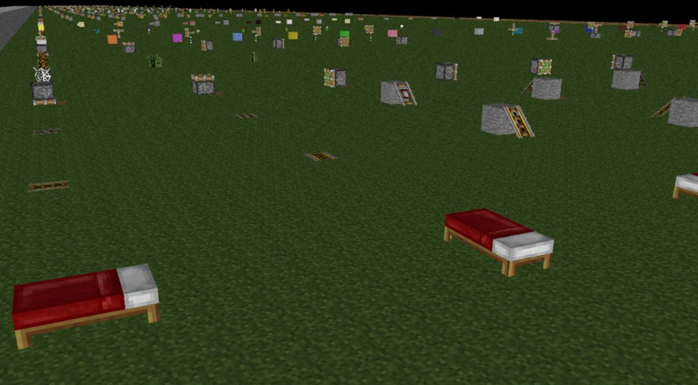
If you can't find your world in the list, you can select "Find your world..." at the bottom, which is the same as doing...
File | Open...: This option is for opening old-style schematic files and worlds. Navigate to wherever your schematic or world is stored and select the level.dat file. On Windows, the default folder for world save files is "%appdata%\.minecraft\saves"; for Mac it's "~/Library/Application Support/minecraft/saves/". Worth saying again: you can also load a world by dragging and dropping its level.dat file on to Mineways. Another pro tip: if you save or rename your schematic file to have the world "repeat" in it, e.g., rename "eiffel.schematic" to "eiffelRepeat.schematic", the schematic will load and be repeated across the map, with a minimum one block gap between each model. This can be useful if you want to create a single 3D print file that has multiple copies of the model. Also, for schematics, only, Control-A will select the whole schematic model.
NOTE: the new schematic file format introduced by FAWE for 1.13 data is currently not supported in Mineways. See this issue report for more information; short version: save you schematic to a world using WorldEdit, Litematica, FAWE, or similar, since Mineways can read worlds.
File | Import Settings: If you've previously exported a model from your world or schematic, you can select this data file (.OBJ, .WRL, or for STL export, the .TXT file generated) with Import Settings. Doing so will not only open your world, but will also set all the previous export settings you used to make this export file, including the color scheme and the terrain file chosen. Alternately, you can simply drag and drop one of these files on to Mineways to load it.
When you import a file's settings, the settings affect only the particular file type. For example, if you read in a WRL file for 3D printing, its settings will not affect OBJ rendering export (or even OBJ 3D printing export, for export settings specific to OBJ files, such as material output). This feature is backward compatible to Mineways 2.0, though features added since then will be given default values. The two exceptions are that the "Create a ZIP" and "create files themselves" export settings are not changed when settings are imported.
One other useful type of file that Import Settings can read in is a script file. You can create script files to automatically perform all sorts of operations, including special ways of modifying blocks during export. See the scripting documentation for more information.
The first image is a schematic pikachu7795240.schematic loaded via "File | Open..." In the second the schematic is renamed pikachu7795240repeat.schematic and loaded. The word "repeat" in the file name tips off Mineways to repeat the object. Also, I typed Control-A to select a single copy of the schematic.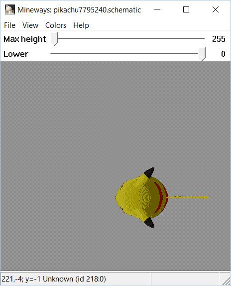 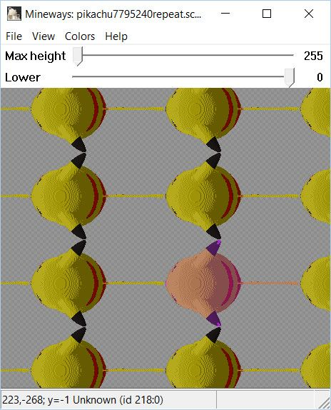
Here is a 3x3 set of objects output and viewed with G3D:
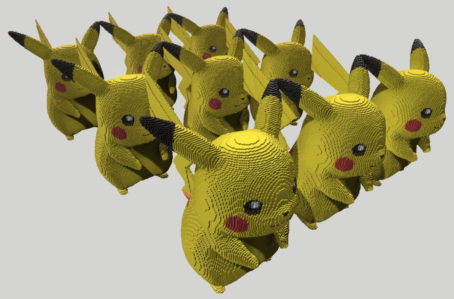
Mapping
Here's basic map use:- Press F3 to take you to your (single player) player's location.
- Scroll around by dragging with the left mouse button, WASD keys, or arrow keys.
- Zoom in on an area by the mouse scroll wheel, Page Up/Page Down keys, or Q/E keys.
- Mouse over a block and look at the bottom of the screen to see its location and ID. (Note that a coordinate like "-76" means "-75 to -76"; "4" means "4 to 5"). "Y" is the height.
- Use the slider at the top of the window to slice away all blocks above the given altitude.
- You can play Minecraft while using Mineways. In Mineways press the "r" key to load your world again, showing whatever changes you made.
- Search the menu for other options. Some quick notes on these less-descriptive options:
- The "hide obscured" option removes all blocks above the first air found in caves, making it easier to see the caves themselves. This option is turned on when first viewing the Nether.
Selecting a Region
To create a 3D file for viewing or printing you first select a 3D box in your world. Whatever is in this box is exported. Hold down the right mouse button (or left mouse and Control key) and drag to define a selection area. If you also hold down the Shift key, the selection region will be square. Key tip: once a region is defined, you can then use the right mouse button to select an edge or corner and drag to fine-tune the rectangle. Hit the space bar to automatically adjust the depth to something reasonable, if need be. Pro users: Using the mouse wheel with the Control key down changes the depth; using it with Shift down changes the visible height (this second mode can be slow, since the map is regenerated).Once you make a selection, you may get a dialog as shown below. Mineways will detect when what you see is not what you'll get. It will ask if you want to set the depth so that everything you can see from above that you have selected will be exported.
 At first, the selected area excludes some terrain visible from above, as the current depth is too high.
At first, the selected area excludes some terrain visible from above, as the current depth is too high.
Choosing "yes" lowers this depth and adjusts the slider
Note that sometimes the adjusted depth becomes too low, for example when the selection includes a deep hole. In photo above, the depth has been increased to the point where some terrain is now unselected. Bright pink shows terrain exactly at this depth.
By default, the heights used for the rectangular block are from y=63 (sea level) to y=255. The upper slider determines the visibility height, but usually you'll leave this one alone. You'll normally use it for viewing or selecting areas fully underground or in the Nether (or poking around your map to look for diamonds and other hidden treasures).
The selected export depth can be changed in a number of ways, even when no area is selected. The Depth slider is the simplest way to modify this value. If you click the middle mouse button on a location, the depth is set to its height. The [ and ] keys shift the depth by one, and so are useful for tuning. The spacebar will also select a reasonable depth for your selection volume, based on visibility (water is considered invisible, so that the bottom of lakes will be solid). Holding shift while tapping the spacebar will treat water and glass as opaque, useful for 3D printing. To micro-adjust the Height, use the < and > keys (with or without holding Shift). See the full shortcut key list for more options.
Key tip: to see what you're doing, export the model and view with a viewer. I usually work by adjusting the box size and export options in Mineways, export, then viewing the file in G3D (which reloads the viewed file when you tap the "r" key) or, for .WRL files, MeshLab (unfortunately, their Alt-R reload doesn't clear out the previously-loaded file) to see the results.
Exporting Models and Maps
If you want to render the model, select "Export for Rendering" from the File menu, or use Control-R, and save your file. The resulting file(s) can then be imported into a huge variety of 3D modelers and viewers, e.g., Blender. See this section for instructions for various popular modelers.You can select "Export Model for 3D Printing", Control-P, to create a model suitable for sending to a 3D printer. Even if you don't have a 3D printer, you can still get it printed, usually for a reasonable price. See the next section for how to get going.
The big difference between rendering and printing is that 3D print models must be solid and well-formed. Currently Mineways treats all blocks as solid, full blocks: half-steps or stairs are treated as blocks, as is every other block. There is also no transparency for the materials, since printers do not currently support this type of creation. Models for rendering can, when full texturing is on, include billboard models for flowers, saplings, crops, and other elements. Note that the billboard locations are added in comments to the output .OBJ and .WRL files. In this way, a dedicated modeler could substitute his own elaborate grass, flower, or other models in place of the simple billboards Minecraft provides.
To make your model immediately viewable on the web in 3D, choose the third option "Publish to Sketchfab." Mineways directly uploads your model to the Sketchfab site and makes it displayable to everyone. It's fun and easy, honestly. Go here for detailed instructions.
The next option is "Export Schematic", which allows you to then import your model to another world by using Amulet, WorldEdit, Litematica, or FAWE. Note that Mineways can read any old-style schematic file by using "File | Open...".
Schematic files are commonly used to share constructions among builders. You can upload and share these files on sites such as Planet Minecraft. Signs will not have text, chests will lose their contents, objects such as paintings are not exported, and heads are turned into pumpkins. Currently no export options beyond the dimensions and the rotation angle affect schematic export in Mineways, and the rotation angle only partially works, mostly for full blocks that do not have any orientation. In other words, the orientation angle will rotate the model as a whole, but each individual block will not be rotated: stair steps and signs will still go the old direction, rails get "interesting," and so on. I'd avoid it... Also, 1.13 and newer elements will export as grass blocks and a warning is issued, since the standard schematic format does not support these. Mineways does not support the new schematic format, sorry.
"Export Map" is simple: whatever area you have selected is exported to a PNG-format image file, named as you wish. The zoom level affects the result, though will differ slightly from what you see on the screen for boring reasons. While you can manually export any portion of the map manually, the real power is from using scripting. You can make a simple text file to specify more than one map. Each map can be set to display a different part of your world, or even a different layer, by adjusting the maximum Y height. See (and run) the sample file "scripting/make_map_tiles.mwscript" for an example that creates four adjacent 1000x1000 maps centered around location 0,0.
If you want to edit these maps, consider using ImageMagick, which lets you perform all sorts of annotations and much more. See the file mineways_annotate_map.bat, which shows how to create a PNG map file, then run annotate_map.py to create a .bat file that then calls ImageMagick to annotate the map with coordinates and map file areas.
See the file "scripting/make_slice_maps.mwscript" for making a series of layers that you can turn into an animation. You can then make animations like this (and at a slower speed):


Out of memory?
Under "Help", the "give more export memory" frees memory as possible while exporting. This option can allow you to export a large model you normally couldn't, at the cost of slower map update and export. What it does is unloads all stored world chunks (the 16x16x256 high pieces of your world) when exporting, reloading these after export. Also, the chunks loaded get reduced in size, which can help showing large maps on extremely limited machines (such as Windows 32). If that fails, you can use scripting to export your world as separate "hunks."
Displaying with G3D
Once you have a model for rendering, you might want to preview it before importing it to 3D modeler. If you are using Wavefront OBJ files (the default), I recommend the free G3D viewer (pro tip: hold the Alt key down and use WASD to move fast in G3D). This viewer now recognizes a special tag in the OBJ's material description that makes Mineways models display with the classic blocky Minecraft look. If you use VRML or STL files, MeshLab is a fine free viewer for these other formats for 3D printing (however, it does not handle transparency and cutouts well, so is poor for viewing renderings).Download this special version of G3D here. Unzip and run, then drop your .OBJ file on to the window to view it. Simpler yet, you can set up your Windows system to view .OBJ files with G3D when double-clicked. Just run register-G3D-viewer64-run-as-administrator.bat one time as administrator (see these instructions to learn how).
Camera controls: WASD for normal movement, ZC for up and down, QE for swivel. Hold down Shift to go more slowly, Alt to go fast. Escape to quit.
Aside from being a lovely renderer, G3D has additional features such as making a screenshot (F4) and recording a video (F6). Press F11 to see various developer features. The master G3D site is here.
Here's an example, side to side, of a lot of the blocks in Minecraft.
G3D displaying an OBJ rendering file:
Color Schemes
Color schemes allows you to change the color for many blocks, and - useful for 3D printing and some rendering applications - remove any blocks you want from view. One tip: you can eliminate all glass from your model by setting its alpha to 0 in a color scheme. This part of this video shows how to use color schemes to do this.Note: with the new file format introduced with Minecraft 1.13, the whole "blocks from 0-255" way of listing block types is not valid for newer blocks. Mineways still uses a form of this internally, so the feature is still in place. Also, Mineways has evolved to provide colors for different colored blocks of the same type. For example, the various wool blocks will display using their colors. Changing the color of the wool block using a color scheme will change only the white wool version of the block. Color schemes still have their uses, such as for removing some blocks from view and from export. Color schemes use my internal block type numbering system for blocks from 1.13 on. If you get flaky problems with older color schemes, at worst you can always run REGEDIT and delete the ColorSchemes directory at "Computer\HKEY_CURRENT_USER\Software\<your name here>\Mineways".
How to use a color scheme: From the menu, Add a new color scheme, then Edit it. Change the name "Color Scheme" at the top of the dialog that pops up to something useful, then select any block type to edit it. Color is given in hexadecimal color format. You can use MWSnap (old but free), FastStone Capture (new but costs $20), or other programs to find the hexadecimal (e.g., #787878) color value of any pixel on your screen. 'Alpha' says how opaque a block will appear on the screen, with 255 meaning fully opaque and 0 meaning fully transparent (invisible). Blocks with an alpha of 0 will be deleted when exporting. You can turn off export of all blocks by using the "Hide All Blocks" button. This feature allows you to create separate parts, e.g., a glass roof could be created by then turning on just glass export. The "Hide Tree Blocks" hides all log and leaf blocks, making printing of 3D terrain simpler (trees are sometimes hard to print well).
Changing the color will affect the 3D print model's color for only the "solid material colors" and "richer color textures" export modes; "full color texture patterns" (the default on the export dialog) will not be affected (except water, a little bit). To change full color textures' colors, you need to edit the input terrainExt.png itself. See Creating Your Own Terrain Files.
"My Model's Too Expensive!"
If you export to 3D print and upload to a 3D print service, you might be surprised to find that the price is sometimes just shy of a used car. Expensive models happen because either the model is too large, or too small.The most common problem is the exported blocks are not small enough. This happens with larger models, those 100+ hour darlings you sweated over in Minecraft. The cause is that, by default, Mineways exports the model to print at a safe size. For example, colored sandstone has a thin wall dimension of 2 millimeters. This means if some wall in your model is less than 2 mm thick, it is in danger of breaking into pieces if printed in color.
Models with only a few blocks in them can also be expensive. The problem is that you'll scale it up to see it. Each block itself is then massive. You have to pay for each block's volume. Mineways can't help you much there, you'll need to use a CAD program to hollow out your object manually.
There are some solutions to the price problem:
- Switch to the white and flexible physical material. Choose this material in the options dialog on export and the thin wall minimum drops to 0.7 mm, a reasonable default. This brings the price (and size) of your model down. You do lose color printout, but can paint the model yourself. Your model should print safely.
- Print it smaller and cross your fingers. Change "Make each block 2 mm high" to "Make each block 1 mm high", for example: at 1 mm/block, you can print 8 times as many blocks as 2 mm/block. I like this scale a lot, it's cute. Two examples: World in a Bowl and Sentinel Castle. If you don't have any tree trunks (which at 1 mm will snap right off), thin walls, or other filigree, the model should be fine. You can remove trees from your model by using a color scheme that makes leaves and logs invisible. See this video, which shows how to make glass blocks invisible; just do the same with logs and leaves. At worst, at 1 mm other little bits might break off. Companion cubes will print with no problems, models of ships with thin masts and lanyards are much less likely to survive. Keep going smaller until you like the price, or simpler yet, just choose the scaling option "Aim for a cost of $25.00" or whatever you want. Note that the 3D print firm itself might refuse to print your model if they believe some parts are too thin to support the structure; here's an example where Shapeways (now defunct) decided the support struts were not thick enough.
- Learn more about the options below. Proper use of "fill bubbles" and "super-hollow" can easily combine to reduce your costs by 2/3rds. "Seal off entrances" and "Fill in isolated tunnels" can also help. These options are useful for going to a smaller scale but still having thick enough walls. The strategy I like is to have the interior of the building get filled with blocks by using "fill bubbles" and then have "super-hollow" remove most of these blocks, leaving a shell that's thick enough to print. Long and short, don't print what you can't see.
{kind=link}
By default, Wavefront OBJ *.obj (and *.mtl) files are exported for rendering, VRML97 (aka VRML2) for 3D printing. Here's the rundown of the various file types you can select, including some subtleties about each. If you want to export to the glTF format, one indirect way is to upload to Sketchfab, make the model downloadable, then download from there.
OBJ, absolute: Wavefront OBJ is an old format, so is commonly supported as an import format for a huge range of applications. If you export materials, a corresponding *.mtl file is output; if you export textures, one or more *.png files are also created. The .obj and .mtl files are text files, so can be edited or processed further. By selecting "absolute" for the OBJ file, indices are absolute (positive), the norm. This is the format to use for export for upload to Sculpteo. See other export choices in the OBJ file export options documentation.
OBJ, relative: relative indices are used on faces. These allow you to concatenate two or more OBJ files into a single OBJ file.
Binary STL: This file format is commonly used by 3D printers. It normally is used for single-color materials, but the exporter will use either the Materialise Magics or VisCAM format to attach colors to triangles - see this article. I recommend using VisCAM's variant, as MeshLab will then display the proper model colors. When STL files, binary or ASCII, are exported a corresponding *.txt file is generated with information about the model. This same data is included in the beginning of the *.obj and *.wrl files themselves. This text file can be read back into Mineways using "Import Settings" to set everything back the way it was set before.
ASCII text STL: A variant for 3D printers, the file generated is considerably larger than the binary form and cannot include color. The main advantage is that this file type is a simple text file and so can be easily edited. The format is trivial and so can provide a raw set of triangles for a model.
VRML97: Also known as VRML2 or VRML 2.0. While this format has been superseded by X3D, it is commonly supported by a wide range of packages. That said, its main reason for existence here is that it's the only file format that Shapeways used for colored models. Given that Shapeways went bankrupt in July 2024, don't expect much further support for this format.
Export Options
There is a bewildering dialog that pops up on export, with a ton of options. You can blithely ignore this dialog and just click OK (or hit the Enter key). But, there are lots of variations possible: you may want to animate individual blocks, need special options for your rendering program, want to resize or reposition your model, on and on.
When this dialog is up in the program, you can hover over most of the options to get a bit more information on what each is about; some you have to hover over the box itself.
If you find you always want certain options set, you can easily do so using mineways.bat to start the program and edit the script file scripting/startup.mwscript. See those files and scripting for more on doing so.
Click on the image below to be taken to the relevant documentation (yes, old-school image map!):
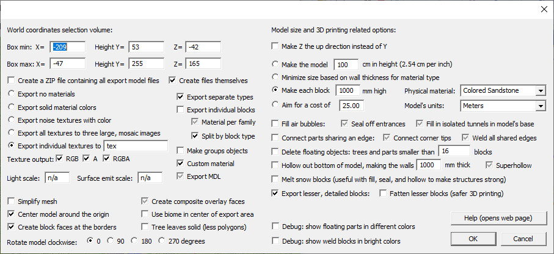
World coordinates selection: you can see and change the 3D volume of space to export from your world. If you want to know the location of a place in your world, use the F3 key when playing Minecraft. Note that negative values like -5.239 will round down to -6. Also note that your Y-value altitude is one higher than where your feet are located, and so two higher than the ground beneath you.
Key tip: If you exported a model in an earlier session and want to use the same settings for another export, read the model file (.OBJ, .WRL, or for STL the .TXT file) with the "Import Settings" command from the "File" Menu. Simpler still, just drag and drop the model file on to Mineways!
Create a ZIP: like it says, when exporting for 3D printing a ZIP file of the exported files is created, ready for upload for 3D printing by an online 3D print service.
Create files themselves: the exported files themselves are also made available for previewing. By default, this option is off for VRML 3D printing, on for everything else. This is done because too often the .wrl file was uploaded to Shapeways (now defunct).
Material Export
Remember that for any format you can turn off a block from being output (and being visible) by setting its alpha to zero in your own color scheme.
On the left of the dialog are texture options:
- "Export no materials" option is just that. For example, for OBJ, no .mtl file is generated.
- "Export solid material colors" will give solid swatches of color for each material. The color scheme's colors controls these.
- "Export noise textures with color" gives textures that have some noise in them. For the OBJ file format the difference is that a PNG texture file is output; VRML97 always exports a texture for any material option. The color scheme's colors controls these. Rarely used or useful, but gives a different look.
- "Export all textures to three large, mosaic images" creates three large images - RGB/A/RGBA - of all possible textures needed, in a grid. See additional note following this list. This option requires the terrainExt.png file, reading this file to create full textures for each block, as possible. The color scheme affects only the water color: the higher the alpha set, the more of the base color you define is combined with the water texture. So, for a deeper blue, you can define the two water colors (note there's a "stationary water") as dark blue or even black and a high alpha, e.g., 200.
- "Export individual textures to" can be used only when exporting OBJ and USDA files for rendering. It is like "Export all textures to three large, mosaic images," above, but instead single images are exported for the block faces, by default to a subdirectory "tex". For USD the textures are places in the "yourfilename_materials" directory instead of "yourfilename_materials/tex". If the "tex" directory is set to blank instead of "tex", all output files are placed in the same directory as the main output file - no subdirectories are used. This can be a good thing for multiple exports, as only a single copy of the textures needed are output. The "tex" option is meant to help avoid any confusion about which textures go to which exported models.
Content is shown on the left exported with "all textures to three large images" and on the right with "individual textures." Mipmapping works properly with individual textures.
Texture Output
These options were originally for the "three larger, mosaic images" export option, but can also be used with the default "Export individual textures" option. For this second option, unchecking all three checkboxes means no texture images themselves get exported. The output model file(s) will still reference the textures. Used properly, turning off texture output can save you time each time you export a model. For example, say you export a model, then realize you want to export it again, but with a smaller volume. In that case, the model will use the same or fewer textures, so you could turn off texture output. Another use is when you want a model to use a directory of customized textures and do not want to overwrite it.If you "Export all textures to three large images", by default there are three types of files that can be output to PNG files, as needed. "RGB" is a colors-only file, "RGBA" is colors and transparency, "A" is just the transparency values. For 3D printing, only the RGB file is exported. For rendering export, if any blocks needing transparency are found in your model, then the "RGBA" and "A" files are also exported. Some rendering systems need only one or two of these file types, not all three. If you know this in advance, turn off the export textures you don't need.
The "texture output" export option can save you much time if you are exporting the same model a few times (e.g., you're editing its bounds), especially while using a large custom terrainExt file (see the next paragraph for what that is). You can export your model once with textures on, then modify your export and, by exporting to the same file name, you don't need to export the textures again.
Custom Terrain
The one file you may want to change is the terrainExt.png file that comes with Mineways. To select a different terrainExt.png file, use the "Choose Terrain File" under the File menu. You can also simply drag and drop a terrainExt*.PNG file on to Mineways. In either case, at the very top of the Mineways program you'll see what terrain file is active, right after the name of the world you've opened. Mineways supports a number of premade terrainExt.png files for you to try.
Visit the Textures page for previews and download links for terrain files not included in the Mineways distribution.
If you have a terrain PNG file you would always like to use by default, copy it into the directory where mineways.exe is located and call it terrainExt.png, replacing the one that is there. For example, if you always want to use terrainExt_Smoolistic.png, delete (or, better, rename) terrainExt.png, then copy terrainExt_Smoolistic.png to terrainExt.png. If you know how to use the command line, a better way is to use a command line option to specify the terrain file to use on startup, e.g., "mineways.exe -t terrainExt_Smoolistic.png". Better still, you could make a batch file called, say, "my_mineways.bat" that contains the single line "mineways.exe -t terrainExt_Smoolistic.png" and double-click that to start up using your preferred terrain file.
Mineways in fact comes with "mineways.bat", which resizes the startup window and calls the scripting/startup.mwscript script (which does nothing, but can be edited to perform various startup commands). Yet another way is to use File->Import Settings and read in a Mineways script to change the terrain file. This is handy for exporting the same model multiple times, each time with a different terrain file applied.
For a more thorough explanation of textures and how they're used in Mineways, read the Textures page. To make terrainExt.png files yourself, see Creating Your Own Terrain Files.
3D Printing: The effective 3D print resolution of textures appears to be around maybe 10x10 for the default output block size of 2 mm/block. Fine details are unlikely to be visible, though sometimes I'm surprised to see them.
This model is printed at 3 mm/block and shows the original 16x16 TNT texture; however, at both ends the fidelity becomes poor.
This model, from Alexander Boden, is a 5 mm/block print which clearly shows details such as cobblestone and tree bark.
Blurry Textures
If your rendering software doesn't show the distinctive blocky style of Minecraft, you can fix this in two ways. The first is to set texture sampling in your renderer to be "closest" or "nearest neighbor." This is the easiest solution, though can make mipmapping unavailable. See the instructions for the various renderers for more information. The other option is to use higher-resolution textures, which will simulate turning bilinear interpolation off.On the left, the basic 256 x 544 terrainExt.png file is used; on the right, the input terrainExt.png image is resized (without filtering) to 1024 texels wide. You can download high-resolution versions of terrainExt.png: 1024 wide and 8192 wide. In Mineways do "File | Choose Terrain File" and select either; the higher-resolution version gives sharper results, at the cost of memory.
{kind=link}
{kind=link}
You can also interactively compare these sampling methods here vs. here.
These textures are for the default Minecraft appearance. To avoid blur for your own terrainExt.png file, resize it to be say 4x larger in both directions. You can use the TileMaker program included with Mineways (use the "-t tileSize" option), or any other image manipulation program (I'd use "nearest neighbor", if possible - IrfanView has this option when resizing a texture by doing "Size method: Resize"). Note: from experimentation, this higher resolution does not improve the clarity of 3D texture printing.
There is a case where you'll want your textures to be blurry: when they're far in the distance. Usually, mipmapping is done by a renderer to make this happen. The Minecraft block textures are normally put in one large texture and each is given a border 1 pixel wide. This border avoids bilinear interpolation artifacts. However, mipmapping for extremely far blocks will not work well, since block textures are next to each other in this big texture. The solution is to either "Export individual textures" (where each block face is exported to its own texture), or disable mipmapping for rendering and live with the artifacts (other sampling techniques should work fine).
Wavefront OBJ Export Group Options
If you find you want your model data to be arranged a bit differently for your rendering system, there are a bunch of options. These vary how Minecraft blocks are grouped and how materials are shared among different block types. Every rendering system imports OBJ files differently, so try different combinations and see what you prefer. Most of these options do not affect display. These options are mostly for determining how much control you have over modifying materials and moving blocks around.Wavefront OBJ has two concepts when it comes to polygon faces: named objects and named groups. In Mineways there can be one or more objects in a scene, each object can have zero, one, or more groups inside of it. Normally there is just one object exported; the "Make groups objects" creates a separate object which then contains a corresponding group.
Mineways has (rough) "block families." For example, the Stone family has stone, granite, polished granite, diorite, and so on. Each block in this family has a separate "type." Materials can be output by one per family or one per type.
Any number of polygons can be in an object or group. There is also a set of materials (defined in the .mtl file). One and only one material is applied to each polygon.
- Export separate types: on by default, this option says each type of block - stone, logs, fences, and so on - are put in a separate group. Turning this option off means no groups are created, which can be useful for simplifying import into rendering packages but can make editing more difficult. This option does not affect how many materials are generated.
- Export individual blocks: This option is mutually exclusive with the previous option, "Export separate types." Normally Mineways exports only those faces that are visible. By checking this box, all faces of every block are output, allowing you to animate such operations as mining or explosions. This considerably increases file size and render time, so use it only if you need it. You may also want to check the Make groups objects option, e.g., for Blender export, as each group will then be a separate object you can manipulate. For Blender you'll also want to make sure "Material per family" is checked. Note that the individual blocks option will change the appearance of some blocks, such as water and glass blocks, as all faces now have sides, which are visible. Normally Minecraft removes these interior sides (e.g., where two glass blocks share a face), but this option makes them visible. This option works for OBJ and USD export.
- Material per family: on by default. Only affects export when exporting the three large mosaic textures. When on, the default, blocks in a family (or type; see next option) have their own material. If turned off, a single material is used for all objects. When exporting individual blocks, this checkbox affects whether each block is in its own group (making it easier to edit: move, delete, etc.) or whether individual blocks are grouped by material. To reiterate, this option does not affect anything when exporting individual textures, as each individual texture needs its own material and so materials cannot be grouped.
- Split by block type: Blocks have a family and a type. When checked (the default), the individual types are used for grouping polygons and, for mosaics, generating materials. You can see many of the families on this page, e.g., Stone, Granite, Polished Granite..., through Polished Andesite are a family. New groups are generated when there's a physical difference in the material itself, not just geometric changes. For example, campfires, sea pickles, and respawn anchors will be given separate emission levels when this box is checked; else the maximum light level is assumed. Usually you'll want this box checked, unless you're finding you would rather have fewer groups (and fewer materials, for mosaics).
Confused yet? There are non-obvious interactions among the various settings. A table follows, describing the results when using this 2x3 set of blocks - two grass blocks, two stone, two diorite - as the exported volume, and when using the large mosaic texture option. Recall that diorite is part of the stone family. This table fully applies when using the "three mosaic image" material output option. For individual texture output, the "Material per family" option is grayed out, since it has no effect. Results are described as "For mosaics" when materials are output using "three large, mosaic images" mode and "For individuals" when using "individual textures" mode. Note that for individual texture output, it is always the case that different textures will need different materials.
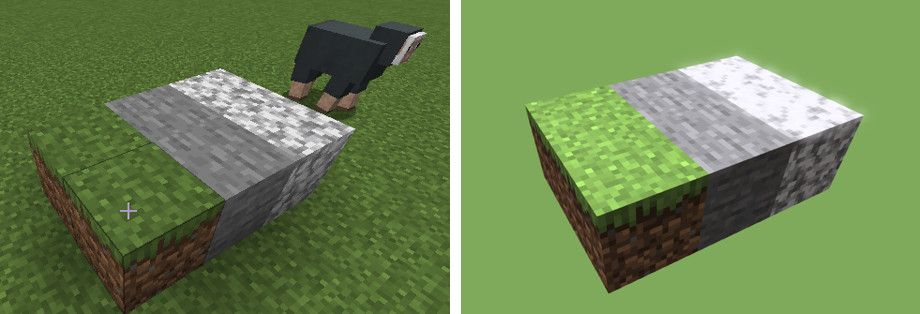
| Export separate types | Export individual blocks | Material per family | Split by block type | Effect on objects | Material library produced for mosaics (only!) |
| SELECTED | unchecked | SELECTED | unchecked | Polygons are grouped by block family. For individual textures, one group is made for Grass, one for Stone that includes both the stone and granite blocks. Similarly, for mosaics, result is one Grass_Block group using the Grass_Block material applied to 8 block faces (the visible faces of the two grass blocks) and one Stone group using the Stone material applied to 14 faces (the visible faces of the four stone-related blocks, Stone and Diorite). | Each block family has a separate material. Result is two materials for mosaics, Grass_Block and Stone. |
| SELECTED | unchecked | SELECTED | SELECTED | Default for rendering: Polygons are grouped by block type. For individual textures, there are three groups: Grass_Block, Stone, and Diorite. For mosaics, result is one Grass_Block group using the Grass_Block material applied to the 8 visible block faces, one Stone group using the Stone material applied to the 6 visible faces, and one Diorite group using the Diorite material applied to its 8 visible block faces. | Each block type has a separate material for mosaics. Result is three materials: Grass_Block, Stone, and Diorite. |
| SELECTED | unchecked | unchecked | unchecked | Polygons are grouped by block family. For individuals, since "Material per family" does not affect export in this mode, the result is the same as two rows above: one group is made for Grass, one for Stone that includes both the stone and granite blocks. For mosaics, result is one Grass_Block group with 8 visible block faces and one Stone group with 14 visible faces. | Single material for mosaics. A default MC_material is created and applied to all polygons. |
| SELECTED | unchecked | unchecked | SELECTED | Polygons are grouped by block type. For individuals, since "Material per family" does not affect export in this mode, the result is the same as two lines above: three groups, Grass_Block, Stone, and Diorite. For mosaics, the result is one Grass_Block group with 8 visible block faces, one Stone group with 6 visible faces, and one Diorite group with 8 visible block faces. | Single material for mosaics. A default MC_material is created and applied to all polygons. |
| unchecked | unchecked | (grayed out) | (grayed out) | Default for 3D printing: No groups are created at all. Result is 22 visible block faces. | Single material for mosaics. A default MC_material is created and applied to all polygons. |
| unchecked | SELECTED | SELECTED | unchecked | Each individual block is in its own group. Result is 6 block faces in each of six groups (the six blocks): block_00001, block_00002, etc. For mosaics, the related material family, Grass_Block or Stone, is assigned to each block in turn. | For mosaics, each block family has a separate material. Result is two materials, Grass_Block and Stone. |
| unchecked | SELECTED | SELECTED | SELECTED | Each individual block is in its own group. Result is 6 block faces in each of six (block) groups: block_00001, block_00002, etc. For mosaics, the related material type, Grass_Block, Stone, or Diorite, is assigned to each block in turn. | For mosaics, each block type has a separate material. Result is three materials, Grass_Block, Stone, and Diorite. |
| unchecked | SELECTED | unchecked | unchecked | Individual blocks are output, but grouped by block family. Result is one Grass_Block group and one Stone group. For mosaics, the Grass_Block material is applied to two blocks' 12 block faces and the Stone material is applied to four blocks' 24 faces. | For mosaics, each block family has a separate material. Result is two materials, Grass_Block and Stone. |
| unchecked | SELECTED | unchecked | SELECTED | Individual blocks are output, but grouped by block type. The result is three groups: Grass_Block, Stone, and Diorite. Mosaics have the Grass_Block material applied to two blocks' 12 block faces, the Stone material applied to two blocks' 12 faces, and the Diorite material applied to two blocks' 12 block faces. | For mosaics, each block type has a separate material. Result is three materials, Grass_Block, Stone, and Diorite. |
When exporting individual textures these settings have slightly different meanings, because separate materials are created depending on the texture needed, not the Minecraft block family or type. "Export individual blocks" then means that "Split by block type" has no effect, since materials are set as needed. Similarly, if neither "Export separate types" nor "Export individual blocks" is on, materials are output as needed, since there can be no "single material for all" with "individual textures." Long and short: try various options out and see what they do.
Make groups objects: By default, the OBJ file produced has just one object, consisting of everything exported. If you want to make each group into its own separate object, which can be useful if you are trying to export individual blocks and animate them in the scene, check this box. This is useful in Blender, for example.
Custom material
Checking this box causes a more elaborate illumination model to be output for OBJ (see the USD documentation for its effect with that format). By default it is checked, so that a more elaborate material model is used. Specifically, the parameters Ns, Ka, map_Ka, illum, and Tf are set. Also, a special mode is exported for use by G3D: "interpolateMode NEAREST_MAGNIFICATION_TRILINEAR_MIPMAP_MINIFICATION". This hints to G3D to make the textures look blocky, giving the classic Minecraft look. This line should not hurt OBJ readers, which should simply ignore it (or possibly flag a warning).
If you are using a physically based terrain set, the custom material will also include additional channels of information, such as textures for normal maps, shininess power, metallic, and emission textures. These attempt to follow this proposed specification, also documented here. An example:
- map_Kn block_world_tex/redstone_torch_n.png - the RGB normals map (not a heightmap, so "bump" or "norm" is not used)
- norm block_world_tex/redstone_torch_n.png - an alternate way to attach the normals texture
- map_Pm block_world_tex/redstone_torch_m.png - the grayscale metallic texture
- map_Ke block_world_tex/redstone_torch_e.png - color texture for the illuminant parts of the model
- map_ns block_world_tex/redstone_torch_s.png - the grayscale specular power texture, 0-255
- map_Ns block_world_tex/redstone_torch_s.png - an alternate way to attach the specular power texture
Special note: in terrain files, the one ending in "_r.png" is a roughness texture. When exported for OBJ, this texture is inverted and the exported files are named "_s.png", for "specular". This is all a bit confusing, I know, but my advice is to export using terrainExt_JGRTX64.png, for example, and see what gets created for you, with "Custom material" set or not. If you want the "r" version, you can either manually invert the _s.png images (ugh), or just do a separate USDA export, which will produce the _r.png versions.
Pixar USD File Export Options
Pixar's USD format is getting uptake in many popular digital content creation (DCC) applications, including Cinema 4D, Houdini, Unreal Editor, and Blender. It is more full-featured than the ancient Wavefront OBJ format, including direct support for physically based materials, emitters, and more. If your package of choice supports it, consider using it! And if you don't like Mineways' exported USD, or even if you do, you should also give MiEx a look, as it can support mod export and more!
In Mineways there are a few changes to how the export dialog works. Some export options are not supported, as the focus has been the highest-quality and more flexible export option: Export individual textures. This form lets you replace and edit individual texture files. USD export works particularly nicely with the JG-RTX terrain files.
What follows are how various options apply to USD export. Also, Mineways' "View | Light" can be toggled on to give nighttime lighting. Turning "View | Elevation shading" on will give a light fog to the USD scene exported.
Export individual blocks: With USD export, two additional USD files are produced, "*_BlockLibrary.usda" and "*_MaterialLibrary.usda". USD structures its data in different forms. These additional files contain the individual blocks and materials, in case these are of use as-is.
Export MDL: Applies only to USD export. MDL material descriptions are exported. These generally give higher-quality looks to glass objects, for example. Omniverse USD Composer is the main user of MDL at this point, with other applications coming up to speed. Turning this off will export only UsdPreviewSurface material descriptions. Note that UsdPreviewSurface descriptions are always exported.
Custom material: This option is ignored if Export MDL is off. For USDA export, the Custom material setting mainly has the effects of making the texture's texels appear blocky, in Minecraft fashion, and present stripped down materials in Omniverse USD Composer. I uncheck this box for higher-resolution resource packs (basically 64x64 or larger tiles) so that the textures interpolate more smoothly. This option is also discussed in this video.
Light scale: Used only by USD. This has a value of 30 by default. You can change the intensity of the lights exported to USD - the sun and dome light - by changing this value. The sun is normally at 30, the surrounding dome light is 6. Nighttime lighting of 2 and 2 respectively, is used if you toggle on the View | Lighting option before export. If you set the light scale to 0, the two lights will not be exported to the USD file and the default camera will also not be exported.
As of August 2023 lighting in the USD specification is not well defined, meaning programs will be (sometimes radically) different in their interpretation of intensity values. Currently "30" means a value of 1560 for the sun and 312 for the dome light. These work well with Omniverse's USD Composer and the upcoming Blender 4.0.0 release. For the UsdView viewer, I have found that 40,000 and 0.5 are better values, respectively. Since light scale is one control for two intensities, you will likely need to hand-edit the resulting USDA file to such values. Alternately, set the scale to 0 and no lights are output.
Surface emit scale: Used only by USD. This has a value of 1000 by default. It's more or less a nit value for emitting surfaces. Omniverse USD Composer looks good with the default, though realistically the emitters are then quite bright (but look good for interior scenes or when the sun is turned off). Adjusting the camera exposure is another way to deal with this situation.
The default of 1000 converts to an internal value of 20.0 for inputs:scale. For UsdView this can give a washed out look; a value of 50 may be more appropriate.
Global Model Options
A few options change how blocks' coordinates and textures are output. If you want to change the overall scale of the model, use the "Make each block" option in the upper right of the dialog.
Simplify mesh
This option merges neighboring squares to create larger rectangles. This can significantly reduce the model's size. However, it has the drawback of turning off randomized texture rotation. Normally grass and other blocks are rotated randomly by Mineways (and Minecraft) to break up the patterned look of a single texture being repeated over a large area. Simplify mesh is only available when exporting individual textures (but not individual blocks) for OBJ and USD export, and only for rendering. It is not available for 3D printing, as doing so can cause T-junctions, which can in turn cause 3D printers to fail. It is also currently not available for untextured model export, since there are better simplification systems available (some of which do work better for 3D prints), such as Meshmixer, MeshLab, and inside Blender.
Here is a side by side comparison of a mesh's look normally and simplified, without and with wireframe for the grass. This (admittedly near-optimal for simplification) export from the built-in "[Block Test World]" went from 142,428 to 15,726 triangles when simplified. Note the pattern repetition on the grass in the upper right.
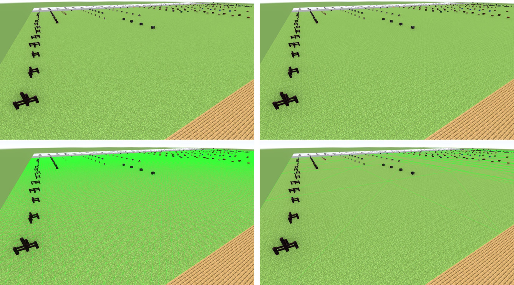
Create composite overlay faces
For 3D printing there cannot be "floating" cutout textures such as vines, ladders, rails, torches, and so on. These block types are overlaid atop the underlying block and a new "composite" texture is saved and used. This process must be done for 3D printing. For rendering with mosaics it is an option. The advantage of leaving this option off is that the result more closely matches Minecraft itself, and that each object has its own material. It also means that all render files exported could use single set of PNG textures, since no composite textures are created. The main drawback of having this option off is that you may encounter z-fighting problems, stray shadows, or other artifacts in your renderings.
This option was on by default for rendering up to version 5.00 of Mineways (in truth, it could not be turned off); as of 5.01 this option is off by default.
Center model around the origin
When checked, the center of the bottom of the model is put at the origin, location (0,0,0). This helps for import into some renderers, and can improve the floating-point resolution of the data. If you want to instead have the same coordinate values as in your world, uncheck this box (you might also want to set the "Make each block" size to whatever you like). Unchecking this option is useful if you do multiple exports from the same world for rendering and want them to use the same coordinate space. Multiple exports are a way to get around the export size limits for the 32-bit version of Mineways, which is what runs on the Mac.Use biome in center of export area
Instead of the default colors (seen on the Plains biome), use the grass, tree, and water colors computed by the biome in the export. Currently the biome at the center of the export is used for the whole export. It would be nice to export multiple biomes someday, but this is a complex export, as it can require many different color variants of grass and tree blocks. Show biomes (F8) to display the biomes in the map itself.Create block faces at the borders
This option is only available for rendering, to reduce polygon count. When on, the edges of the export the model are sealed off with whatever blocks were at the borders. For 3D printing this is necessary, as the model must be a solid object. For rendering these side and bottom polygons often are not needed, as the camera is usually positioned to never view these areas of the model. Turning this option off for rendering also allows better "tiling", where you export a world piece by piece and read all the pieces in (see center model, above), as it pays more attention to neighboring blocks just outside the borders. Note: the various 3D print "fill air bubbles" methods will turn off this method (it's a bug).In the scene below, the camera is dollied out to see the borders. The model with borders off, on the right, has about 15% less polygons in it.
Tree leaves solid
This option is only available for rendering, to reduce polygon count. Tree leaves are "cutout" textures, which means that by default each leaf block is exported, along with the trunks. In forested scenes this can make for a lot of extra polygons. By checking this box, leaves are made solid with a black background, which then allows many less polygons to be generated. For example, in the scene below, rendered with G3D, the transparent leaf model has 986k triangles, the solid leaf model just 369k triangles.Rotate model clockwise
Can be useful for choosing a default view angle for other programs reading in the model produced. For example, the view of the model was rendered by Shapeways (now defunct) from the south-south-east. So if your model faces west, you might rotate it 270 degrees to have it face south and so display better on your models page.The rest of the options mostly have to do with 3D printing, which follows. The main exception is "Make each block 1000 mm high", which can be used to change the size of the model output, for other uses.
Exporting to 3D print
As background, view the Shapeways 3D color printing process video. Shapeways itself is defunct, but the process remains the same. Layers of material are laid down and solidified at the appropriate spots. Unsolidified "sand" is vacuumed away. You pay by volume, not by complexity. What this means to you is: avoid making enclosed spaces with tiny entrances. Unfortunately, most buildings are just that: large rooms with small doors. Your job is to make sure your model has either no openings at all, in which case the Hollow option can clear out the inside, leaving just a shell. Alternately, make escape holes yourself using snow blocks, which you then melt after all processing of your model. I'll explain these options below.There are other potential pitfalls with 3D printing, such as thin wall problems (more here), and too many polygons (rare for a Minecraft model), to name just two. They're now bankrupt, but Shapeways' tutorial pages and materials pages give you a lot to chew on, Sculpteo also has a help section. The Mineways program tries to guide you past the major pitfalls, but it's always possible to generate something that's essentially unprintable: too weak, holes too small to clear out the dust, or some other problem. Browsing the tutorials there should help you understand what is possible. This post might help you with 3D printer settings. Options follow.
Make Z the up direction instead of Y
Z up is the norm for 3D printing. Some graphics applications consider the Y direction to be "up", some Z. If your model imports sideways into your application, check (or uncheck) this box.
Model Size
There are four major ways to set your model's size.- Make the model #N cm high: you can specify how high you would like a model to be. This is also useful for rendering output, where the default is set to be reasonable for import into Blender.
- Minimize size based on wall thickness: if you want to make "draft" 3D print models that are as small as safely possible, check this option. That said, if you know your model has thick walls, you could make your model smaller still by using the next option.
- Make each block #N mm high: by default, the safe wall size (for a non-supporting wall) is shown here. You can make this value smaller if you are convinced that your model is thick enough to print. Mineways will issue a warning nonetheless. This option is also useful for rendering output. Note for pixel-art makers: if you export pixel art, the thickness of pixel art model is usually just one block wide. If a model is too thin, it might not be printable - the online firm may reject it. As an example, you might use the "Make each block" option and set it to 2.5 mm high.
- Aim for a cost of #N: you can ask, though the wall size needed may be too small to safely print. If you get this warning on export, you'll have to decide whether the walls appear thick enough to print. This feature is imperfect: it computes a rough cost before hollowing, so that it has a sense of how small it has to make the blocks to reach the goal. Hollowing uses this size to keep the walls thick enough to print. So, sometimes the walls are thicker than needed when the model is finally exported.
Physical material: choosing a material here from among some of the Shapeways material options sets the default wall thickness and constrains the "Aim for a cost" option. It also ensures that the price is computed for that material and output in the top of the model file (or associated *.txt file, for STL output). This all admittedly is moot, since Shapeways is bankrupt, but may still be useful in other ways so has been left in. Key tip: if you look at the export file Mineways creates for you (the .OBJ, .WRL, or for STL the .TXT file) in a text editor, at the top you'll find all sorts of useful information about the model and how you generated it.
The "White & Flexible" material has a smaller minimum wall thickness compared to "Colored Sandstone" (0.7 mm vs. 2.0 mm), so much smaller (and cheaper) models can be created in it. White & flexible is plastic and durable, colored sandstone is heavier, fairly strong, but brittle. There is a tutorial on how to paint this white plastic material, which can be fun in itself.
The "Custom Printer" material is used for STL export. By default, it is set to show the approximate cost of a print for 1.75 mm PLA priced at $24 for a 1 kilogram spool. The cost numbers are modifiable by using a script. See the scripting commands for "Custom printer" for how to set new cost values.
Model's units: when a model is saved, the values stored in the file are not in any particular units, like meters or inches. However, 3D printers need this scale for printing the model. Millimeters are assumed. For other services and printers, other units are used. Here's a brief rundown:
- Sculpteo - choose the "Wavefront OBJ, absolute and true" file type; by default, "Z is up" is on and the units are centimeters. Textured models are fully supported, including the truly worthwhile "Export lesser blocks" feature, though read the warnings to make sure you know what problems may occur.
- i.materialise - for this 3D print service, millimeters are the default units. For STL export, choose the "Binary Materialise Magics" STL file type; by default "Z is up" is off and the units are millimeters. Textured models are not currently supported, but colored models are, by exporting color to STL and choosing the multicolor material in their 3D print lab. If you want to import VRML for some reason, "Z is up" should be on and you'll have to change the export scale to millimeters.
- Ponoko - this 3D print service uses centimeters, millimeters, and inches. "Z is up" should be on, to show properly in Ponoko's thumbnail view. If your model is flagged as having a problem with normals, export again and check the "Weld all shared edges" checkbox. You can use the "Export solid material colors" or "no materials" options; textures are not supported. The preview itself will not show the colors, but I have been assured the model will print with color.
- RepRap - this home 3D printer appears to need models in centimeters. I'm not sure if this is more of a requirement of the related software.
Filling and Hollowing Options
By default, the model is heavily processed to clear up a number of potential 3D printing problems:Fill air bubbles: any hollow volume is filled with solid material (specifically, glass, which can sometimes be seen when doing base hollowing, below). This option can also potentially reduce the polygon count when exporting for rendering - YMMV. There are two sub-options:
- Seal off entrances: If a building has 1-block wide windows and doors that are not filled in, this setting will attempt to fill these in with recessed glass blocks. This option also uses snow blocks and "entrance" blocks - doors, ladders, trapdoors, torches, fence gates, daylight sensors - to help seal off rooms, even if the doors and ladders themselves are culled. See the examples below. Sealing a room has a few advantages: the interiors of rooms that cannot be seen are filled in. This lets the hollowing option do its job better, both saving material on a print and making the print stronger.
- Fill in isolated tunnels: a volume being exported can have tunnels underground running through it, and can run into the sides of the volume itself. These tunnels cost time and money to print; if the tunnel is isolated (no access to the surface) then this option will seal these off and fill them in. Hollowing can then remove more material.
Example: in the first image, the inside of the building is not filled in. In the second, the "Seal off entrances" export box is checked. Since the model has window and door gaps that are only a block wide, these will be detected and the interior will be filled in with glass to cover these openings, as shown on the right.
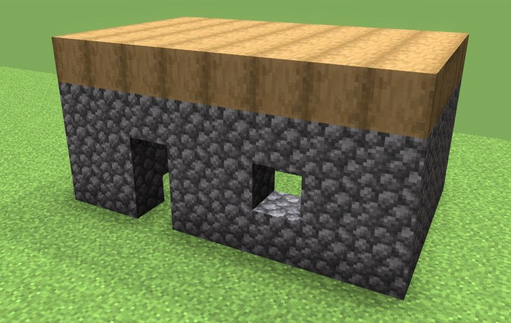
Wide door example: in the first image, the inside of this simple building is visible. In the second, the "Seal off entrances" export box is checked. The torches are then considered as blocking the entrance; since the entrance is fully sealed off, the room is filled with glass. This example is trivial, but by placing torches you can seal rooms off so that they fill up with glass, then get hollowed by the "hollow" option, described further on, thus saving on printing areas difficult or impossible to see from outside.
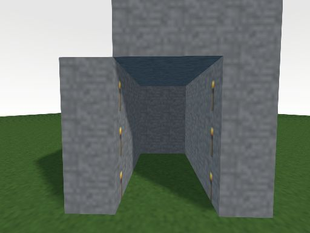 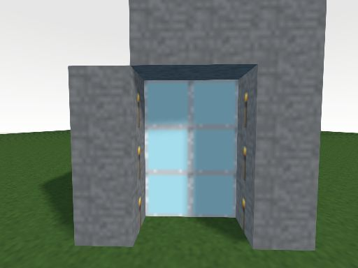
Another wide door example: Another way to seal off large doors or windows is to add snow blocks. Here a two-block-wide door will not automatically be sealed off by the "seal off entrances" option. By adding snow blocks and then also enabling the melt option (and turning off the hollow option), the building interior will be sealed off and then the snow blocks will be removed before output.
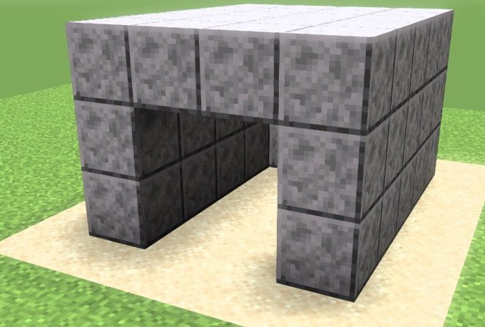 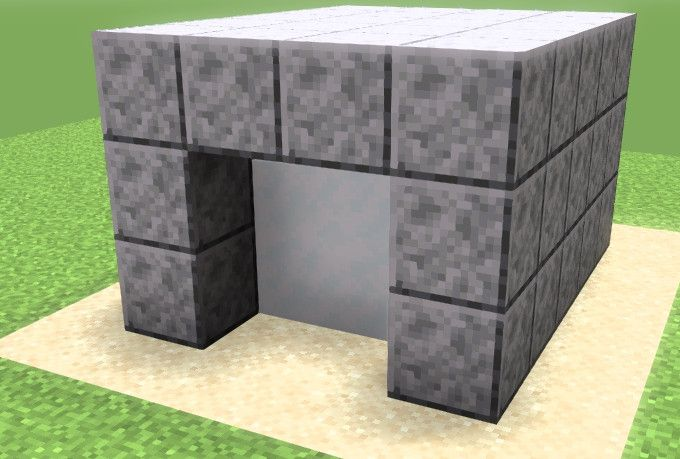 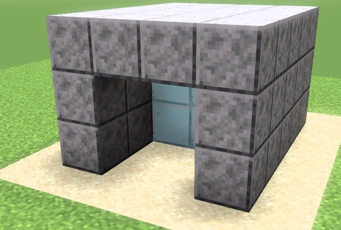
Connect parts sharing an edge: certain non-manifold edges (where two blocks are diagonal and share an edge) are eliminated by a welding process in which more blocks are added. This welding process normally occurs only when it joins pieces that otherwise would be separated and fall apart.
- Connect corner tips: if two blocks touch at just their tips and the blocks are found to be in separate parts, they are then welded together by adding two new blocks.
- Weld all shared edges: some 3D print firms and software normally allows two blocks' edges to touch, despite information to the contrary. If this behavior is unacceptable (i.e., an application rejects the model), checking this box will work to remove all shared edges.
Blocks sharing an edge are connected. Some parts of the strings touch only at corner tips, so are still not connected. Note that for these examples the "delete floating objects" option was turned off, as otherwise the disconnected string bits would have been removed.
Corner tips are connected, and now each balloon will print correctly.
Debug mode, showing edge connecting blocks as lava and tip connecting blocks as pink wool.
Delete floating objects: if objects hang in space, these are eliminated if they're small (less than 16 blocks in size) or are entirely tree logs and leaves. This step eliminates parts of trees hanging along the edge because of where the selection box is located. If you get a warning about there being more than one part in a model exported, crank the block number up to 1000 or more to get rid of larger chunks (once you know what those chunks are - see the debug display parts mode below). If you're sure you want just the one connected group in the scene, set this value to 999999 and only the largest object in the scene will be saved.
This option can help tidy up a model for rendering or Sketchfab, too, by deleting tree foliage poking into an exported volume. In these export modes, any adjacent blocks are joined up (for 3D printing, only blocks that fill the cell are joined together). This difference means that, for example, a roof supported by fence posts won't be considered floating when rendering, but will when using detailed 3D printing (as the fence supports would likely be too thin to hold the roof).
The "debug showing groups" option shows the disconnected group (the black columns are support columns created when hollowing).
Turning on deletion of floating objects, the floating foliage is deleted. Note the clump of leaves from a chopped-off tree stuck to the house is not deleted: get out the shears in Minecraft, if you want to chop it clear.
Hollow out bottom of model: models are typically resting on an uneven ground layer, and building interiors are typically filled in. Hollowing clears out blocks inside the model, making it less expensive and faster to print. The "super hollow" option is more aggressive, searching hollow areas found to see if more can be carved out.
This option, used in conjunction with seal off entrances, can make detailed models stronger. If the interior of a model is entirely filled in by the "fill air bubbles" process, it can then be hollowed out and the walls left thick. For example, say you want to print your cathedral model with 1 mm wide blocks. The printer you want to use needs walls at least 2 mm thick. Instead of manually adding blocks to the interior of your entire model, by using the seal off the entrances option you fill the interiors in with solid blocks. When you hollow, you set the hollow width to 2 mm, or even 3 mm, and now the exterior walls will be made a few blocks thick, automatically.
Technical note: superhollow can sometimes create little separate objects at the bottom layer unconnected to the rest of the model, pieces of tunnel not cleaned out. You'll need to also turn on the "fill in isolated tunnels" box to have these removed ("delete floating objects" should do this, but currently does not).
Tunnels are sealed (the glass blocks). While this briefly increases the block count, hollowing will cut it considerably.
Basic hollowing is performed; the cutaway shows how far it penetrates into the teapot. Block count is reduced from 26.8k blocks to 14.7k blocks.
Superhollowing is performed, reducing the count further, to 8.3k blocks. The escape hole between teapot and ground looks to be large enough to clear the sand (and indeed it was, see this photo)
{kind=link}
Melt snow blocks: The seal off entrances option automatically looks for one-block-wide entrances and windows and seals them off. If you have wider entrances, off-axis windows (such as in a dome), holes in the roof, or other features, instead of adding torches or ladders to help seal these off, you can use snow blocks to do so. The melt option then removes these snow blocks from your model just before output. See the seal off entrances option description for an example of its use.
Export lesser, detailed blocks: when 3D printing, this option is off by default; for rendering it is on. When not checked, smaller objects, such as signs, fences, and torches are removed - only nearly-block-sized or important blocks are exported. This option is on by default when exporting full color textures for rendering; turn it off to remove the "billboard" objects and other smaller geometry objects. Remember you can also turn off output of any block type by setting its alpha to zero in your own custom color scheme. I've given you the ability to shoot yourself in the foot for 3D printing; I leave it to you to turn off any block types you think are likely to break off. As such, if you use this option you should probably turn off the "Connect parts sharing an edge" and "Delete floating objects" options further down, as these are likely to not work well - only full blocks are tracked when using these features. When exporting lesser blocks it's better to add and delete blocks by hand and not have the program clean up the data. If you do want to check for floating objects, I recommend exporting full blocks first (which will perform the check properly if the option is checked), then export lesser blocks with the option off.
Checking this box for 3D printing is risky, but will allow you to export slabs, stairs, and many other smaller elements as true geometry. The table gives specifics about what is printable, under the "Lesser" column. The model produced with this option on can have some geometry that's tough for some 3D print slicers to process. The risk is that the service bureau or printer software cannot properly interpret your files. Commercial programs such as netfabb are likely needed to preprocess your model. If you know of a good cheap/free mesh cleanup tool, let me know.
You may still have problems with features being too thin to reliably print. If you truly want to print some geometry that Mineways won't output for 3D printing, e.g., you want to make a large banner model, you can always export via rendering and perform cleanup yourself (such as removing billboards).
If you use another service bureau such as Sculpteo, look over your uploaded model for any missing block or texturing errors (well, as of 2021, Sculpteo does not support textured, colored output). Secret Sculpteo trick: you can see a large view of your model by using the URL https://www.sculpteo.com/en/embed/design/<xxx>, where you put the 8 character identifier for your model in place of <xxx>. For example, if your URL is https://www.sculpteo.com/en/print/sand-castle-1/hfM9BZw2?uuid=4OmRAVteIsyb9BYa10KM3b the 8 characters in the URL are "hfM9BZw2", so use https://www.sculpteo.com/en/embed/design/hfM9BZw2 to see it large. (Sadly, I can't figure out how to make these URLs public for anyone to view; Sculpteo seems to have locked that down.)
Sculpteo does the texture merge properly, but is missing a stair step on the right part of the roof.
Sculpteo's solidity check feature showing how fences along the top of this palace model are likely to break off.
Currently some thin objects, such as sign posts and single fence posts, are exported. These are likely to break off, especially at small block sizes. You might want to "shore up" thin features by placing blocks below them (such as for roofs made of stair steps) and next to them (such as for doors). Alternately, turn off export of signs altogether by setting the alpha for the sign block types to 0 in a color scheme.
Below are three prints done with fences, stair and slab roofs, and other small blocks. On the left, 1 mm/block, the fences and thin pillars have sheared right off. 2 mm/block, in the middle, survived intact for the most part - not surprisingly, a free-standing door at the rear broke off. With 3 mm/block, on the right, a part of the fence broke off when the superglue was applied. More photos can be found here. (Image courtesy of Alex Boden)
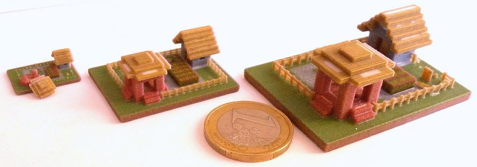
Fatten lesser blocks: If you do decide to export using the "lesser" option, by default some of the more delicate blocks are made fatter so that they are less likely to break off during printing. No guarantees! The blocks fattened are: fences, fence gates, doors, free-standing sign posts (which I suspect will still snap off), pressure plates (since they sometimes get used for table tops), bells, and a number of others - see the table.
Debugging Visualization
There are also two debug print options available. The "Debug: show floating parts" option does just that: the largest object is made semitransparent and smaller groups each given a unique color, so that you can see what pieces of the model are not connected. See images here. Either remove these smaller parts by kicking up the "delete floating objects" limit, or go into Minecraft itself and add blocks to attach them together. That said, separate parts are fine in a file if you know what you are doing: you could be making a chain of separate links, or could have a number of individual pieces (such as letters) you want to create in a single print run.The "show weld blocks" option shows what blocks are added by the various "connect parts" options. See images here. If you don't like where the welds are put, you can go into your Minecraft world and edit the model yourself. Key tip: you can run Mineways and play Minecraft at the same time. So, you can edit your world in Minecraft, then reload the world into Mineways by pressing the "r" key. The selected area won't be cleared when you do so, so you can edit, reload, export, and view the model (in a separate viewer); lather, rinse, repeat. This is an efficient way to improve and view any model you're working on.
ChannelMixer and TileMaker
You can make your own sets of textures to use when exporting models with Mineways. This process is fairly straightforward, but is a more advanced topic. See the Textures page for how textures work in Mineways and how to use these tools, or watch the video.Rendering Tips
There are lots of cool add-on shaders for Minecraft. But, for truly stunning stills and animations you'll want a standalone package. This section covers the basics on importing Mineways files into various renderers: Blender, Cinema 4D, Omniverse USD Composer, 3DS MAX, Maya, and Houdini. If you want better geometry for some blocks, you might also consider using jmc2obj. Honestly, they have a lot of features Mineways doesn't, so you should give it a try. Also consider MiEx, especially if you are using USD.
While I have your ear (eye?), you should also check out the shader mods BSL, Kappa, OptiFine, and Sonic Ether's Unbelievable Shaders (SEUS forum) for in-game play or viewing. They have lots of cool rendering options. What makes these systems shine (literally) is using a high-quality texture pack that support specular textures, bump maps, etc. Some nice texture packs: JG-RTX, UMSOEA and Sildur's Shaders, among many others (BSL search).
Also worth a shout-out, the Minecraft RTX beta. If you have an RTX card, this system accelerates ray tracing effects on the Bedrock Edition (sorry, no Java Edition version). However, conversion of a Java Edition world is fairly straightforward; they give a long guide, but really, just follow the MCC Tool Chest Conversion steps - it's all I needed (note that MCC Tool Chest has, sadly, disappeared, but can be found archived here). If you're really feeling frisky, you can design a texture pack.
Previewing:
To quickly check results before printing or importing into a rendering program, consider using an interactive previewer. The G3D viewer is great for OBJ files, with shadows and screenshot capture built in. Open 3D Model Viewer mostly works, though has transparency issues when you export individual textures. Microsoft's 3D Viewer also can work, though it does not treat semitransparent surfaces well. MeshLab is a usable previewer for models in any format Mineways produces, though handles transparency and cutouts incorrectly.
Below are steps for using various popular rendering software packages. There are always more; for example, this article talks in depth about using RenderMan for rendering.
Blender

These instructions assume Blender version 3.5 or newer. I've made a 13-minute video of different ways to import into Blender 3.5 and perform rendering, which covers most of the first nine steps below.
Alternative Minecraft exporters for Blender include jmc2obj, a general-purpose and full-featured exporter, MiEx, if you are using USD. There are tons of other Blender+Minecraft things out there. For example, the Replay Mod lets you create an animation path in Minecraft and export the camera moves. You can then import the .GLB animation file into Blender.
To move your Minecraft world's data into Blender, the first step is always the same, since it involves only Mineways:
1) Open your World in Mineways, then, select the area for exporting (hold right mouse button and drag the rectangle).
You can now go two routes: OBJ or USD file export. If you are using the standard or other low-resolution textures, without any normal maps (which the Blender importer does not seem to recognize), OBJ is perhaps enough. If you do use normal maps or want to avoid using MCprep, USD import may serve you better. It doesn't hurt to try both.
2a) OBJ export: Choose "File | Export Model for Rendering" and save the file as a Wavefront Object (.obj) to a folder of your choice. Let's call it myobject.obj or whatever you like. You can simply click "OK" in the dialog with the export settings.
If you like, watch this one-minute video for OBJ export and import. Things have changed a bit since that video was made. You don't need to select "Split by block type" at 0:44, as this is now the default.
If you are exporting individual blocks for animation, check the "Material per family" box. If you want to be able to select block types in the viewport for hand-editing, check the option "Make group objects". If you don't choose this groups objects option now, that's fine - step #11 below shows you how to do this in Blender.
2b) USD export: Choose "File | Export Model for Rendering", for "Save as type" at the bottom choose "Universal Scene Description (*.usda)", and save to a folder of your choice. You can simply click "OK" in the dialog with the export settings.
3) Open Blender 3.5 (or newer) and click anywhere on the screen to make the splash screen disappear. Then press the "Delete" key to remove the default cube model. If you're importing a USD file, you will also want to select the default Light in list in the upper right and delete it, too.
4) Import the model: select "File | Import | Wavefront (.obj)" or "File | Import | Universal Scene Description (.usd*)" from the menu (Note there are two OBJ importers - pick the one closer to the top, not the one at the bottom that says "legacy" after it). Put the directory name of your Mineways export file (the .obj or .usda file) on the first line and hit "Enter". You can then double-click the .obj/.usda file name itself in the listing below. Alternately, you can type the file name itself on the line below the directory name and then click the blue "Import OBJ/USD" button to the lower right.
On the right side of the import dialog you will see import options. I never touch these, but they're worth knowing about, e.g., you might want to scale the model size down on import.
Once imported, you can hit the "Home" key to reposition the camera to be well outside the model.
5) Display in Look Dev mode: in the upper right of the viewport are a series of icons. Rightmost are four sphere icons. Click on the rightmost:
You should now see a textured view of your model.
6) Adjust camera: Use the mouse wheel to dolly the camera in or out. As noted before, the "Home" key can also dolly the camera out to view the whole scene. Middle mouse down and drag lets you rotate the camera. Middle mouse drag with the Shift key lets you pan the camera. Middle mouse with Control is another way to dolly, but why do that? Middle mouse drag with Alt changes to different orthogonal views in a funky way - just use middle mouse drag to recover.
For USD, a camera comes with the file. Nothing great, but it can be used, and sometimes will work when the model disappears due to Blender weirdness. You can pick it in the upper right, "Camera.001", then in the second row of menus in the upper left pick View -> Cameras -> Set Active Object as Camera.
Another way to move around the scene is to turn on Walk or Fly navigation. Hit F3 and type "walk" and pick the "View -> Navigation -> Walk" line. Now the WASD keys will work like they do in games, Q and E go down and up, spacebar will take you to where you're pointing, Shift will increase the speed of any letter key. Fly is similar, but you're setting the velocity. If you click somewhere you leave this mode. Just press F3 and Enter to return to it.
7) Lighting: For OBJ, change the default light to be more useful. Click on the Sun setting, then I'd also crank the Strength down to 8.0 or so, as shown:
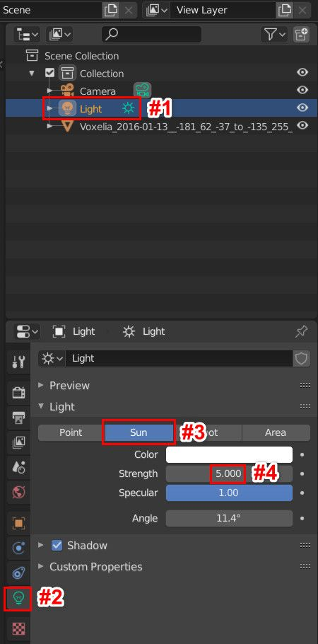
For USD, the file comes with a sun light (and a dome light, which Blender currently ignores). This light may import with a strength of 50000. Or 2.284. As with the OBJ instructions above, change the strength to around 8.0 or whatever you like.To adjust the direction of any light, select it, press Shift-T, and move your mouse around in the viewport. Hey, the sun's moving. When you left click with the mouse, you lock down the direction of the sun. It's a bit non-intuitive, and you may need to rotate the view, Shift-T, rotate again, etc. to get the angle you want. Try F12 again to render the scene.
Frankly, an easier way to control the light's direction is to choose the orange box icon ("Object Properties") a few up from the lightbulb icon in the vertical strip of icons. Then play with the Rotation angles: if you set these to 0,0,0 for XYZ you'll have a light directly overhead. Go from there (and there's probably some good "Mode" to set the light to, but I haven't figured one out yet...).
8) Rendering: You are now ready to do a first render of your model. Once you like the view, click Control-Alt-"Numpad 0" (the zero in the lower right of your keyboard) to set the render camera to your view (or at least the center of it). If you move your view of the world, you can go back to this saved view by hitting "Numpad 0" again, or Control-Alt-"Numpad 0" to set the render camera again.
However, there's a better way. In the upper right corner of the viewport there's an "Options v" menu. Just below that there's a little "<" symbol. Click that and you'll see more menus appear: Item, Tool, View (and MCprep, if you add this). Alternately, click the "N" key, which toggles the display of these. Now click on View, open up the dialog that appears, and click the box that says "Camera to View" under View Lock. This makes it so that what you see in the rectangle is what you get. You might want to first use the mouse wheel to adjust this rendered view's rectangle, then turn this on.
But wait, there's more. If you find some or none of your model appears when you dolly out, you need to adjust the clip range. In this same View dialog change the "End" value from 1000 m to something larger, e.g.:
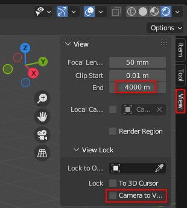
If you do change this, I've found it's good to then change Clip Start to 1 m or higher, else you'll get strange z-fighting artifacts around the edges of blocks.
Now press "F12" or select "Render | Render Image" from the menu and have a look.
The distant part of the model might not appear, as the Clip End distance of the camera might still be too small, which somehow (if you didn't click "Camera to View" is a separate clip range. Adjust this distance by selecting the camera object in the Scene Collection in the upper right of the screen, select the camera icon, then click on the "End" value box and type in a new value such as 1000 m or simply drag your mouse:
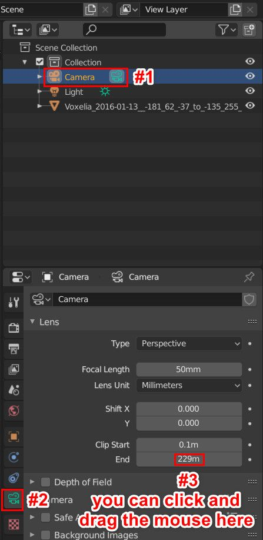
Another alternative is, when exporting from Mineways, make the model smaller. In the upper right of Mineways' export dialog you'll see "Make each block 1000 mm high." If you change "1000" to "10" or similar, the exported blocks will be smaller. You can also change the scale on import to Blender, which is even simpler. Making the model smaller will also often make shadows work again with the Eevee renderer; these disappear if the model is large, for some reason.
To get back to rendering, the render will look pretty much like what you already see on the screen. To use a higher-quality, but slower, renderer, do this: Along the top of the program click on the gray "Rendering" (not white "Render") menu item, towards the middle. In the upper right, under "Scene," you'll see "Render Engine". Pick "Cycles" instead of "Eevee." Now on the top edge click on "Layout", which is what was selected originally. Things will look nicer, but interaction will be laggy. If you want faster interaction, in the upper right corner of the viewport select the second-from-the-right sphere icon, the material preview mode. What F12 does is uses the renderer you select. If you chose Cycles, it will progressively improve the result, by default running 4096 passes to give a nice final image. You can see the Sample counter along the upper edge of the image for progress. Save your image using the Image menu along the top. Close this window when you're done.
9) Material Conversion: This step will improve OBJ files, and can make USD textures look "chunky". Low resolution textures are fuzzy, not blocky like in Minecraft. Transparent objects such as water and glass may not look quite right. Cutout objects have poor blending modes assigned, and anything with transparency will not cast shadows properly. The fastest way (by far) to fix these problems in OBJ files is to use the Prep Materials button in the free MCprep addon. Here's my short video on how to install and use it. They also have a MCprep Blender Discord server with people that are quick to respond to Minecraft + Blender questions.
As I say, USD imports can be made to look chunky. Unfortunately, the MCprep add-on also seems to remove normal maps. So, read on.
Another automated method that fixes just the blockiness for OBJ or USD is to use a script. The advantage of this method over MCprep is that you are in control, making minimal changes to the materials. First paste this text into a text file (or use the one Mineways provides in scripting/blender_blocky.txt):
import bpy
for mat in bpy.data.materials:
if not mat.node_tree:
continue
for node in mat.node_tree.nodes:
if node.type == 'TEX_IMAGE':
node.interpolation = 'Closest'
Then, in Blender, just below the bottom left of the viewport click on the little clock icon ("Editor Type") - it looks a bit like a "<" - and select "Text Editor" under the Scripting header, third over. You will now see a little text icon replacing the clock. Use Text | Open to open your saved text file, then do Text | Run Script (or hit Alt-P) to run the script:
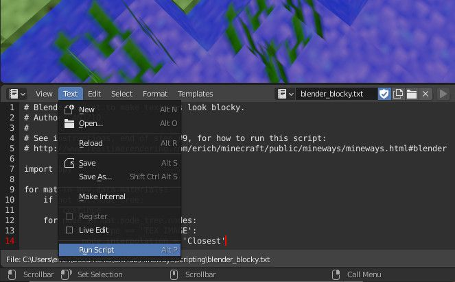
Doing so will change all materials to look blocky.If instead you want to do this conversion manually, it's a tedious process of selecting each object type in the model (and, in fact, trying it out manually on Blender 3.1.0, I could not get this process to work properly - not sure why). You still might want to do this once, just to understand the material properties better. Select a material and, under the Surface parameter window below, click the small "right arrow" icon to the left of "Base Color", about five lines down. Two more lines down it will say "Linear"; change this to "Closest". Scroll down considerably further to "Alpha" and click on the small right arrow again and also set to "Closest". Here's the Base Color sequence:
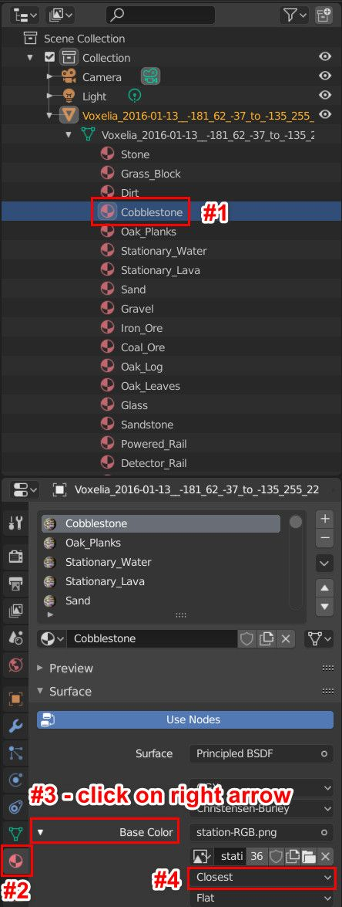
All this said, setting the sampling to "Closest" can give noisy renders, as far away objects may twinkle or form Moiré patterns. You may want to consider using the high-resolution "1024" or "8192" textures when exporting from Mineways, as these give a blocky appearance and also allow mipmapping to be used for filtering when blocks are distant.
With OBJ you might also notice that objects underwater kind of pop out, like they're not in water. To fix this, in the properties page below, in Settings at the very bottom, change the water's Blend Mode and Shadow Mode both to Alpha Hashed. Here's an example of doing this for glass, which can have the same problem:

import bpy
for mat in bpy.data.materials:
"""If material has nodetree"""
if mat.node_tree:
for node in mat.node_tree.nodes:
if node.type == 'BSDF_PRINCIPLED':
alphasocket = node.inputs["Alpha"]
if alphasocket.is_linked:
mat.blend_method = 'HASHED'
mat.shadow_method = 'HASHED'
These two scripts above could be combined into one text file: just paste one after the other (removing the "import bpy" line, which is needed only once).
There are plenty of other material properties you can modify, these are just a start. You can read documentation on the Blender site about texture and material modification. Have fun!
10) Render Size: You can also set several parameters of the Renderer by selecting the Camera in the Scene Collection in the upper right, then clicking on the Context.Output icon in the vertical list of icons - it's the third one down, it looks like a printer spitting out an image. In the section "Dimensions", you can set the Resolution of the image, add a border, and so on. To export Full HD, you can set the Resolution to X:1920 and Y:1080, and set 100% in the bar below these settings.
11) Optional: Split into Objects: Blender 2.92 imports a Mineways OBJ file as a single object. If you did not use the "Make groups objects" option but now want to split the object in Blender, do the following. First, switch to Edit Mode. Then hit the "p" key and with your mouse select the option "By Material." The objects will now be separated in this way. Separate objects is nice for selection and material editing, but by default "separate" objects are not so separate - if you move one, you'll see a gap where it touched other blocks. If you truly want separate blocks, for animation or other reasons, you'll need to use the "Export individual blocks" option in Mineways to get "solid" blocks you can animate.
12) Upload pictures of your creation to the Mineways Discord #showcase channel or the reddit group. (Optional, but I hope you do - I like seeing what people make.) You can also look in the website gallery or old Mineways Flickr group for some past screenshots.
I'll again note that you should probably be using MCprep to convert your OBJ materials. Here's my short video on how to install and use it. They also have a MCprep Blender Discord server for asking questions.
Omniverse USD Composer

Here is how to import a model into the free Omniverse USD Composer program. First, download the Omniverse Launcher, install and run it, then from the launcher install and launch Omniverse USD Composer.
See the tutorial video. It runs through a lot of the common operations for Omniverse USD Composer: moving the camera, modifying the lighting and materials, etc. There's a lot of documentation on Omniverse and Composer, but the video will get you started. I also give some tips and tricks in this "the whole process" video. I also show Omniverse in action here. What follows are the steps in the first video.
Step 1: Select your world and region for export in Mineways, then from the menu choose File | Export Rendering.
Step 1a: I highly recommend doing "File -> Choose Terrain File" and selecting the terrainExt_JG-RTX64.png file that comes with Mineways. This will give you more interesting and physically realistic materials for some blocks.
Step 2: Save as the file type 'USDA'. This is the Universal Scene Description ASCII file format. USD is a format developed by Pixar that is used in film studios and other applications. You can see my test scene project (updated here) for an idea of how various renderers handle this file format as of August 2022 (they're always improving).
After choosing the file name, you are faced with many export options. Most are grayed out in the upper left part of this dialog, with one important exception: "Custom material." By default this box is checked. Doing so gives the distinctive blocky look for Minecraft textures. However, if you are using higher resolution textures, 64x64 or larger, I recommend unchecking this box. You will then use Omniverse default materials, which blend smoothly between texture texels. Also, these default materials will display much more quickly; the custom materials need to be compiled when viewed in Omniverse USD Composer for the first time.
Setting the "Light scale" to 0 will turn off export of lights and camera. The "Export individual blocks" option works, though has not undergone much testing.
As far as other export options go, best of luck. USDA export is a new feature, so some modes to be unlikely to work fully. I am happy to listen to requests for improvements in any of these areas.
Note that Pixar USD files can be read in by other applications, for example the free Houdini Apprentice and Cinema 4D.
Step 3: Load the model into Omniverse USD Composer. Easiest is to copy and paste the directory where the USDA model is located into the Content directory bar, towards the lower left, here highlighted in red:
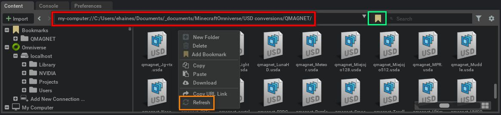
Hit "Enter" and below this line you should see the USDA file, some MDL (material) files, and a texture directory. Double-click the USDA file to load it. The scene may take a while to resolve and look good, as two things are happening: textures are loading, and material shaders are being compiled (if "Custom material" was checked - see Step 2). This compilation can take a while, but after the first time you do it for a directory it should be faster.Pro tip: if you click on the bookmark icon, highlighted in green (and already clicked) in the image above, you will add a bookmark to the list of files at the lower left. Clicking that bookmark entry takes you to this directory.
Note: one glitch in the beta is that the directory shown in Create does not refresh when new files are added to it, or deleted. If you save and don't see your file, right-click in the window to the lower right and select "Refresh" (highlighted in orange). Step 3a: Adjust the orientation of the dome (environment) light. As of August 2023 there is a bug in USD Composer (and possibly other packages) in which the Dome light comes in sideways. The fix is to select the "DomeLight" in the hierarchy list in the upper right. Then in the Transform section in the lower right, change the Rotate X value from 0 to 270.
Step 4: Move your camera around. Easiest is to right-click-and-hold in the viewport. Mouse rotates the view, WASD moves you, QE move up and down, and holding Shift during any of these key presses doubles your speed (and Control halves it). If you get lost, the F key will frame your model, i.e., pull you all the way back so you can see the whole thing. One gotcha is camera speed: you can adjust this by clicking on the gear icon in the upper left of the viewport and adjusting the first slider, Camera Speed. To go faster than 10, you can Control-Click on the slider and type a number.
Step 5: Adjust the lighting. Look in the upper right. Select the Stage tab, if not selected. You'll see the sun and a dome light. You can toggle these on and off by clicking the eye icon to the right of each. You can move the position of the sun by selecting it, then clicking and dragging in the box highlighted to rotate its angle. You can also adjust the sun and dome light's intensity in the Light dialog area below. Also, note that if you toggle the "lighting" view in Mineways (the "L" key), so that the map is shown in a nighttime mode, nighttime lighting will be exported to USDA instead.
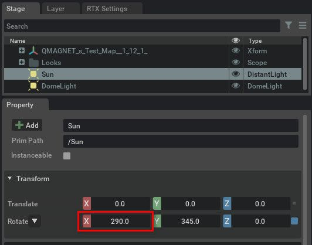
Step 6: Take a screenshot. First, you'll need to adjust one property. On the menu choose Edit | Preferences. At the bottom left see the Preferences dialog. Click on Capture Screenshot, and then on the right check "Capture only the 3D viewport":
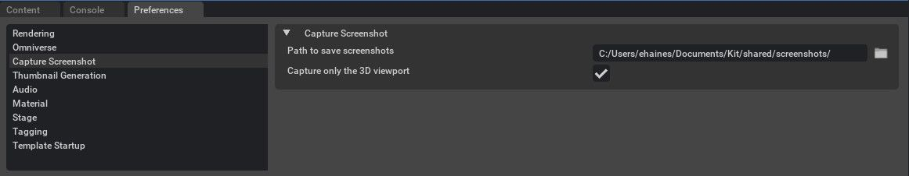
Take note of the "Path to save screenshots", just above - I copy and paste this and go to it in my file explorer. Now, each time you press F10, a screenshot is generated and put in this directory.I have noticed this feature can sometimes be a bit flakey, with F10 not consistently working after adjusting this. Restarting Create seems to help.
Step 7: Adjust the camera exposure. By default, the camera exposure is set for a daylit, outdoor scene. If you go inside, it'll likely be dark. In the menu, choose Rendering | Render Settings, if not already checked. In the upper right should appear "RTX Settings". By default, Mineways uses the Path tracer, so select "Path-Traced" for the Renderer, then "Post Processing", below that to the right. Open the Tone Mapping menu. You can then fiddle with the Film ISO, Camera Shutter, and f-Number/f-Stop to adjust the exposure. If you're feeling bold, you can also try the Auto Exposure feature in the menu below Tone Mapping.
Step 8: Edit a material. Click on an object in the scene, or in the content hierarchy in the Stage list in the upper right (pro tip: you can type. Below a picture of a sphere should appear. Click the sphere and you will see below a long list of material settings. Have at it! Note that you can also simply replace textures in the "textures" directory created by Mineways and then read the scene in again.
Bonus feature: I've included a water_normal.png normals map (from the open source MDL material set) in the Mineways distribution. Resource pack authors basically never include a normal map for water, because the renderer usually generates this. You can include this in your "block-and-chest" directory when making a terrain file set using TileMaker or assign it manually in Create or other applications.
Step 9: Save your work. You can simple choose "File | Save", but for faster loading in the future, you could do "File | Save As...", check that "USD" (no "A") is selected in the lower right of the save dialog, and click "Save". The binary USD format is about 30% more compact and faster to load.
For more about physical materials and how to add them into Mineways, see the texture tutorial page.
By default the RTX Path-Traced renderer is used, as shown in the upper left corner of the Omniverse USD Composer viewport. Changing this to "RTX Real-Time" will give faster, lower quality renders. If you want even faster interactivity - useful for large scenes - click on the Render Settings tab in the upper right, select "Real-Time" for the Renderer if not already selected, choose the "Ray Tracing" option just below, then under Translucency uncheck the box "Enable Fractional Cutout Opacity." Having this box checked can be up to 3x slower than unchecked.
This is as far as I'm going, as explaining materials, animation, and many other features is definitely beyond the scope. But, notice that last sentence has links to documentation for these topics. Some people know way more than I do about Omniverse.
Since you got this far, I'll note one option you can choose at Mineways export: the "Custom material" checkbox on the export dialog. By default it is checked. This exports a custom Minecraft.mdl material that gives textures the classic blocky look. However, if you are using a high resolution texture you likely won't care about this look. Unchecking the box means to use the default materials, no MDL files written out. A minor thing, but you may prefer it.
Here's JG RTX in action (and more resource pack previews - these are not included in Mineways):
Cinema 4D

These instructions explain how to import a model and set the textures are mostly for Cinema 4D R25 or newer; the instructions are similar for older versions, though USD support is unlikely. Really, I should redo this section, but I hope you'll be able to figure things out. Most steps are mostly from this excellent (though now-dated) video from this forum post, which includes a number of other useful Cinema 4D animation tutorials and resource links. Here's one more useful post.
That said, you may instead want to use jmc2obj or MiEx. I won't be insulted - use what works best for you!
Step 1: In Mineways, select your world and region for export in Mineways, then from the menu choose File | Export Rendering.
Step 2: You have two choices here, USD (Pixar's Universal Scene Description) or OBJ export. USD is particularly useful for physically based rendering resource packs, such as JG-RTX that comes with Mineways. Beyond color and transparency, these packs include normal maps, specular textures, and more. Alternately, save as the file type 'OBJ'. Use Absolute OBJ, not Relative, as older versions of Cinema 4D do not read relative OBJs well.
Step 3: For USD export, make sure to set "Light scale" to 1, else the sun will be too bright (you can always fix this in C4D itself by turning the sun from 3000% to 100%). Otherwise, adjust the export options as you wish. By default, blocks will come in at a size of 1/10th meter each. You can adjust this by changing "Make each block 100 mm high"; for example, 1000 mm is 1 meter. You may also wish to use the "Export individual textures" option, as this allows mipmapping and similar filtering in Cinema 4D to work better.
Step 4: Once the model is exported, open Cinema4D and drag the .usda or .obj file generated into the main window. For OBJ, make sure the "Presets" at the top of the OBJ Import dialog is set to Default. (If you don't, your grass blocks will import upside-down.) Hit "OK".
Here is what the OBJ defaults are, just in case:
To move around the scene, hold down Alt and use the three mouse buttons and scroll wheel. For USD you may wish to rotate and turn down the brightness of the DomeLight. First, choose it in the upper-right Objects dialog's list (opening the world's list first). Pick "Coordinates" and then change "R.P" to -90. Then, pick "Tag" below and then under "Color" set "Brightness" to 50% or as desired.
Step 5: At this point you can render by clicking Ctrl-R. It won't be the most exciting render, as there are no lights. Try "Create -> Light -> Light" and move the light up a bit to illuminate your scene. Select the light and in the material editor in the lower right, select "Shadow" and then, a few lines down, change "Shadow" from "None" to "Raytraced (Hard)." Now Ctrl-R will give shadows to your scene.
Step 6: Select all the materials in the material manager, the row of spheres at the lower left (or alongside the right edge of the viewport). Do this by clicking one sphere and then hitting Control-A. All spheres should now be selected. If the material manager is not visible, open it with Window -> Material Manager, or the shortcut Shift+F2.
Step 7: If you want to make textures look blocky, like they do in Minecraft, do the following. In R25 or newer, you select the material, then pick "Tag", then "Material", then "Color" in that area. For older versions, first click on the "Color" box next to the "Basic" box at the top of the material editor, then in this area you will see a section below labeled "Color." In this section you will see "Color," "Brightness," "Texture." Just below "Texture" and to the right, "Sampling," which will say "MIP" or "<<Multi." In the menu list for this option choose "None." When you are done selecting, it may still say "<<Multi", but don't worry, you have changed it. See the figure below for how things looked in R22.
That said, setting the sampling to "None" can give noisy renders. You may want to consider using the high-resolution "1024" or "8192" textures when exporting from Mineways, as these give a blocky appearance and also allow mipmapping to be used for filtering when blocks are distant.
That's about it! I'll mention that you can also import Mineways' VRML files into C4D. This will work, but all blocks will share the same material, limiting what you can do to them.
Houdini

Houdini Apprentice can be downloaded for free for non-commercial use. Houdini Apprentice pays attention to the UsdPreview material Mineways produces. Their support for USDA continues to improve, so get the newest version when you can. One nice thing about Houdini is that it can read USDA files from Mineways, allowing more elaborate material descriptions, such as using normal maps. Make sure to have the newest version (at least version 19), as their USD import has improved enormously recently.
I made a short tutorial video for how to import Mineways USDA models with physically-based rendering textures attached to them. It's for an older version of Houdini, but should get you most of the way there. Here's a run through for Houdini 19.5.303: select Build -> Solaris, right-click in the lower right "/stage" dialog, type "file," and pick "Sublayer" in the USD dialog that pops up. Then click in the dialog to place this element. Above this dialog, in the upper-right of the application, is now "Sublayer file1" - scroll down to find "Sublayer File" and in "File" give the USDA file you want to import. Once imported, scroll out with Alt and mouse-wheel down. Turn off the sun and dome light in the lower left dialog, "Scene Graph Tree." Add your own lights from the icons in the upper left of the app. Hold down "Alt" and use the mouse for camera moves. In the upper right of the viewport select the Karma renderer from "persp" to use the path tracer.
One thing I did forget to mention in the video narration: at time 1:14, where I add a File node, what I did was right-click in that lower-right area and typed "file" to get that node, then clicked in the area to make the node appear.
3DS MAX

Note: 3DS MAX is free for students and teachers.
These instructions are for 3DS MAX 2012. You might also try jmc2obj instead, as it does a better job producing some geometry. The steps here should also work for cleaning up jmc2obj OBJ models.
For newbies (like me): in a Viewport, middle-mouse button changes the view: mouse-wheel to zoom, button to pan, Alt key down to rotate, Control key down to fast-pan. Shift+Q to render. Steps are as follows:
Step 1: Select your world and region for export in Mineways, then from the menu choose File | Export Rendering.
Step 2: Save as the file type 'OBJ'. You likely want to keep the "Custom material" option on, as this gives a slightly different water color by changing the diffuse color to white.
Step 3: Adjust the export options as you wish. Nothing is required here; by default, blocks will come in at a size of 1/10th meter each. You can adjust this by changing "Make each block 100 mm high"; for example, 1000 mm is 1 meter, MAX's unit size.
Step 4: Use the upper left MAX symbol menu and select Import. Find the .obj file and select it. In the OBJ Import Options, under Normals select Faceted to get Minecraft's blocky look. Alternately, if you want to smooth water surfaces a bit, select "Auto" and leave the setting at 30 degrees. Click "Import" at the bottom.
Step 5: Go to Render Setup in the Rendering menu (or just hit "F10"). Select the Renderer tab and uncheck the "Filter Maps" checkbox under Antialiasing. This makes cutout objects look correct, as well as making the Minecraft textures have their distinctive blocky appearance.
Step 6 (optional): At this point rendering should work fine. In interactive preview mode you will see some transparency problems in the Viewport. To fix these, bring up the material editor by pressing "M" and expand the view. Scroll down in the Material/Map Browser on the left and find "+ Scene Materials". Click on the "+" to show the scene's materials. Double-click on whatever material looks bad, e.g., Stationary_Water, Glass, Leaves, Torch, Tall_Grass, Sugar_Cane, Rose, Dandelion, or other cutout object. Now click on the "checkerboard-with-light" icon along the top, which does "Show Shaded Material in Viewport". This material should now look better. Do this for each material that looks bad. Press "M" again when finished, to dismiss the material browser. If someone knows a faster way to change all materials, let me know. Note that these fixes do not affect the final render itself.
Maya

Note: Maya is free for students and teachers.
First, there is now a material converter for RenderMan. Notes from the author: "I've created a simple Python script for Maya to convert all the imported materials from the standard 'Phong' shader to Renderman's 'PxrSurface' shaders. It'll also re-use the same file reference node and clean up the duplicates and the old shaders. Bonus is that it will also turn off filtering on all the textures."
If you want to rendering within Maya, I will not give a comprehensive tutorial here; it's up to you to know the basics. The main tasks facing you when importing from Mineways is adjusting the Transparency material attribute, which Maya does not set up at all on import. The steps:
- Import an OBJ from Mineways. Turn on texturing and lighting by pressing "7".
- Select each transparent or cutout object in turn, right-click and drag to choose the "Material Attributes" menu.
- On the right, under Common Material Attributes, click the small checkered box to the far right of the Transparency attribute. This will let you assign a texture to the alpha channel.
- In the "Create Render Node" dialog that appears, choose "Maya | 2D Textures" on the left, then click "File" on the right. You will now see a "File Attributes" parameter dialog.
- Click on the file folder icon to the far right of "Image Name" and select the grayscale image for the alpha channel, e.g., MyModel-Alpha.png. While you're here, you can change the "Filter Type" above from Quadratic to Off; this makes the alpha channel have the blocky Minecraft look.
- The cutout object will typically disappear; you need to reverse the sense of the channel. There's probably some easier way, but scrolling down to the "Color Balance" section and setting Alpha Gain to -1 and Alpha Offset to 1 works.
- To make the colored pixels blocky, again right-click on the model and select "Material Attributes...", then click the small box with an arrow to the far right of the "Color" attribute, the first thing listed under "Common Material Attributes." Change the "Filter Type" from Quadratic to Off.
For instructions for older versions of Maya, check out this video from this playlist, it shows how to set transparency and texture sampling. That said, you may want to use jmc2obj, which even comes with a MEL script to perform cleanup during import (that said, I don't know if this script still works).
A problem with jmc2obj is that each material must be adjusted by hand. One option in Mineways that can speed import conversion is to uncheck the "Material per family" checkbox in the OBJ file export options. Doing so means you have to fix up only one material, though at the expense of not having a separate material per block family (that said, you can always add new materials later). That said, this option tends to mess up Maya's display, as every object will be considered semitransparent and all will be sorted from back to front by depth in the interactive viewport, causing objects to flicker in front of each other. The scene will render just fine, however.
Publish to Sketchfab

Sketchfab is a free service that lets you upload your models and share them with others; try an example here or look at the end of these instructions. Mineways exports to it in a straightforward fashion, there are just a few steps to get your model up and running. It's always been possible to upload models to Sketchfab, see these illustrated instructions. With the 4.16 version of Mineways you can now publish directly from Mineways to Sketchfab. Note: you can always export a rendering as usual to an OBJ file and upload the ZIP of the files output to Sketchfab. This will give a somewhat different rendering style, sharp and less shadowed.
1) Sign up for an account on Sketchfab.
2) Open your World in Mineways, then, select the area for exporting (hold right mouse button and drag the rectangle), and choose "File | Publish to Sketchfab" from the menu.
3) The Sketchfab dialog will come up. Click on the button "Get your token." This will open a web page.
One line says "API Token," as shown below. Copy the API token, a long string of letters and numbers (a black box covers mine here), and paste it into the Sketchfab dialog. Fill in the other fields as you wish, then click "Upload" at the bottom.
4) When done, a new dialog comes up saying, "Your model has been uploaded. Click OK to view it on Sketchfab." - do that!
5) On the model's web page, adjust and save the view. You can orbit, pan, and zoom (mouse wheel). In the lower right corner is an eye icon, where you can switch to a "First Person" mode - I find it a bit zippy by default, so use the mouse wheel to dial down the speed. Also, if you double-click with the middle-mouse button on your object, you set the pivot point that the camera orbits around. Pick a nice view and then click "SAVE VIEW" in the upper left-hand corner.
6) In the lower right of the window click "SETTINGS" and choose "3D settings". I recommend clicking on the light-bulb icon in the upper left, then turn on the lights (just below); this will give shadows. There are lots of options here - explore and have fun! You can change the surrounding environment, make various materials look different, and other options. Annotations are nice for setting up views and touring your model.
7) In the upper right click "SAVE SETTINGS".. Then click "EXIT" and you're done.
If for some reason you can't get the "Publish to Sketchfab" feature to work for you, or you want to use anything but the default export options, there's another way to upload to Sketchfab that's only a little more work. Follow these instructions or go through the step-by-step below.1) Open your World in Mineways, then, select the area for exporting (hold right mouse button and drag the rectangle), and choose "File | Export Model for Rendering" from the menu.
2) "File | Export Model for Rendering" and save the file as a Wavefront Object (.obj) or USD (.usda) to a folder of your choice. Call it myobject.usda or whatever you like. For any file type, in the dialog with the export settings click on the option in the upper left that says "Create a ZIP file containing all export model files". For OBJ output (honestly, USD is generally wiser), you'll want to also check the box in the lower left for "Double all billboard faces" (more on this below). You also need to decide whether to "Export all textures to three large, mosaic textures" or "Export individual textures". If the model has only a few block types, I'd select individual textures. The trick here is that Sketchfab has a limit of uploading 100 textures total. The "mosaic textures" option gets around this, but if you're using a custom texture pack like JG-RTX, these mosaic textures can be huge, and so can be slow to download when viewing the model. Click "OK".
3) Sign up for an account on Sketchfab if you haven't already, then upload the zip file you created by clicking on the "UPLOAD" button in the upper right. A dialog pops up; click on "CHOOSE FILE" and upload the .obj.zip file you created. Click "CONTINUE".
4) Fill out the form as you wish. It's nice to add "minecraft" and "mineways" tags, so others can find your model. It's also nice to "Allow download", if you like.
At this point the steps are much the same as above, starting at step #5. The main difference is that your uploaded model is not published by default; for the last step you'll want to click "SAVE AND PUBLISH," then "EXIT."
One other thing you may wish to do is material cleanup. There are two things to possibly correct: normal flip and single- vs. double-sided rendering. If you are using a physically based rendering texture pack (like JG-RTX), you currently need to flip the Y of the normal map in Sketchfab's material editor. To do so, hit "Edit 3D Settings" on the Sketchfab page for your model, then select the Sketchfab Materials tab (the third icon over at the top). You will see a material listed just under these icons. For each material, see if there is a "Normal/bump map" for it (click on that line to open it) and check the "Flip green (-Y)" box.
I also mentioned that, for OBJ export, in Mineways for OBJ export you want to check the box "Double all billboard faces". This is simplest, you then don't have to make any edits in Sketchfab. However, checking this box doubles the number of polygons generated for tall grass, flowers, etc. To avoid this, you could export and not check the box. However, you then need to edit the model's materials. Do this similarly to editing normals, as just explained, but go to the "Faces Rendering" option at the bottom and set each material to be "Double sided".
An irregularity: if you download your uploaded model from Sketchfab, it may not display correctly. The short version is that you probably have to comment out the "map_d" field in the .mtl file for the model. Some viewers incorrectly grab the red channel instead of the alpha channel from the four-channel map that Sketchfab uses for compactness.
Physically based rendering support: Sketchfab does recognize addition material types, see their page for details. Note that when you use individual textures and "custom material" for OBJ export, you get these extra files, if available (or derived, such as the emission textures). However, the naming doesn't quite match for normal and emission textures currently; it does match for specular ("_s") and metalness ("_m").
Here's an example of Sketchfab in action, a model I uploaded. Click on the window and you can interact with it. More models here and here.
Sentinel Castle by erich on Sketchfab
3D Print Services
If you want to make a 3D print of a model, the easiest way is to use a 3D print service such as Sculpteo. The main differences are cost, quality, and speed of delivery. Protolabs Network also has some users with various types of printers, so may be both competitive and fast. There are other 3D print services for consumers, such as i.materialise and Ponoko, but currently these two do not offer fully-textured 3D printing, just solid color blocks. There are many services offering single-color (i.e., single material, such as plastic) prints, such as any of the above or those on this list. Finally, here's a little collection of articles on 3D printing Minecraft, from 2020.
Sculpteo

Go to the Sculpteo site and register for an account.
WARNING: Currently (as of 2021) Sculpteo no longer supports textured, colored output for objects. I'm leaving these instructions in place, though they're unlikely to do you much good.
In Mineways, you normally want to export to Wavefront OBJ when exporting to print, using the "Sculpteo" file type. Sculpteo also accepts VRML2 files, but the OBJ exporter sets some useful defaults for Sculpteo. One major advantage of Sculpteo is that they support the "Export lesser blocks" option, which allows you to export slabs, stairs, fences, doors, and other smaller objects. Please read the documentation for that option before using it. Also note that when you export, the price shown is the (now-defunct) Shapeways price; Sculpteo prices tend to be about a third higher overall.
Once you have your export file ready, on the home page click on the Upload a 3D file button in the upper right (you can also go to your account and find the "Upload a new design" link).
On the upload page choose a file - you must pick the .ZIP file for your model. Adjust the design name, description, keywords, and categories as you wish (personally, I fill these in later, when I'm sure the model is a keeper). Note you can also add French translations; I use Google Translate. Agree to the terms of use at the bottom and click "OK". Wait a bit.
You should then get a page showing your model has been uploaded. You can interact with it in the viewport using left-mouse, right-mouse, middle-mouse, and scroll wheel. Pro tip: note that rotating by going up and down near the edge of the window gives a different rotation than going up and down in the middle. This can help you adjust the "up" direction.
You now have a range of options. One service worth checking is "Thickening" in the viewport. This view shows you whether your model is printable. Red areas are likely too thin to print properly.
Scripting
By using "Import Settings" you can make Mineways do all sorts of things quickly. You can also temporarily modify blocks when exporting. It's easier to use than you might think, read about it here.Related Resources
Here are some related (free) tools that are handy, collected in one spot:- The G3D viewer is excellent for previewing 3D OBJ files for rendering (sorry, not VRML or STL), as its support for cutouts is superior to the MeshLab viewer. It also includes real-time shadows and reflection-mapped water, as well as built-in screen and movie capture (only the viewer32.exe version has video capture). Models also load faster. Downside: on weaker GPUs it can be slow, and it doesn't work when exporting individual textures. Some examples here.
- MeshLab helps you convert, simplify, and smooth meshes, among a huge number of other operations. It's not the best for displaying textures.
- Amulet lets you convert from and to Bedrock and Java worlds, and lets you edit them. Also, open source, and actively maintained. For example, you could trim away objects near your model to make a cleaner export. You can also read in model schematic files you've downloaded. To use a schematic with Mineways, import the schematic into an empty world and save the world, then use Mineways on that world.
- Use the Minecraft World Downloader to download chunks from multiplayer worlds, which you can then use with Mineways.
- WorldEdit is another mod that lets you make large edits to your world. It can load and save (old style and new) .schematic/.schem files. It also allows a huge number of modeling operations, including procedurally-generated models. It differs from Amulet in that it is a plug-in to Minecraft, while Amulet is standalone.
- Litematica is a tool for reading, examining, and writing new-style schematic (.schem) files and pasting them into your world.
- FAWE is an alternate to WorldEdit, part of the Spigot system.
- There is also a browser-based utility to convert old schematic files to new ones, if that's a help.
- VoxelSniper is another Bukkit addon for servers, providing a wide range of editing abilities.
- Mine-imator is a self-contained Minecraft video animation system. It can read in and view schematic files, among much else.
- Spritecraft converts an image to a schematic file, allowing you to easily create pixel art.
- Binvox goes the other direction, letting you turn a model file into a voxelized representation, suitable for building or export to a schematic file. I have a quick-start Binvox package for Windows: binvox, viewvox, GLUT DLL, two sample 3D models, and batch files to run the programs. Documentation here. For more info, see the forum thread and related forum thread. I used it to make the teapot, guardian, and hopper, among other models.
- Qubicle costs money, but has some nice functions. It is a set of voxel-based utilities, including an editor and a voxelizer that computes a good color for the voxel from the material.
- TinkerCAD is an online CAD program. You can now export to Minecraft from it.
- Biome Painter lets you modify the biomes of your world. If you get it, make sure to use the "Help" menu "Check for updates" feature.
- More Minecraft tools here.
Stuff to Print and Render
Want something to try Mineways on? There are a number of sites with cool downloadable models and worlds, including:- Planet Minecraft projects - all sorts of great stuff to print, sorted by popularity.
- Open Street Map has a Minecraft-related page of resources. Many people have made all sorts of maps, including one of the entire earth.
For something amazing, check this out (more here)- meta!
Other Packages
Mineways is not the first to offer a Minecraft model exporter, nor necessarily the best for export for rendering. Minepedia has a page about exporters. Here's more information on the ones I know about and related services.
- Jmc2obj is a Java-based (so multi-platform) exporter for rendering. It is actively developed, but I find I can no longer quite get the textures to attach properly to the surfaces. You do need to export textures first, typically giving you a single texture to work from, which is then applied to the model. If you get it going (let me know the secret), it has some nice features, nicer than Mineways in some ways.
- MCprep is a Blender python script that can improve model quality of Mineways and jmc2obj exports. Here's my short video on how to install and use it for that. But, it does much more than that, including letting you add mobs, swap in custom 3D meshes for objects, change character skins, etc.
- MiEx is a new exporter with a bunch of features, including mod support, focused on USD export. Definitely worth a try, as it exports some entities that Mineways ignores.
- Chunky is an amazing self-contained path-traced renderer: choose your chunks, load them, set the view and let 'er rip. Definitely try out the various options.
- In the Bedrock edition of Minecraft structure blocks can be used to export to the glTF format. Also see here.
- OptiFine, Sonic Ether's Unbelievable Shaders, and related resource packs are definitely worth checking out. Find information here.
- Mine-imator lets you directly import from Minecraft and animate. It's pretty impressive! However, it doesn't export to 3D model files, so I guess I need to keep working on Mineways.
- MagicaVoxel read Minecraft schematics and gives a nice rendering of them. It's best for large models, as it converts everything to colored blocks, no details. There is also code to convert to its .vox format.
- Blokify is a free Minecraft-style modeler for the iPad. I found placing individual blocks a bit dicey, but that's because they've built in ways to fill in lines of blocks in a single go. You can email yourself the resulting STL file (though it didn't work for me). The blocks used are geometrically textured, so 3D print out with more than just simple flat surfaces.
- Voxel is an iPad app that lets you design in voxels and send your model directly to Sculpteo for printing.
- Minecraft Schematic Store - buy and sell Minecraft schematics (note that Mineways has an Export Schematic option).
- MineToys offers 3D prints of your character. More on how MineToys works here, though that's dated, since Shapeways is now bankrupt.
Older Stuff
Mostly defunct, but FYI and because I like to keep track.- The Minecraft Animation Wiki is mostly about animations made by others, but has a few pages of direct interest to creators, such as who uses what programs for Minecraft animation.
- Printcraft is a cool idea: you go onto this server, build something with friends, then push the Print button and an STL file of your build is sent to you. No muss, no fuss. Meant for home and school 3D printers for the most part, since the STL comes without any colors.
- SourceCraft creates maps for Valve's Source engine, for games such as Team Fortress 2 and Garry's Mod, via Minecraft.
- dynmap has an option to export blocks, even custom blocks, to the OBJ format. I haven't tried it; let me know how you find it.
- Mineblend - an add-on that extracts data from a world directly into Blender. Defunct, no updates since 2015, but mentioned because I'm a completist.
- MINECRAFT.print() - the site's gone (the link is for what was stored on archive.org), but I'm lisitng them for historical reasons. These guys were first to print Minecraft models, all glory to them! You (used to) run some python scripts from a command line to take a volume and turn it into an STL file. There's a hollowing function (their Companion Cube is not solid, thank heavens). Cody pointed out this nice little color export someone did using their scripts. All that said, the python script is years out of date and won't work on Minecraft version 1.2 on (Anvil format).
- Cura, the software for the Ultimaker 3D printer, has a Minecraft import option, step-by-step instructions here. Again, ancient, but I like to keep track.
- Minecraft structure planner - written in Ruby, this is a basic exporter of STL files from schematics. It's the first program I know to export color models from Minecraft for 3D printing.
- Minecraft world exporter (old thread) - Mineways works only with worlds you have locally on your computer. If you can't download the multiplayer world you're in, use this mod to suck in whatever chunks you see.
- Eihort was an easy-to-use standalone program that lets you see and explore much more of your world at once.
- mc2obj - mentioned mostly for historical purposes, it has been superseded by jmc2obj, mentioned earlier. This utility pulls in the specified Minecraft world data and makes an OBJ file. It includes true geometry.
- mcobj - again mentioned for historical purposes, the first-known exporter. There is a Blender tutorial and a gallery of results. It has command-line and dialog versions. It didn't apply textures.
- Thingiverse - this site contains a bunch of Minecraft-related models if you are looking for things to print. I think this one is brilliant.
- Minecraft Reality sadly doesn't seem to be around any longer, but the demos of Minecraft objects inserted into the real world are cool to look at. It beat the (now-defunct) Minecraft Earth to the punch by seven years.
Minecraft Bedrock Support
Mineways works on only Minecraft Java (aka Classic) Edition worlds. You can determine whether you're using this Classic Edition or the Bedrock Edition by following these steps.This section describes how to convert a Minecraft Bedrock world to a Minecraft Java Edition one so that Mineways can read it. NOTE: No converter can convert Bedrock Marketplace worlds, see this explanation.
Minecraft for Windows 10, also known as the Bedrock Edition, uses an entirely different database format for its worlds, called LevelDB. If your level.dat files are located in a directory with the path ..."\AppData\Local\Packages\Microsoft.Minecraft"... in it, or have weird directory names like "ZAD1Xfl9AAA=", that's a Bedrock Edition save.
The options I know of are:
- Amulet, which works on Windows, Mac, and Linux. The documentation is here. Upside: converts 1.17+ worlds. Downside: a bit slow and looks like it locks up at times.
- Chunker - entirely online; upload your world from Bedrock, download it for Classic Minecraft.
- MCC ToolChest PE - a little quirky, but free. Sadly, it seems to have disappeared in June 2021; we link to the archived site where you can still download it (should work for Minecraft 1.16 and earlier).
- Universal Minecraft Tool - evidently more reliable than the MCC ToolChest, but is a subscription service.
Short Amulet instructions: Amulet converts, but need to have a world to save into. Make an empty world in Java (Classic) Minecraft, easiest is to make a superflat world. Start Amulet and make the window much larger (this is important for usability - in general, resize all windows in Amulet to be larger, so you can see all the controls). Pick "Open World". Pick "Bedrock" and select the world you want to convert. Click the "Convert" tab along the left edge. "Select Output World" and choose the empty superflat world you made at the start. Click the "Convert" tab at the bottom (a large world can take a fair bit of time to convert - patience). If you don't see the "Convert" tab, you need to resize the Amulet window to make it visible.
Longer Amulet instructions: There are any number of ways you can go wrong with Amulet, so here are detailed instructions. I use some directory paths on my machine as examples. Yours are almost assuredly going to be different. Here goes:
- Start up Java Minecraft and make an empty world, let's call it NVIDIA RTX Winter World, a free Bedrock map I'll use as an example. This is the world you’ll convert into. The empty world is best as a superflat, but it doesn’t matter much (other than avoiding wasting time), since we’re going to delete all the data from it manually.
- In Windows Explorer, go into wherever the world was created, e.g., C:\Users\ehaines\AppData\Roaming\.minecraft\saves\NVIDIA RTX Winter World. Go into the region subdirectory. Delete the four files there, r.-1.-1.mca etc. You now have an empty world you will now fill with the conversion from Bedrock. This step is not strictly necessary, but I like knowing that there aren’t any extra chunks sitting around.
- Download the Bedrock Winter World. In theory you could double-click the Winter World download and it’ll install into Bedrock Minecraft (if you have it). I did this, but it didn’t seem to work the first time I tried; I couldn’t see the world. Alternately, right-click the s.zip.mctemplate file you downloaded and open with WinRAR. Unzip the contents into a directory called something like "NVIDIA_RTX_WinterWorld" created in some temporary directory, say C:\temp or your Downloads directory. Alternately, and not required, but in theory if you have Bedrock Minecraft installed, you could unzip it into the save directory, something crazy like directory C:\Users\ehaines\AppData\Local\Packages\Microsoft.MinecraftUWP_8wekyb3d8bbwe\LocalState\games\com.mojang\minecraftWorlds (or similar - basically, search for "minecraftWorlds" on your machine to find this well-buried directory).
- After downloading Amulet, unzip it into some directory in your personal area. I tried putting it in C:\Program Files\Amulet, but it then had permission problems when run. I ended up with putting it in my C:\Users\ehaines\Documents\Amulet directory.
- Start amulet_app.exe in that directory (double-click, or start in a CMD window so you can see any problems). Make it full screen.
- In Amulet, pick Main Menu (if not there by default) and Open World.
- In the upper left, you have a choice. You want to open the world you want to convert. If you just unzipped the Bedrock world into C:\temp, use the "Open other world" button and navigate to and choose "c:\temp\NVIDIA_RTX_WinterWorld". If you instead put the world into your Bedrock saves, click the down-arrow next to Bedrock and then pick Christmas Adventure RTX.
- Now, along the left edge of Amulet, pick the Convert tab, then the Select Output World button in the middle, and pick the empty Java world you made earlier.
- Wait a bit. You should see the converted files in your Minecraft Java save directory, e.g., C:\Users\ehaines\AppData\Roaming\.minecraft\saves\NVIDIA RTX Winter World\region or wherever your Java world is. You can also look at the Amulet CMD output window for errors. I've found it's usually an all-or-nothing affair. Amulet either succeeds or fails on everything, for whatever reason.
- Once done, you can now read this world into Mineways. Start Mineways and pick the world.
MCC ToolChest PE instructions: Download it, install, and run. If you get an error about some missing DLL, you may also need to install the VS 2015 C++ Runtime. Once running, do the following in MCC ToolChest - PE:
- Select "File | Open" and choose the Bedrock world you want to convert. It should read in, and you'll see "level.dat", "players", etc. listed on the left. If you don't see the world you want to convert, you'll need to (somehow) get it to your PC and find its path via "File | Open" and "Select Folder."
- Select "Tools | Convert -> To Java." A large dialog box appears.
- For the "Minecraft Java world folder" at the top put a path where you want to create the converted world. If you leave it the default "\" you'll get a mysterious error. As an example, I use "C:\Users\erich\AppData\Roaming\.minecraft\saves\bedrock_test\" - my user name is "erich" and the world directory name I want for the converted world is "bedrock_test." By putting the path "...\AppData\Roaming\.minecraft\saves\..." I am putting the converted world in the default directory for Minecraft Java worlds, which means it will then show up in Mineways' list of worlds automatically.
- Halfway down on the left of the dialog look for "Convert into." Change this from "Empty Dimension" to "Empty World."
- Click "Convert" at the bottom of the dialog. Cross fingers.
If you did get some error, try the "Help" button, it might actually help. I found not setting "Convert into" properly or not giving a good directory path can give errors.
If you need more help, this older site might help.
Note that this tool can also convert from Java to Bedrock, if that's of interest. This video goes through most of the steps for that process. There's also this detailed guide, which filters out bad data.
There are other, lesser converters out there. Another possibility is to find some way to convert your model to the original, now old and dated, Schematic file format, which Mineways also reads.
Structure Block Export
You can also export 3D data from (only) the Bedrock Edition directly to a 3D model file format, the glTF binary format. Give yourself a structure block in Minecraft by typing the command "/give @s structure_block". Place this block near the area you want to export, then right-click it. A dialog comes up in which you can specify the size of the export (never larger than 32x32x32, even if you set it higher), the offset, and the file name to export to, along with some other options. This file can then be viewed by the built-in Paint 3D program and be converted and loaded by many other programs in the glTF ecosystem.Keyboard Shortcut Keys
The quick reference of handy shortcuts is here, with the full list here. Most operations in Mineways can be done with the mouse: left button drag and mouse wheel for viewing, middle mouse click for setting the depth to whatever is at that location, right mouse selects a region to export. If you don't have a right mouse button, hold Control down and use the left mouse button. Instead of using the height sliders at the top, using the mouse wheel with the Control key down changes the depth, with Shift down changes the max. height (this second mode can be slow, since the map is regenerated). More on mouse controls in the Selection section.Block Types Supported
There are two main modes of export: for rendering and for 3D printing. These mainly differ in that some blocks, such as flowers, are not things that can be printed as is. For 3D printing, the "Export lesser blocks" option has a major effect on what gets exported. Note that this option is on by default for rendering; turning it off will turn a number of blocks into "full blocks" instead of true geometry, for a more abstract look (but, no one ever turns it off). Finally, for the "lesser blocks" option there's a "fatten" suboption, which makes fences, fence gates, doors, free-standing sign posts, and pressure plates thicker, so they're more likely to print without snapping off.If you want to test particular blocks to see what they look like, use the "[Block Test World]" and the block IDs to select and export whatever block types in whatever mode you want. Alternately, you could find a texture test world you like, such as this one.
In Minecraft itself you can also create a Debug block world (short version: "Create New World", click "World" tab middle top, hold Alt and keep clicking on "World Type:" until "Debug Mode" comes up) - note Mineways doesn't support everything, as noted below. If you are using the debug stick or commands to set a state for a block that is not valid in a normal world, don't expect it to work. Desperate? Try jmc2obj - they do some fancy stuff, like create banner textures.
Here's what Mineways exports as of version 5.01:
Mineways does not support export of characters, creatures, sign text, paintings, or banner patterns, among other things.
All "full blocks" (stone, dirt, wood, on and on) export the same under all modes. The table below outlines the rest. "Flatten" means a billboard, such as a flower, or small object, such as a torch or lever, is flattened to be a decal on the block below, since such objects are too thin to be 3D printed.
| Block Type and ID (for 1.12 and earlier) | Render Export | Print Export | Print w/"Lesser" | Notes |
|
Saplings (#6) Tall Grass (#31) Dead Bush (#32) Flowers (#37, #38, #175) Mushrooms (#39, #40) Pumpkin and Melon Stems (#104, #105) |
|
|
|
Pumpkin and melon stems do not darken with maturity when exported from Mineways. When "Split by block type" is set, separate (identical - you may edit these) materials are output for each age of stem, 0 through 7, e.g., "Pumpkin_Stem_age_5" is nearly fully mature. |
|
Water (#8) Stationary Water (#9) Lava (#10) Stationary Lava (#11) |
|
|
|
The bottommost texture copy found in Minecraft's water_still.png and lava_still.png are used for these blocks. The water_flow.png and lava_flow.png bottommost left tiles are used only for vertical walls. For walls behind glass blocks, water_overlay.png is used. Bubble columns are identified as a subtype of Stationary Water when output with "split by block type" but have no effect on rendering otherwise. |
| Bed (#26) |
|
|
|
Only the red colored bed is supported (supporting all beds results in an excessive number of textures dedicated to beds). |
| Rails (#27, #28, #66) |
|
|
|
|
| Cobweb (#30) |
|
|
|
|
| Piston Extension (#34) |
|
|
|
Detailed piston heads not fattened for 3D printing, may break. The "short" property for pistons is ignored, the model is always exported full length. |
| Slabs (#44, #126) |
|
|
|
|
| Torches (#50, #75, #76) |
|
|
|
|
| [Soul] Fire (#51) |
|
|
|
The bottommost texture copy found in Minecraft's fire_layer_0.png is used for this block. The various direction data values are ignored; the fire is always solid. |
| Stairs (#53, #67, #108, #109, #114, #128, #134, #135, #136, #163, #164) |
|
|
|
Note that Minecraft 1.4 connects stairs differently. If you have a pre-1.4 world, use Mineways 2.22 to export it. |
| Chests (#54, #95, #146) |
|
|
|
The chest textures in terrainExt.png are created by TileMaker using assets/minecraft/textures/entity/chest normal.png and normal_double.png. |
| Redstone Wire (#55) |
|
|
|
In Mineways wire is show either off or on, baked into the texture, with no gradations. When "Split by block type" is used, the redstone wire is separated into up to 16 (identical - you may edit these) materials, "Redstone_Wire_power_15" down to "_power_0" to show how bright the wire should appear. For 1.16, the ability to turn an isolated dot into a cross is not supported in Mineways current. |
|
Wheat Seeds (#59) Sugar Cane (#83) Nether Wart (#115) Carrots (#141) Potatoes (#142) Beet Seeds (#207) |
|
|
|
The fully matured texture is used for printing, on all sides. |
| Farmland (#60) |
|
|
|
Wetness level is ignored. |
|
Sign (#63) Wall Hanging Sign Hanging Sign |
|
|
|
Signs are cobbled together from block textures, not from assets/minecraft/textures/entity/signs. No lettering will appear. |
| Doors (#64, #71) |
|
|
|
Door hinges and tops and bottoms on edges are not consistent with Minecraft. |
|
Ladder (#65) Lily Pad (#111) |
|
|
|
Orientation of lily pad is not available in basic data, so orientation is always the same. |
|
Wall Sign (#68) Pressure Plates (#70, #72) Buttons (#77, #143) Snow (#78) |
|
|
|
Wall signs are put next to wall for printing - no gap. Signs are cobbled together from block textures, not from assets/minecraft/textures/entity/signs. No lettering will appear. |
| Lever (#69) |
|
|
|
|
| Cactus (#81) |
|
|
|
|
|
Fences (#85, #113) Fence Gate (#81) Cobblestone Wall (#139) |
|
|
|
For 1.13 and newer versions, only "normal" wall types seen in game (without the debug stick) are supported, due to a limitation in the number of bits available in Mineways for data storage. |
| Portal (#90) |
|
Uses the last texture copy in the Minecraft portal.png texture. | ||
| Cake (#92) |
|
|
|
Also see candle.
|
| Redstone Repeaters (#93, #94) and Comparators (#149, #150) |
|
|
|
|
| Trapdoor (#96) |
|
|
|
|
| Iron Bars (#101) |
|
|
|
|
| Glass Pane (#102) |
|
|
|
|
| Vines (#106) |
|
|
|
Since vines cannot hang in air for printing, blocks are added. |
| Enchanting Table (#116) |
|
|
|
|
| Brewing Stand (#117) |
|
|
|
Delicate, and billboards won't print on a 3D printer. |
|
Cauldron (#118) Dragon Egg (#122) |
|
|
|
When printed, area under cauldron is solid; top bit not added to completed portal frame. |
|
End Portal (#119) End Gateway (#209) |
|
Uses the custom texture MW_END_PORTAL.png for the void | ||
| End Portal Frame (#120) |
|
|
|
|
| Cocoa Pod (#127) |
|
|
|
Stem is removed for "lesser" printing. |
| Ender Chest (#130) |
|
|
|
The ender chest textures in terrainExt.png are created by TileMaker using assets/minecraft/textures/entity/chest/ender.png. |
| Tripwire Hook (#131) |
|
|
|
Note that tripwire itself is currently not added. |
| Tripwire (#132) |
|
Hey, it's supposed to be hidden... | ||
| Beacon (#138) |
|
|
|
Faked by putting "beacon.png" texture at 11,14 in terrainExt.png. |
| Flower Pot (#140) |
|
|
|
In Minecraft flower pot flowers are dimmer than the originals. Mineways does not dim these. |
| Head (#144) |
|
|
|
Mineways reads block entity data to get the rotation and type of head, but currently does not use the head type to put something other than a pumpkin. There is an add-on for Blender that fixes this limitation. See this issue for more solutions. |
| Hopper (#154) |
|
|
|
|
| Barrier (#166) |
|
To make the barrier appear, create a color scheme and change the barrier's alpha to 255. | ||
| Standing Banners (#176) |
|
|
|
Try jmc2obj, which generates custom banner textures. |
| Wall Banners (#177) |
|
|
|
Try jmc2obj, which generates custom banner textures. |
| End Rod (#198) |
|
|
|
|
| Chorus Plant (#198) |
|
|
|
In the game itself the shape used varies based on location, in some unknown way. |
| Grass Path (#208) |
|
|
|
Renamed to "Dirt Path" in MC 1.17, so Mineways 9.00 and newer versions use this name. |
| Structure Void (#217) |
|
To make the tiny structure void block appear, create a color scheme and change the alpha to 255, and "Show all objects" (F7) to see it on the map. Structure void uses red wool for its tiny output block. | ||
| Observer (#218) |
|
The lit observer texture is found in terrainExt.png, but is not tested for and displayed. | ||
| Shulker Boxes (#219-234) |
|
Shulker box sides and bottoms are created by using the color of the upper left pixel (2,2) of the top of the shulker box compared to the white shulker box top, multiplied by MW_SHULKER_SIDE and MW_SHULKER_BOTTOM. | ||
| Coral, Coral Fan, Coral Wall Fan |
|
|
|
Flattened texture always applied to ground, even if wall fan. |
| Sea Pickle |
|
|
|
Textures not applied exactly right. "Split by block type" will give separate emission levels based on number of pickles. |
| Turtle Egg |
|
|
|
1.14-style eggs; 1.13 mapped a 4x4 texture to a 3x3-size egg. Textures not applied exactly right. |
| Bamboo |
|
|
|
Using the bamboo mosaic texture when 3D printing is a little odd, but better than nothing. |
| Stonecutter |
|
|
|
|
| Lectern |
|
|
|
|
| Lantern |
|
|
|
|
| [Soul] Campfire |
|
|
|
"Split by block type" will give separate emission levels for when the campfire is lit or extinguished. |
| Scaffolding |
|
|
|
Side texture for 3D printing is a little bit wrong, being thick on the top. |
| Respawn Anchor |
|
|
|
"Split by block type" will give separate emission levels for how many charges are left, 0-4. |
| Candles |
|
|
|
No fire is exported on the wick for lit candles. "Split by block type" will give separate emission levels based on number of lit candles. |
| Bamboo Fence and Bamboo Gate |
|
|
|
Currently the bamboo_fence_particle.png and bamboo_fence_gate_particle.png textures are used for these, since the proper textures will take a lot of fussy texture mapping to use them properly. |
| Chiseled Bookshelf |
|
|
|
The six separate books are not displayed individually. If there is any book in the bookshelf, it will be shown as fully occupied. |
| Decorated Pot |
|
|
|
Only the basic, uncracked pot is represented. |
| Pink Petals |
|
|
|
When 3D printing, only the full, "all petals" texture is applied to surfaces. |
| Light |
|
Meant for map makers | ||
Version History
You can also see release notes at the Github repository.Find the latest Mac port on the downloads/quick start page.
The textures and rules used in Minecraft for how blocks appear and connect have changed over time, such as how stairs and chests are formed. If you want the closest fidelity, for a given version of Minecraft use the following version of Mineways. That said, older versions may have bugs fixed in newer versions. So, for texture consistency, you could also go the route of using the Minecraft textures of your world's version and make a special terrainExt file for Mineways, as explained on the textures page.
- Minecraft 1.20: Mineways version 11.00 or newer
- Minecraft 1.19: Mineways version 10.00 or newer
- Minecraft 1.18: Mineways version 9.08 or newer
- Minecraft 1.17: Mineways version 9.00
- Minecraft 1.16: Mineways version 8.08
- Minecraft 1.15: Mineways version 7.12
- Minecraft 1.14: Mineways version 7.07
- Minecraft 1.13: Mineways version 6.08
- Minecraft 1.12 and earlier: Mineways version 5.10
From newest to oldest. The very newest is sometimes unreleased work in progress, with "*" meaning "to do" and "**" meaning "stretch goal."
- Version 12.03, */*/2024 - exe, source.
- Pale Garden biome added.
- Vines on the tops of blocks now export. (Thanks to MiniRehvaro for reporting this bug and providing a debug world.)
- If the player's location is in The Nether, it is not properly recorded for viewing there, or for its equivalent Overworld position. Test which dimension the player is in and, if in The Nether, multiply X and Z by 8 to give the Overworld coordinates. (Thanks to zNightLord for filing this bug.)
- Version 12.02, 8/9/2024 - exe, source.
- Bug fix: it's all very nice that I put in code for the copper bulbs, but actually testing "powered" and "lit" fell through the cracks. Fixed, both for output and on the map. (thanks to TheAbyssalEnderling for reporting this bug.)
- This in turn led to the realization that illumination levels were not properly output for OBJ and USDA files for a bunch of emitters. Fixed.
- Version 12.01, 7/17/2024 - exe, source.
- Bug fix: I accidentally removed the tile "chiseled_bookshelf_occupied" when updating to 1.21. Fixed, so chiseled bookshelves with books now properly show that again. TileMaker updated to 3.24 and ChannelMixer to 1.17. (thanks to Boranium for the bug report)
- Bug fix: buttons reduced to be 6 pixels wide instead of 7. (thanks to Boranium for the bug report)
- Data version numbers now properly interpreted and set for 1.21 block test world.
- All terrain files regenerated, LunaHD missing chiseled tiles fixed.
- Version 12.00, 6/21/2024 - exe, source.
- Minecraft 1.21 support. New ChannelMixer version 1.17 and TileMaker 3.24.
- Kick specular Ks value up 50% for shiny materials. This is a touchy value, as too high and G3D looks bad, but I think G3D overdoes it. Let me know what you find.
- Some JG-RTX 1.21 content is available so has been included in the updated Terrain Files.
- Removed Smoolistic and Coterie Craft. As much as I like these texture sets, they haven't been updated since 1.16 for Smoolistic, 1.18 for Coterie Craft.
- Removed BDCraft (Sphax) textures, as the download site has become supporter-only.
- LunaHD and Dokucraft resource packs have not yet added 1.21 content.
- Version 11.07, 3/29/2024 - exe, source.
- Mineways implementation of CommonMCOBJ, a standardized header for OBJ file data.
- Fix error message when failing to load a schematic.
- Tilemaker: slightly more accurate heightfield to normal texture conversion formula. Fix TGA reader for when the input and output number of channels don't match. Added some more error messages to handle bad PNGs. Now at version 3.23.
- JG-RTX texture pack update, in particular getting some fixed normals textures.
- Version 11.06, 1/4/2024 - source.
- Improve TileMaker, now at version 3.22, with the "-fnormal" option, which favors PNG normal files with a "*_normal.png" ending (which are found in Bedrock texture packs) over "*_n.png" normal files (found in Java). Normally (ha ha) you want to favor Java-Minecraft normals for Mineways if there's a choice. I added this option because I found a large number of "*_normal.png" (Java) files in JG-RTX had problems, such as normals being rotated 90 degrees. This option helps me work around the problem.
- TileMaker also now does a simpler check of each incoming normal texture. It now rederives the Z direction value from X and Y channels unless all incoming values are already normalized.
- The JG-RTX texture pack has been fixed with the proper normal maps, and the more interesting "medieval" textures are now used for glass. The file build_jgrtx_terrain_files.bat for building JG-RTX nicely (and showing various features of ChannelMixer and TileMaker) has been updated.
- Version 11.05, 12/30/2023 - source.
- Update to 1.20.3 (and 1.20.4), changing "grass" to "short grass" throughout and updating textures. The experimental 1.21 copper and tuff block types have not yet been added (that happens only on major releases).
- Fix Sketchfab uploads to properly show billboards with both faces.
- Convert unknown blocks to Bedrock by default, for all versions. These were being converted to Air. The block type can be changed using "Set unknown block ID" or "Translate" commands, as before. (Thanks to abidcahngrembel for debugging help by sending a modded map and testing)
- Fix map export to properly draw the correct layer. The old code did not properly add 64. (Thanks to y.it for the bug report)
- Add a comment line to the OBJ file when exporting individual blocks, so you can see what each block type is.
- Add random rotation for concrete powder and rooted dirt blocks.
- Allow barriers to be waterlogged (1.20.2 creative mode change).
- Add mirroring and 180-degree rotation as needed for Stone, Infested Stone, Bedrock, Deepslate, Infested Deepslate, and Skulk.
- Add random rotation for sides of blocks for Netherrack.
- Change random number generator so that Y (vertical) coordinate is also used to determine rotation and mirroring.
- Randomize lily orientation for rendering export (only; 3d printing composite textures would be messy).
- Remove Sculpteo from menus, as it no longer has much of a storefront for models.
- Other documentation cleanups and updates.
- ChannelMixer amd TileMaker updated to properly find barrier and decorated_pot_side textures, as well as the renamed short_grass.
- JG-RTX and Doku textures updated.
- Version 11.04, 10/12/2023 - source.
- Change USD export to a single directory, if desired: for "Export individual textures to", if the "tex" directory is set to blank instead of "tex", all output files are placed in the same directory as the main output file - no subdirectories are used. This can be a good thing for multiple exports, as only a single copy of the textures needed are output. (Thanks to Alexander for the idea)
- Add "Export using biome" script-only command, which lets you select a specific biome when exporting. (Thanks to Alexander for the idea)
- Protect against crashing when elevation shading is on and the Height is set to -64. (Thanks to TheChocolateOre for the bug report)
- Avoid crashing when switching lesser, detailed blocks off when exporting for rendering. (Thanks to jae1911 for the bug report)
- Add one to the line number when reporting warnings in scripts.
- Change "Block moved by Piston" and "Tripwire" color to 0x010101 so that the Color Scheme option of "Hide All Blocks" works properly.
- Update the free, custom G3D viewer for OBJ files with a version that properly displays 2-color PNG files, such as those used in the Bare Bones texture pack.
- Other minor fixes (Export dialog shows proper state after bringing it up again after USD export with MDL off; change Netfabb pointers to free version).
- Note other resources on the textures page for shaderpacks, such as the shaderLABS page.
- Update JG-RTX terrain images.
- Version 11.03, 9/8/2023 - source.
- When info/warning/error messages are suppressed, they are now automatically sent to the scripting log file, if assigned. See the file hunk_output.mwscript for an example of how to use these commands.
- If nothing is exported, a warning instead of an error is issued. This means that a script exporting an empty selection will not abort. (Thanks to TheChocolateOre for the suggestion)
- Show selection rectangle location and size in information bar (lower left). (Thanks to TheChocolateOre for the suggestion)
- Modded block translation. The "Translate:" command lets you set a pick a modded block name and convert such blocks to a standard name when a world is read in. Block states (data values) can be used to some extent. See the documentation for details. Closes this issue, for now.
- The script command "World:" etc. to load worlds now reloads the world if already loaded. This is important for "Translate:" to work pleasantly: you load a modded world, find some blocks need translation (by looking at the script log you've set), add those to your script, then run the script again, which reloads the world. See mod_translation.mwscript.
- More elaborate error message: display a list of modded blocks that were not found, instead of just the first block not found. Helps identify names of modded blocks for translation.
- Restructure USD output to be more in line with asset delivery, grouping everything into a single Xform.
- Version 11.02, 8/30/2023 - source.
- Remove mirroring (flipping) of bottoms of blocks. Once upon a time the bottom of Minecraft blocks were "flipped", being mirror images of the tops. Somewhere along the line this oddity was fixed, and in 1.20.1 the bottoms are no longer flipped. This release of Mineways takes out the flip, to match. If you want the flip back, use an older version of Mineways, as I do not want to track this behavior. The hardest part would be figuring out in what version this fix took place. (Thanks to kazarmy for reporting this mismatch)
- Also fixed bark orientation on logs and bone blocks: no longer flipped, aligned same as in the game.
- Also fixed observers. Still more to fix, but it's fine.
- Sunflower backs are also not flipped now on export. The Doku textures have a problem here, that their sunflower backs are not mirror-image outlines of the fronts. This can lead to mismatches, so the Doku terrainExt files in this distribution have the sunflower backs flipped. Other Doku cleanups, and Tilemaker updated to version 3.20 and ChannelMixer to 1.15.
- New UI feature: hold down Shift while selecting a region and the selection will be square. Sorry, I don't display the size, though. (Thanks to TheChocolateOre for the suggestion)
- Change USD shader normal3f and color3f inputs and outputs to float3, to more precisely match the specification. Delete unnecessary output and (mostly) alphabetize the parameter list, to fit with common practice.
- Version 11.01, 8/18/2023 - source.
- User feature request for USD export: if "Light scale" is set to zero, also don't export the camera (as well as not exporting the lights). (Thanks to Alexander for the idea)
- Adjust the application of the lectern top texture by one texel up, to properly match Minecraft.
- Read in piglin heads. I still don't convert these - they come out pumpkins - but at least they're properly read in and will show the correct name if the mouse is hovered over them. (Thanks to Alexander for pointing out how the Debug World is now generated, which has the piglin heads)
- Deal with "upper" pitcher plants of age 0-2, which are not possible in-game but show up in the Debug World. And deal with upper pitcher crops with an age less than 3, which are illegal but appear in the Debug World.
- Added "inputs:" for USD variables, e.g., "float inputs:intensity" (was "float intensity"). Without the "inputs:" bit some USD readers would not read the intensity. Fixing this is a mixed blessing. Some programs that read USD assume high values (50k) for the Sun light, low values (like 1) for the Dome light. I have left the lights calibrated for reasonable viewing in NVIDIA's USD Composer and the upcoming Blender 4.0.0 version in development. See the USD lighting options for advice on setting these values for other renderers.
- Removed the transform for the Dome Light, due to this bug report and fix. The original dome light worked in USD Composer, but that program has a bug. This means that, currently, this dome light incorrectly imports rotated 90 degrees along the X axis in USD Composer. See step 3a for USD Composer for how to work around this bug.
- Changed some USD "float3" to "double3" to fit in with the norms. Changed tabs in USD output to spaces.
- Doku Light and Doku High texture packs updated to 1.20, and emission textures now included for each. Sphax is "contributor only" downloads currently. JG-RTX hasn't been updated for 3 months. Coterie Craft and Smoolistic look dead, so I may drop them someday.
- Version 11.00, 7/11/2023 - exe, source.
- Minecraft 1.20.1 support. New ChannelMixer version 1.14 and TileMaker 3.19. Added cherry grove biome.
- Fixed leave and vines in mangrove swamp biomes to use the proper, lighter green. Fixed deep dark biome downfall (rainfall) from 0.5 to 0.4. Wooded badlands biome now affects plant colors, same as other badlands. Values are from biome JSON files.
- Made more cutout objects properly be one-sided when exported as such, such as sculk sensor tendrils.
- Fix mangrove door top and bottom to use mangrove plank texture for full block 3D printing.
- Fix Block Test World for newer fence and fence gate representations.
- A few fixes to "first face" flags for individual block export, so that individual blocks are always given names.
- Fixed mangrove roots so that they match between single and double sided output.
- Sculk catalyst and sculk sensor now emit light (barely).
- Update LunaHD pack. No other texture packs provided have updated to 1.20 at this point.
- Version 10.15, 5/9/2023 - exe, source.
- New export option: Billboard objects can now be exported as single-polygon or doubled-polygon for OBJ (USD has sidedness built in as an attribute). By default, just a single polygon is output per face, "Double all billboard faces" is unchecked. Most digital content creation apps I tested are fine with single polygons for cutouts such as saplings, flowers, etc. However, Unity (for one; there may be others) needs two polygons output back-to-back in order to display properly, as it (evidently) performs backface culling on these. Checking the box will double these. This option is available for all file formats except USD, which has its own flag for sidedness. (Thanks to I C Y for this information.)
- Version 10.14, 4/23/2023 - source.
- Make all billboards (thin objects) export as only one quadrilateral, instead of two back-to-back quads. This avoids z-fighting seen in Blender 3.5's Cycles renderer. Looking at a range of other renderers, these all appear to now display billboards as two-sided, so only one quad is needed.
- Output USDA files in a format that shares vertices when possible (i.e., when not exporting individual blocks). This results in files that are about half the size of previous exports. When saved as USD (non-ASCII) format, the new USDs are less than a fourth of the size of the previous USD files. May also result in faster performance and less memory usage, depending on the renderer.
- Add extended naming for the Mesh instances in the BlockLibrary.usda when exporting individual blocks. (Thanks to zNight for the suggestion.)
- Added extents to all USDA meshes in the main output file. This information can help speed loading on some systems.
- Give a warning if the user types in a suffix for the export file and the file type selected does not match it.
- Better statistics summary, differentiating between full voxels and smaller ones, instead of calling all smaller ones "billboards".
- Version 10.13, 4/6/2023 - source.
- Add status updates when exporting. Operations are now shown in the lower left corner of the application during large exports.
- Fix bug in USDA output where progress bar updates were being sent for every mesh. Small improvement in speed.
- With Blender 3.5 adding much-improved USD import and better OBJ import (and 3.6 looking better still, so far), I've updated the Blender documentation for Mineways.
- Scripting command names for some export options have changed in order to match the wording on the export dialog and documentation:
- "Export separate objects" is now "Export separate types"
- "Individual blocks" is now "Export individual blocks
- "G3D full material" is now "Custom material
- "Make tree leaves solid" is now "Tree leaves solid"
- Updated USD output to new USD format that includes "prepend apiSchemas = ["MaterialBindingAPI"]" for each mesh. Why? I don't know.
- When all texture export is turned off, read just the header of the TerrainExt color terrain image and avoid all preprocessing for this file. (Sadly, the PBR textures still need to be read in, as we check whether various textures exist on output and adjust accordingly.) This change makes export for basic RGB a bit faster, especially when a large TerrainExt file is used.
- Added a small speed optimization to the simplify mesh system.
- Improved warning and error systems for when worlds do not load into Mineways (Thanks, SeaJay, for noting the old message was confusing).
- Clarified the documentation for how to make custom terrain textures and for how to use the map annotation scripts.
- Version 10.12, 2/28/2023 - source.
- Somewhere along the line exporting OBJ with no materials stopped working. Fixed (Thanks, Biome, for the bug report).
- Stopped a few illegal combinations in the export dialog and updated the image in the documentation.
- During simplification, culled a few block material types a bit earlier in the process.
- Version 10.11, 2/26/2023 - source.
- Improved block conversion so that "flat" lava and water can be affected by the Simplify Mesh option.
- I somehow deleted the name of the Export dialog - fixed.
- Improved Control-A, which selects everything on the screen, so that it also adjusts the height selected to what's visible.
- Cleaned up and expanded the reference page a bit.
- Version 10.10, 2/24/2023 - source.
- New major feature: mesh simplification. It's a new checkbox on the export dialog. On a typical export (turning off borders), I have seen the polygon count drop by a half.
- Fixed wall connections, especially with iron bars and glass. See this issue (Thanks, CordylusLizard, for the bug report).
- Gray out the "Material per family" option when exporting individual textures, since it has no effect. Improve corresponding documentation (Thanks, Photograph Otter, for the bug report).
- Grayed out the "Create composite overlay faces" checkbox when it cannot be changed (always in use for 3D printing, cannot be set when rendering and not using mosaics).
- Added to scripting the heightfield.py Python program, which reads an image and creates a heightfield.mwscript (example also included). See this video for the process.
- Improved register-Mineways-run-as-administrator.bat, which associates .mwscript files with Mineways. You're probably wiser to use the mineways.bat file for startup, but this bat at least highlights the .mwscripts with the Mineways icon.
- Updated the "Lower" slider message on first selection to be clearer and use "Depth" as the term.
- Vines and kelp plant textures should repeat on top and bottoms, not clamp. Fixed.
- Fixed a subtle bug where "Create block faces at the borders" was not working for the bottom faces at the minimum depth, if that minimum depth was less than 0 (as happens in the Block Test World).
- Update JG-RTX terrain images.
- Version 10.09, 2/8/2023 - source.
- Deepslate blocks all were getting lumped into the "sapling" family. Now properly put in the "stone" family, which fixes their proper export with no "map_d" put in the material, and so properly import into Blender (Thanks, DarkSheep / Olli, for the bug report).
- Tops of blackstone double slabs were getting the crimson slab texture (Thanks, Refreshinq, for the bug report).
- My custom G3D fixed (highly recommended for OBJ viewing!) - it was missing a cubemaps subdirectory.
- USD PointInstancer mode has too many carriage returns when exporting.
- Version 10.08, 1/25/2023 - source.
- IMPORTANT BUG FIX: Fixed lightning rod mapping and fixed mangrove wall signs. These bugs uncovered a more serious bug throughout Mineways, possibly affecting a whole bunch of blocks, now fixed (Thanks, Refreshinq, for the bug reports).
- Version 10.07, 1/11/2023 - source.
- Added tooltips and help button for the export dialog. Hover over a checkbox, etc., and get additional information. (Thanks, StandingPadAnimations, for the suggestion)
- Fix obscure export interaction and mode problems, such as exporting OBJ without materials then with materials giving assertions on swatches.
- Improve documentation a bit for the myriad export options, including an old-school image map.
- Version 10.06, 1/7/2023 - source.
- Fixed stair neighbor export bug for the old world format, 1.12 and earlier. (Thanks, ouabout, for the test case)
- Change default export for rendering for OBJ from 3 large images to individual textures. In polling users, seven out of eight wanted this change, and I agree. The large mosaic images are handy, but they do not work well with standard texture filter techniques such as mipmapping. Best to give the higher-quality export format by default. (Thanks, StandingPadAnimations, for the suggestion)
- Fix lantern chains, which had disappeared when I added propagule code - oops. (Many thanks to Eearslya for their pull request for this fix.)
- USD improvements: better camera (proper Euler angles) and output first, enable indirect diffuse for the Omniverse real-time renderer.
- Change ice to have a roughness of 0.2 instead of 0.5, making it a bit more reflective.
- Better ChannelMixer 1.13 and TileMaker 3.18 warnings. Now "-u" (or "-v") on the command line for either will show any image files that are not used, instead of the previous behavior: showing all unused files (of any sort) by default. Verbose "-v" will also show, at the end, all block textures that were not found in the resource pack (i.e., not replaced) but are used in Minecraft, which can be a help. This is like the "-m" option in TileMaker. (Thanks, Jaime Hedrera, for the suggestion)
- Give a full explanation of the steps for using Amulet for Bedrock conversions, describing options and pitfalls.
- Version 10.05, 12/1/2022 - source.
- Clean up export dependencies: "Split by Block Type" should be the default for rendering when toggling between it and "Export individual blocks" (docs also fixed), and "Custom material" should be grayed out (indeterminate) when "Export MDL" is off.
- Add scripting-only command: "Set unknown block ID", so that unknown blocks can be turned into something other than air. See Script-only Commands for more information. (Thanks, zNight)
- For USD, use the file name for the defaultPrim/Xform name. This makes tiled export of a world work better with Unreal. (Thanks, David)
- Fix block size scaling for USD, so that "Make each block" properly scales the USD output. Change the Model Export Dialog label to "Model size and 3D printing options."
- Fix the USDA camera generated for a single block.
- Version 10.04, 11/28/2022 - source.
- Fix roughness value output when no roughness texture is available.
- Fix emissive surfaces (again!) for USDA MDL output. These were too bright, but the effect was hidden by the Omniverse firefly filter.
- Version 10.03, 11/21/2022 - source.
- Rework USD export, to match behavior of latest Omniverse USD Composer, version 2022.3.0. Added camera and let default exposure take effect, modified all emitters to new light behavior, other little cleanups.
- Update the lodepng files, just in case this cleans up anything.
- TileMaker 3.17: If normals listed as 255,255,255, convert to 128,128,255 (happens with Smoolistic). Helps avoid any interpolation errors along the edges.
- ChannelMixer 1.12: Add a little more verbose info.
- Update JG-RTX terrain and LunaHD images, re-convert Smoolistic. Lava_still's emissions fixed.
- Version 10.02, 9/17/2022 - source.
- Add "-suppress" command line option, which suppresses all popup messages, allowing a near-batch mode for Mineways, with no pauses.
- Add "Zoom out further" option under the View menu. Turns on the experimental "-zl" command line option and lets you zoom out to more than one block per pixel. Doing so may cause slowdowns or lockups. This is not a feature that is controllable by scripting (though can be invoked by the -zl command line option on startup). See the scripting command line options for more information.
- Bug fix: If the "Export individual textures to" directory ("tex" by default) is left blank, all textures are not placed in a subdirectory. For OBJ this means all the textures are in the same directory as the OBJ and MTL files (which worked fine). For USD the textures are now placed (and properly reference) in the "yourfilename_materials" directory instead of "yourfilename_materials/tex".
- Add defaultPrim to the USDA export for Mineways, to comply with the USD standard.
- Delete lens flare renderSettings. Fog settings will still be output if the Elevation shading option is checked. I still use ambientLightIntensity = 0.01.
- Improve "cannot read world" error message, noting that the world could be a Bedrock world.
- Fix: allow light values to be zero for USD export. Bug fix: a zero value for the "Light scale" value now properly means the external lights (sun and environment) are not exported at all.
- TileMaker option "-dcn", version now 3.16: when creating normal map terrain images, now check that the Z value isn't < 128 (force to 128 if it is) or always 255 (derive it from X and Y if so), and renormalize the normal to be close to 1.0 if it's far off in length, or has a Z value that goes from 0 to 1 (USD expects -1 to 1). If you don't want cleanup to occur, set "-dcn". Also, fix TileMaker miscount on deleting duplicate heightmaps.
- ChannelMixer version now 1.11: clean up typo in warning message about duplicate file found.
- Update documentation: update Houdini how-to, and mention my McUsd test scene project (now moved to here).
- Update JG-RTX terrain images.
- Version 10.01, 6/14/2022 - source.
- Fixed mapping of billboarded parts of mangrove propagule, properly mirroring the billboards.
- Fixed redstone dust wire getting trimmed vertically between blocks by the following blocks: beacon, ice, frosted ice, observer, and leaves. (Thanks T2 Studios)
- Update JG-RTX terrain images, including more mangrove textures.
- Version 10.00, 6/8/2022 - exe, source.
- Add Minecraft 1.19 blocks and biomes. 37 new blocks and 2 new biomes added. WARNING: fully mature cocoa pods have changed in 1.19 - different texturing coordinates are used. So, if you are using TileMaker, be sure your cocoa_stage2.png texture is in the proper 1.19 format, or just remove the texture so that the new default 1.19 texture is used. If you don't, there will be gaps in your mature cocoa beans, and no one wants that now, do they?
- Improve USD render settings, removing presets on path tracing (let the renderer decide what's best) and improving lens flare, etc.
- Update naming of standing signs, oak sapling, monster spawner. Fixed some wall names.
- Fixed some blocks that were not marked as connecting to neighbors.
- Updated ChannelMixer to 1.10 and TileMaker to 3.15.
- Updated all included resource pack files. Note that only JG-RTX has been updated at this point to include some 1.19 content.
- Version 9.16, 5/23/2022 - exe, source.
- For some "optimized" chunks made by the Lithium mod, Mineways runs out of memory when inflating. Increased CHUNK_INFLATE_MAX from 2 MB to 20 MB to fix it.
- Some optimized chunks use an integer for the "Y" level value instead of a signed byte. Interpret this non-standard field correctly.
- In the NBT error message, give the chunk location of the last chunk that was read that threw an error.
- When processing a script that makes a selection, but no world is open, give a better error message.
- Add comments to explain simple_export.mwscript more fully.
- Version 9.15, 4/25/2022 - source.
- Break out of infinite loop when a corrupt level.dat was read (thanks to 64stakLOL for reporting it).
- Fix naming glitch in ChannelMixer and TileMaker for PBR resource packs, where "piston_top_normal" was misidentified as a duplicate of "piston_top" instead of being a normal map. ChannelMixer is now at version 1.09, TileMaker at version 3.14.
- Move code base to Visual Studio 2022; fix some minor code problems it turned up.
- Update JG-RTX terrain images, including new corals.
- Version 9.14, 4/2/2022 - source.
- Always turn off redstone face duplication, since we really can't see the side facing the block. Fixes issue 93 (thanks to Lê Duy Quang for reporting it).
- Fully support huge mushroom configurations, all 64 possibilities, instead of forcing these into the 16 configurations allowed by 1.12 and earlier (thanks to MassiveSpeck for reporting it).
- Recognize JG-RTX's non-standard "seagrass_doubletall_*" naming of "tall_seagrass_*" textures. ChannelMixer is now at version 1.08, TileMaker at version 3.13.
- Update C4D documentation, with a stress on using USD instead of OBJ. Update Blender documentation for "nearest".
- Explain limitations to block conversion a bit better and point people to jmc2obj as an option.
- Update JG-RTX terrain images, including sea grass.
- Version 9.13, 3/1/2022 - source.
- Fix problem with Amulet conversion of 1.18 world. Such Amulet chunks incorrectly have "Level" elements in them (thanks Watson).
- Improve world read error message a bit, providing a code line number where the failure happened.
- Update JG-RTX terrain images: corals & cocoa beans.
- Version 9.12, 2/11/2022 - source.
- Fix Mineways crash when 1.18 chunk is filled to near the top. This condition caused writing to unallocated memory (thanks Aryan Banker for reporting this and providing the world).
- Update JG-RTX terrain images.
- Version 9.11, 1/30/2022 - source.
- Fix script logging assertion and error logging system problems (thanks 3411 Heaven Media).
- Added scripting (only) commands: Show informational, Show warning, Show error. You can now suppress these three types of popups, both for running scripts and running manually. Be careful!
- Make all pop-up dialogs appear atop other windows; generally clean up various pop-up dialogs.
- Make extremely deep worlds (lower than -999 depth) display correctly and not crash.
- Update JG-RTX, Coterie Craft, Doku Light, Sphax, and LunaHD terrain images.
- Version 9.10, 1/25/2022 - source.
- Support the "Deeper World And Expanded Build Height" data pack, which allows 1.17 worlds with heights -128 to 511. This is a partial fix for issue #88, data packs in general. Now when a world is first opened, Mineways looks at the minimum height of the spawn location's and the player location's chunks. If this is -128, the maximum height is set to 511 (if not found to be this high already).
- More helpful error message when a new .schem file is encountered (basically says "read the .schem into a world, then use Mineways on the world").
- Update JG-RTX terrain images.
- Version 9.09, 1/7/2022 - source.
- Properly read and ignore extra "__version__" data in Properties from Amulet-converted worlds - don't crash.
- Identify in the error message the first unknown block encountered, as a hint to the user (and me).
- Read biomes for 1.18 worlds. As biomes are 3D in 1.18, the biome at level 240 is used for display. This height is "above it all" most of the time, so can give the "from above" biome view, while also avoiding any conversion to 1.18 height problems.
- One level of selection undo. If you want to restore the previous selection (e.g., you goofed and accidentally deleted it or messed up a resize), hit Control-Z or select "Undo selection" from the View menu. This feature will not undo height slider changes but undoes just about everything other selection modification (thanks, 4NIZIO).
- Added "blender_alpha_hashed.txt" script to set Alpha Hashed for all materials in Blender and updated the Blender documentation for step #9 (thanks, Ohanno_Forgotten-Knight).
- Enabled fractional cutout opacity for the Omniverse USD Composer's RTX Real-Time renderer, so that semi-transparent objects look reasonable by default. Explained how to turn this option off for faster preview rendering. Here I would rather favor quality over speed by default, as otherwise it looks like a bug.
- In TileMaker, if the user specifies a tile size, abort if this is not a power of two.
- Updated JG-RTX terrain images.
- Version 9.08, 12/10/2021 - source.
- Minecraft 1.18 support. This new version of Mineways will read in older worlds, but uses the latest naming for biomes. That said, biome reading is not yet implemented (it's complicated...).
- Fixed bug: if a 16x16x16 chunk slide is all one block type, it was getting turned into air.
- USD: Added MDL opacity_threshold export for cutout surfaces.
- Other USD export cleanups: floats to doubles for renderSettings, start at "./" directory for textures.
- Updated some texture files: CoterieCraft, Doku Light, JG-RTX.
- Added "blender_blocky.txt" script to make textures look blocky in Blender and updated the Blender documentation for step #9 (thanks, 4NIZIO).
- Version 9.07, 11/26/2021 - source.
- D'oh! For certain worlds, the new caching scheme (which now caches empty chunks, too) can cause a crash! I think I've plugged all the holes with this new version.
- Added instructions for how to convert Bedrock to Java worlds using the free Amulet program.
- Version 9.06, 11/24/2021 - source.
- Improved map chunk caching, giving smoother pans and faster response. Empty chunks now noted and cached; a resized cache doesn't empty it; other improvements and cleanups. You might still run out of memory - don't make the screen so large.
- Experimental feature: zoom out further (-zl # on command line). Setting this (even if you don't zoom out) will also have an effect on initial cache memory allocated for mapping. See the description - YMMV.
- Zoom level now shown in the title bar if it's not exactly 1.0. Absolute chunk numbers are now shown at the end of the information display in the lower left (if nothing else, it helps me debug).
- TileMaker version 3.11: if terrainBase.png is not found in current run directory, uses ..\terrainExt.png for this file. This means less messing about for the beginning user (no need to copy ..\terrainExt.png to terrainBase.png).
- Fixed Sketchfab upload to work when user names use wide characters; issue #90 (thanks, Tarcadia!).
- Roughness and metalness improved for the various copper block types.
- Fixed jack o' lantern emitter to emit only from holes in pumpkin (you want different, put emission textures into place for the sides and top).
- USDA: Added Light scale for scaling the sun and dome light. Default value is 30. Setting this value to 0 turns off light export entirely.
- USDA: Scaled the emissive texture up properly (by about 1000) for the UsdPreviewSurface representation, and exposed this in the export dialog as Surface emit scale. Emission from surfaces is not well-defined for UsdPreviewSurface, so you may need to fiddle with this scale factor depending on your application and needs.
- USDA: Added "Export MDL" checkbox, on by default. If you know you don't need MDL material descriptions, turn this off; only the UsdPreviewSurface material representation will be exported.
- Emission textures: these are now exported as colored textures. They are generated by multiplying the chroma of the diffuse texture (i.e., the "maximum" color for the pixel) by the emission grayscale texture, if any. This is generally a better look for blocks such as lava than the grayscale emissive texture, which various DCC apps interpret in different ways.
- USDA: Better default sun and dome light Euler angle ordering. X rotation is now altitude, Y is azimuth, Z does nothing. Change fog to be mild, not pure gloom.
- USDA (only): For roughness and metalness and emission textures, test if all values in the texture are the same value. If so, export the value instead of exporting the texture.
- USD documentation added.
- Updated JG-RTX terrain files.
- Version 9.05, 11/2/2021 - source.
- USDA: Export the backfaces of sunflowers.
- USDA: Export all cutouts and semitransparent textured objects as "doubleSided".
- Fix off-by-one error for world list, where the last world was listed but unselectable.
- Version 9.04, 10/26/2021 - source.
- Major change: export the OBJ material attribute "map_d", so that textures will import with cutouts automatically. This helps Blender and Cinema 4D, among others. The custom G3D viewer has also been updated (and has a new name "viewer.exe" instead of "viewer64.exe"), fixing a bug it had with using a separate map_d when individual textures were exported from Mineways (it would extract the red channel instead of the alpha channel from the RGBA texture).
- Power user feature: drag and drop a model file (*.OBJ, *.USDA, *.WRL, or for STL, the related *.TXT file) on to Mineways and you will go to the settings used for that model (similar to Import Settings). Same with *.MWSCRIPT scripting files. Drop a terrainExt*.png and it will set this terrain file. Drop a .dat world file and it will open this world. Drop a .schematic file and it will open that model.
- OBJ: make "split by block type" the new default setting for OBJ export, to help improve assigned roughness (specular power) for all materials. Really, this option should probably go away at this point, as "block families" are not easily determined, since type numbers are no longer used.
- Tiny adjustment to sunflower back and front, so these no longer z-fight.
- OBJ and USD: fix and adjust the default roughness (and metalness, if used) for many materials to be more reasonable, basing off the created material name.
- USD: do not set sRGB for the emitter color space for UsdPreviewSurface.
- USD: a few materials were not properly marked as semitransparent. Ice and frosted ice, nether portal, and honey fixed.
- Sketchfab and USD: Check if glass and a few other textures are cutouts or semitransparent when they're output, so that map_d can be set if needed for Sketchfab and the opacityThreshold can be set appropriately for USD. Since its status can be determined, glass is now a cutout by default (as it is in original Minecraft).
- Do not allow the "individual textures" directory to be a path, only allow a simple folder name.
- Better error reporting for TileMaker (now version 3.10) when terrainBase.png is not in the current directory. (Thanks to Common for reporting the weak error reporting.)
- Make copper ore and deepslate copper ore more noticeably different than stone and deepslate on the map. (Thanks to MadeInSteak for the suggestion.)
- Rename "Export full color texture patterns" to "Export all textures to three images", to better describe it. Similarly, "Export separate textures" is now "Export individual textures", and "Export richer color textures" to "Export noise textures with color." Documentation, export code, and scripting updated.
- Change export directory name for individual blocks to "tex".
- Update documentation for Blender and C4D, now that map_d is exported properly.
- Remove ancient BlenderScripts directory - use MCprep instead.
- Updated JG-RTX terrain files with the very latest (they're constantly being updated). Notes: removed lava_flow_e.png as it's dim.
- Version 9.03, 10/10/2021 - source.
- Fixed crash condition when "Delete floating objects" is checked for rendering export. Blocks along the "air block" buffer around the edges of the volume were being misidentified as containing something. Fixed because this video recommended checking "Delete floating objects."
- Updated JG-RTX terrain files with the very latest (they're constantly being updated).
- Version 9.02, 10/1/2021 - source.
- Fixed dumb regression bug (as opposed to my usually highly intelligent bugs) turning glass and water opaque for USD export.
- Fix zipping up files to be more robust, properly grabbing all files and deleting subdirectories for USD if files themselves are not to be saved.
- Updated TileMaker to properly identify grayscale heightmaps, version 3.09.
- Updated JG-RTX terrain files with the very latest (they're constantly being updated).
- Version 9.01, 9/24/2021 - source.
- Update: 9/29/2021 updated TileMaker to properly identify grayscale heightmaps, version 3.09. No new release; simply updated in the 9.01 zip file.
- Important bug fix: properly interpret flowing_water, flowing_lava, empty, and ominous_banner - not sure that last one is needed (thanks to theOther_Kloud for reporting this problem).
- Memory leak fixes: "empty" (no Sections) chunks were not cached, and clearing the cache during export did not properly free the new block structures.
- Read 1.18 beta worlds, as the data format has changed.
- Added ability to remap the left, middle, and right mouse buttons' functionality: use "Set mouse order" using scripting. The new remap_mouse_buttons.mwscript gives a fuller description.
- New command: View->Information (shortcut key: i). Shows major version of the world and other bits of information. The major version is also now shown at the top in the title.
- Make hotkeys work even if caps lock is on.
- When exporting using the biome, show in the statistics popup which biome was chosen, and note the same at the top of the OBJ, VRML, or USD file.
- Shrink grass by 15/16ths, and put it from 0.0 to 3.0 texels down (thanks to Raihan for reporting this problem).
- Since glass now has a tinted type, when filling areas with glass for 3D print export, set the data value properly to 0 to avoid problems.
- Improve USD opacityThreshold settings for cutouts, now that Houdini has fixed its renderer.
- Output lights first for USD export. This makes them easier to find and modify.
- Fix zip export for USD files, and allow single-texture 3D print output for 3D printed USD.
- Fixed azaleas in pots to display properly and have the right material name.
- Fix incorrect identification of double-height flowers when the top is cut off by the height slider.
- Better labels for various file selection dialogs; tiny spacing cleanups on export dialog box.
- Internal cleanups, handling empty chunks more carefully and cleanly.
- Show different colors for azalea, flowering or not.
- Note in the Color Scheme editor that entries 396 and 400 are unused.
- Version 1.07 of ChannelMixer and 3.06 of TileMaker: Interpret fletcher_table_side1 as fletching_table_front, fletcher_table_side2 as fletching_table_side.
- Texture packs updated to JG-RTX 0.19.1 and BD Craft 1.17. Sadly, Coterie and Doku look to be abandoned, with no 1.17 content, so may be dropped in the future.
- Fix documentation for 3D printing instructions about filling in doors and windows (thanks to Cadage for asking about this feature). Other minor documentation improvements.
- Version 9.00, 7/3/2021 - exe, source.
- Minecraft 1.17 support. This version of Mineways will read in older worlds, but uses the latest naming conventions, e.g., "Dirt Path" instead of "Grass Path," "Block of Lapis Lazuli" instead of "Lapiz Lazuli Block." Lectern top is lowered for 1.17. New textures used, of course.
- Chunk maximum "filled" height is now tracked on load. This speeds up model export, as well as providing faster map updates when the display mode is changed.
- The "Give more export memory!" feature has been further enhanced. When turned on, chunks that are loaded are reduced in storage size, eliminating the blank air storage at the top of each. This storage reduction can result in considerably slower map load times (about 3 times as long). But, overall memory use dropped from 2.8 GB to 1.8 GB for a giant full-screen view of a world.
- The increase in height for the 1.17 betas from 21w06a to 21w14a is supported, but back to normal height for 21w15a on.
- Fix tall seagrass so that it extends one pixel higher (thanks to Raihan for reporting this problem).
- Have TileMaker (v.3.05) not flag any tiles manufactured internally by Mineways as missing.
- Fixed bug in TileMaker where if a _normal and _heightmap PNG both existed, no warning was produced and the heightmap was not properly ignored.
- ChannelMixer (v.1.06) now quietly ignores files that are not used by Mineways, e.g., debug.png, instead of reporting them as unused. This should make it easier to identify which textures are in a resource pack that have non-standard naming.
- UsdPreviewSurface had "asset inputs:wrapS", fixed to "token inputs:wrapS".
- UsdPreviewSurface now negates the inputs:scale and inputs:bias values to be -2.0f and 1.0f, respectively, to get normal mapping to work properly.
- Fix "Glass" to be transparent and not a cutout.
- Change "Export tiles to textures" to "Export separate textures", which I think is clearer.
- Tiny space optimization: cut back on the "standard" set of normals output, as possible.
- Other little fixes to names for blocks, cleanups for 3D colored prints, etc.
- Remove terrainExt_ModernHD.png terrain, as this pack has not been updated since 1.13. Updated Coterie Craft to 1.16, but at 16x resolution, down from 32x.
- Version 8.08, 6/17/2021 - exe, source.
- Re-fix the biome system - I fixed a biome bug in 8.06, but then left in some debug code that forced everything to be a swamp. D'oh. Thanks to Evgenii for reporting this major bug.
- Add "Focus View" option, under the View menu. Lets you center the view at a given location.
- Fix issue #82, add base color to banners exported from worlds from Minecraft 1.12 and earlier.
- Change doors to all possibly have cutouts. While vanilla Minecraft doors do not, some resource packs add cutouts. Really, I should test all textures for alpha cutouts, but that can be costly and it's simpler to just note doors can have semi-transparency.
- Change UsdPreviewSurface to output the opacity threshold and use the diffuse texture alpha only if the texture has semitransparency or is a cutout.
- Version 8.07, 5/5/2021 - source.
- Fix obscure interaction between OBJ and USDA individual block export by making the two values entirely separate.
- Clean up [Block Test World] map a bit, getting rid of duplicates such as Dead Bush (33:0 and 34:0) and Double Quartz Slab (43:7 and 43:15), adding types of Wood.
- Unify UDSA export files: put all export files other than the primary USDA file in a subdirectory. This is much tidier, though it means the custom materials need to be recompiled for every model, not per directory, and the texture library directory doesn't get shared (for good or ill). Also removed unneeded parameters from the Minecraft.mdl file.
- Fix USDA instancing: don't shift instances from origin, move all scaling to scale transformation, get rid of non-graphical data values (such as the age of the fire), check for piston as a full block, note double slabs are waterloggable but don't actually output water for their locations, and much other trivia too painful to describe.
- Added a video for using Mineways with the free Houdini Apprentice program.
- Version 8.06, 4/14/2021 - source.
- For USD export, allow export of individual blocks, created as instances. The "Export individual blocks" option creates separate block and material USD files. Not every block type will export nicely, due to limitations in Mineways' data structures, but it gets pretty close. The excitement here is that it means simulations or other manipulations are now possible for USD scenes.
- Map grid, "m" hotkey: overlays a grid showing the Anvil (r*.mca) file bounds and the individual chunks. Also, map file and chunk numbers are now always shown in the status display in the lower left. One of those "I should have added this a decade ago" features, as it also helps me debug. (thanks to lajawi for the suggestion.)
- Note if block is waterlogged in status display (but only if it isn't always waterlogged, i.e., inherent).
- Add waterlogged status to some [Block Test World] blocks; also fix this world in a number of places.
- Updated color schemes to include all block types, using my internal block type numbering scheme for blocks from 1.13 on. If you get flaky problems with old color schemes, at worst you can always run REGEDIT and delete the ColorSchemes directory at "Computer\HKEY_CURRENT_USER\Software\<your name here>\Mineways".
- Fix walls: increase height by one, and become solid (and remove the post if not at a junction) if there is an object above the post. Note that the new 1.16 wall rules are not complete, but closer than they were. It will take major rework of the data values system (e.g., go to 16 bits) to capture the full state of a wall block. (Thanks to Joefy200 for reporting this bug.)
- Fix fences: glass blocks now properly connect to fences. Also encoded fences, iron bars, clear glass pane, pumpkin and melon stems, and chorus plants to properly read in and use attributes stored in 1.13 and newer maps.
- Fix biome coloration code: mesa and roofed forest colors fixed. (Thanks to Joefy200 for reporting this bug.)
- Kick the built-in Block Test World up two blocks in height, so that the visible y height is not negative.
- Cleaned up VRML export, so that it properly shows in the export dialog using a single mosaic tile during export. Fixed VRML and STL export so that radio buttons that should not be selectable, aren't.
- UsdPreview fixes for Houdini: opacityThreshold set to 0.001, set proper wrap mode for s and t texture wrapping.
- Changed "map_metallic" to "map_Pm", proposed here and noted here. Output both "norm" and "map_Kn" for normal maps and both "map_ns" and "map_Ns" for shininess maps when exporting PBR textures to OBJ materials, due to this issue.
- ChannelMixer/TileMaker: support TGA input. Improve logic for testing for cutouts, clean up error and warning messages.
- For UsdPreview material, set wrapping vs. clamping of tiles, to avoid "fire wrap" problem (where the bottom of a fire gets interpolated to the top edge of the tile). I believe I made this fix in 8.05 but forgot to record it.
- Fixed sapling name display, properly masking off the age_bit.
- Added a "Nightmare List" to the docs, basically proposed features that seem like too much work for too little return.
- Version 8.05, 3/16/2021 - source.
- Fix a regression: waterlogged glass panes now properly connect with one another again. (Thanks to Parkouristik93 for reporting this error.)
- Fix textures on waterlogged glass panes.
- Fix waterlogged chain to be properly oriented.
- Fix lanterns to be waterloggable.
- Version 8.04, 3/12/2021 - source.
- Better fix for Minecraft 1.17 beta export - now shows height properly. Note: due to the height increase, this version and future versions of Mineways will use about 50% more memory for all maps. If you find you get an out-of-memory error during export, selecting the "Give more export memory!" item in the Help menu before export will free up all cached offscreen chunks, at the expense of map update performance.
- For OBJ export, a mild specular highlight (Ns) and relative Ks is now exported, if "Custom material" is chosen (which is now the default). This works nicely with G3D, which applies a reflectance map. If "Custom Material" is not selected, a minimal MTL is exported. See Custom Material for more information.
- USDA Glass and water look better now, due to turning on the opacity texture for MDL and turning the opacityThreshold to 0 for UsdPreview. Also, the emission texture is now exported; previously, it was not, due to a misplaced line of code.
- Improve export of grayscale textures from Mineways. Now there are better rules to decide if a tile is grayscale (and should be tinted by the color assigned to the block or by using the biome) or if it is already fully colored, as done by some resource pack creators.
- Use "invisible" neighbors to affect the output. That is, given an export area, there are neighboring blocks that are not output but that can affect whether a fence is created, what the height of the water should be, etc. These invisible neighbors were used only when "Create block faces at the borders" was off, but they should be used all the time, so that water doesn't "droop" around the region edges. Note for making tiles you'll still probably want to turn off borders at edges.
- Fix water height calculations to be affected by "invisible" neighbors.
- Double-chests that are chopped in half now are "capped" vs. being incomplete, when "Create block faces at the borders" is on (latches are still exported for only the left side of a double chest). Note: this fix may affect other objects - let me know of any bugs.
- TileMaker: Crazy involved code to examine the grass_side_overlay/grass_side/grass_side_carried textures and try to use the right ones.
- ChannelMixer and TileMaker: Detect heightfields better, and support "_heightmap.png" extension directly.
- Updated JG-RTX to 0.14.2-alpha.
- Version 8.03, 2/15/2021 - source.
- Temporary patch for 1.17 beta crash, issue #75. For snapshot 20w49a and newer, 64 is added to the world's height, so that the now-deeper underworld is handled. This means Mineways Y coordinates for these worlds is displayed incorrectly, until I come up with a full patch. As important, "only" 256 levels, Y=-64 to Y=191, for beta worlds will be displayed. Anything higher is ignored.
- Added "Transparent water" toggle to the View menu, hotkey "t". This removes water from the map view, only. Water blocks will still be exported normally. If you truly want to remove water from export, use a color scheme and set the alphas of water and stationary water, #8 and #9, to 0.
- Properly set the stonecutter block with a flag noting it has cutout content, the saw.
- Fixed output of normal map textures for the UsdPreview material, properly scaling and biasing them.
- Added the ability to change the normal map strength for custom USDA materials. Lower resolution normal maps are often formed poorly by their creators, resulting in the bumps getting blended away. Increasing the strength, essentially the slope, of normal maps can help improve these a bit. This is also useful for heightfield textures, where a scale factor is not specified.
- ChannelMixer now also detects BMP files and warns of them. ChannelMixer now warns of valid files found but ignored due to the "-k" flag being set, and gives a summary of the types of files found.
- Updated JG-RTX to 0.12.0-alpha, the rustic release.
- Version 8.02, 1/29/2021 - source.
- Display some statistics when done exporting for rendering. This has the bonus of making a "ding" sound when an export completes.
- Added a beta of USDPreview materials, which means that programs that read USD files (such as the free Houdini Apprentice) can use Mineways USD export files. (Thanks, Ben Skinner!)
- Added LunaHD sampler and Smoolistic PBR texture packs. See previews.
- Somewhat better progress bar update when reading in large PBR terrain file sets.
- Fixed stair orientation for stairs in version 1.13 on (issue #68). (Thanks to ChlorideCull for reporting it.)
- Fixed "Change blocks" scripting command bug (issue #69). (Thanks to ChlorideCull for reporting it and pointing to the code change that caused it.)
- Extended the "Change blocks" scripting command to partially support 1.13+ block names, and updated the scripting documentation.
- Make the array for swatch UVs larger, to avoid crashing when exporting large 3D prints.
- ChannelMixer now attempts to test if texture files are in the newer LabPBR format where the specular alpha channel holds emission data. ChannelMixer also now detects JPEG images that have not been converted to PNG and warns about them. Incremented to version 1.01.
- TileMaker now checks if a block's tile is not properly square. Incremented to version 3.01.
- The lodepng PNG reading package was updated to a new version (which has better memory handling and bug fixes) and regrooved for wide character filenames.
- Internal: change mallocs to callocs for slightly better and more readable code.
- Version 8.01, 12/17/2020 - source.
- A small flaw in one custom material file was causing Omniverse USD Composer's renderer to spend about 50% more time ray tracing than needed. Fixed.
- Added "Choose Terrain File" selector to File menu. All color "terrainExt*.png" files found in the same directory as mineways.exe at startup are listed.
- Added a low-res version of LunaHD as an optional terrain file set for rendering.
- Added more menu items for specific help, and for the terrain file download area.
- Reorganized the terrain file documentation and generally cleaned up and updated it.
- JG-RTX updated, and brick replaced with a less obvious repeat pattern.
- 8.01a release: to avoid release fatigue, I've taken the unusual step of making an "01a" release. Changes: terrain file directory detection fix, small updates to docs, use PNG image crush on JG RTX to reduce download size.
- Version 8.00, 12/15/2020 - exe, source.
- Support for USD into Omniverse USD Composer. USD is a new file format used by the film industry. Omniverse USD Composer is a free product out in beta that lets you see your scene path-traced at interactive rates. See this documentation for how to use Create with Mineways.
- Physically based material support. USD supports exporting more elaborate material models. Mineways integrates with this, exporting USDA files and physically based textures from resource packs. To help the process of taking an arbitrary resource pack and converting it to the textures Mineways needs, a new easy-to-use (really!) command-line utility is available: ChannelMixer.
- TileMaker regrooved. TileMaker takes block face textures and makes "terrain files" that Mineways uses to texture models. This utility program has gone through an overhaul, now supporting making physically based terrain files for Mineways, for use by Omniverse USD Composer and possibly OBJ files. See the new documentation page for a tutorial and details.
- JG RTX: This resource pack is included with Mineways, in both 64x64 and 256x256 versions. That's why the download got so large... Download the original for higher resolution versions of some textures.
- Fix chain export bug by supporting horizontal chains. (Thanks to Chris for reporting this bug.)
- The shortcut control-A now selects the entire visible screen when exporting from a world map. For schematics opened in Mineways, control-A continues to select the entire schematic, regardless of the visible screen.
- For custom terrain files, don't multiply by the biome color if the texture itself is not grayscale. Applies to grasses, ferns, leaves, water, stems, vines, redstone wire, and lily pad.
- Other small cleanups and better use of memory.
- Version 7.20, 11/30/2020 - exe, source.
- If a terrain file other than the default "TerrainExt.png" is selected, show that name in the title bar at the top.
- Fix chest to use proper latch, not the Ender chest latch.
- When a campfire was put on a hay bale to make a signal fire, Mineways would export a soul campfire - fixed.
- Fix end portal so that it is the proper height and just a two-sided layer, not a full block.
- Campfires were incorrectly lit, due to a flag not being cleared from button settings - fixed (Thanks to Kyra007 for reporting this bug).
- Blocks of redstone were incorrectly acting as emitters - fixed.
- Nether portals for pre-1.13 worlds were not getting exported properly if they ran north-south.
- Snow was getting converted to stone cutters when MCPE converted from Bedrock to Java and then Mineways read this faulty conversion in. Guard code has been added to avoid this error, but MCPE itself needs to be fixed in order for all snow thicknesses to be correct (Thanks to Tate B. Hickman for reporting this bug).
- You can now specify the terrain file(s) to use on startup on the command line; use "-t terrainExtYourfile.png".
- The elevation shading and lighting setting is now saved, and restored using "Import Settings."
- Fix export progression system so that progress shown during export is a bit more proportional to the time actually used.
- If TileMaker's normals terrain file is present, Export normal map textures within the OBJ export, for the "Export tiles" option.
- Numerous small cleanups and fixes.
- Note: there is now an add-on for Blender that fixes the "generic head" problem.
- Version 7.19, 8/27/2020 - source.
- Fix problem of schematic export not exporting, and other gzip-related file close problems. This fix introduced in 7.15 caused the problem.
- Fix tile associations so that, when exporting separate textures, more materials will be properly flagged as emitters. Currently the pumpkin/jack o' lantern and the redstone block ore materials still are not separated into non-emitters and emitters.
- To ease substitution of separate textures, any synthesized textures (where the grayscale texture is tinted by Mineways, such as for leaves and water, or composited textures, i.e., grass_block_side) are now identified by a suffix of "_y.png" to differentiate them from their original textures.
- Fix output material name for grass_block_side to not include the word "overlay".
- Properly do a full composite for grass side overlay tiles that have alphas between 0 and 255.
- In TileMaker, update some alternate tile names to match Bedrock or other newer names.
- Updated with new tiles from Sphax PureBDCraft and Doku Light 1.16.
- Checked 1.16.2 terrain files. Happily, these are unchanged from 1.16.1.
- Version 7.18, 7/4/2020 - source.
- Improve TileMaker, now version 2.15:
- Test all input images to make sure their height is a reasonable multiple of their width. If not, give an error and ignore.
- Test input chest images to ensure they are using powers of two. If not, give an error and ignore.
- Add option '-z pathname' that lets the user point directly at the directory location where the texture pack has been unzipped. Documentation and example added.
- Show all errors at the end of the console output, so the user can easily see them.
- Update to the 1.16.1 final terrain tiles; only the "water_overlay.png" changed.
- If the Terrain File and export settings lead to a single texture that is 16,384 x 16,384 pixels or larger, warn the user that this size can cause problems for other programs and give suggestions for better ways to export the data.
- Add a few more (possibly useless) digits to the vertex texture coordinate output for OBJs, just to make sure we're doing the best we can when high resolution Terrain File textures are used.
- Sphax PureBDCraft and other included texture packs updated a little with cleanups.
- Improve TileMaker, now version 2.15:
- Version 7.17, 6/27/2020 - source.
- Coral was getting converted to jigsaw pieces when underwater, because I missed masking off a "waterlogged" bit. I've also masked out other blocks' unneeded bits now when checking the subtype, just in case.
- Version 7.16, 6/20/2020 - source.
- Fix gaps due to path and farmland blocks not truly filling the full block. (Thanks to roket333 for reporting this problem)
- Fixed tiled texture output so that individual block export and other options work better.
- Lower the lily pad by 0.5 in pixelspace to match Minecraft.
- The export property "Material per object" is now called "Material per family".
- Improve documentation for Wavefront OBJ export options by adding an example, etc.
- Version 7.15, 5/30/2020 - source.
- Fix problem of reading empty (not yet created) chunks that have no Biomes array in them yet. (thanks to Artiom Boyko for reporting this)
- Improved warning messages for when there are no worlds in the Minecraft save directory.
- Fix conflict between zlib and MSVC for closing files; use fclose instead of gzclose on gzipped files.
- Version 7.14, 5/20/2020 - source.
- Fixed problem of empty areas showing random terrain.
- Fix Bee Nest color on map.
- Added scripting option "Selection location: all" - which does not select everything in a world, but is a useful shorthand for selecting everything in a typical schematic file.
- Fixed STL export so that all statistical data is properly added to the text file.
- Fixed the problem of an imported STL .txt file causing the appearance of two texture export states.
- If bad data is encountered, close the file with the problem (the code was always closing the model file).
- Cleaned up dead links and other problems with the documentation.
- Version 7.13, 5/9/2020 - source.
- 1.16 beta 20w19a: added the 82 new block types, their behaviors, and the 4 new biomes. Newer betas can and will not work properly in various ways. Warnings added for when unknown block types are detected.
- If a block type is unknown, replace it with air instead of bedrock, to make mismatches less intrusive. Warn that an unknown block was encountered, once per world.
- Fix warning in TileMaker when tiles using the accepted name and the alternate name are both present.
- Do not allow "Export individual blocks" when "Export tiles" is selected. I hope to make these two options work together in the future.
- Untangle the quartz texture naming, so that now quartz block and smooth quartz use the correct tiles.
- Fixed honey block so that the outer layer is all honey_block_bottom tiles. (thanks to vktec for reporting this bug)
- Fixed bug where going from "Export tiles" to "Export full color texture" would change the scale of the model from 1 meter to 2 millimeters.
- Made the following blocks light emitting, and scaled all emitter emission levels properly: burning furnace, blast furnace, smoker, conduit, magma block, sea pickle, brewing stand, brown mushroom, dragon egg, end gateway, end rod, end portal, and end frame. Because of the non-physical nature of Minecraft emission levels, I chose to raise the "raw" emission value of emit/15 by the 1.5 power, since dimmer lights are considerably (not linearly) dimmer in Minecraft.
- Fixed illumination on campfire flame and lantern chain material, along with the material on other blocks.
- Snowy grass and podzol now show as white on the map.
- Use proper colors for signs on map (when "Show all objects" is chosen).
- Corrected redstone connectivity on sides of blocks, with TNT, redstone blocks, and sea lanterns now not blocking the flow if these block edges touch. Really, this is a tough one to explain... search the ObjFileManip.cpp code for BLOCK_SEA_LANTERN if you care.
- Hashing errors with flowerpots and heads cleaned up. Sorry, no head textures added.
- Reduce download size by using pngcrush. (thanks to Morgan McGuire for the tip)
- Numerous other boring little fixes - see the numerous commits for more.
- Version 7.12, 3/28/2020 - exe, source.
- Added export option "Make groups objects" for OBJ export. This option makes every group formed into a separate object of the same name. It can help ease editing when exporting individual blocks, for example. (Thanks to zero for reporting this problem.)
- Added file scripting/annotate_map.py, which annotates output maps with where each region file is located, along with other related scripts. Such maps can help you decide to delete remote regions from your world, for example. Read the top of the file for how to install Python and ImageMagick and then run this program. (Thanks to Rob P for testing these scripts out.)
- Fixed script interpreter for "Zoom:" - input was incorrectly limited to between 1 and 15, not 1 to 40.
- Added scripting/_README.txt to explain the sample scripting files. This is the least known, and most powerful, part of Mineways.
- Version 7.11, 3/5/2020 - source.
- Added "Export Map" option to the "File" menu, and added "Export Map: my_map.png" command to the scripting system. Exports the selected area to a PNG. See the file "scripting/make_map_tiles.mwscript" as an example of how to export a set of maps, and "scripting/make_slice_maps.mwscript" for making cutaway animations. (Thanks to Rob P and Ross for pushing for this feature.)
- Fixed bug with the scripting command "Select maximum height" in which the user interface did not show the change requested.
- Added better error reporting for when ancient McRegion worlds or Bedrock world files try to be opened. (Thanks to supercat 95 for reporting this problem.)
- Version 7.10, 2/2/2020 - source.
Call this one the "Minutia Release," as the debug block world in Minecraft helped me find a large number of fixes and cleanups:- Tilemaker updated to version 2.12: The new 1.15 layout and images for chests is now supported (why Mojang changed it, I don't know). If a "normal_left.png" image is found in blocks/chests, all chests are assumed to be in 1.15 format, else 1.14 or earlier is used.
- Bug fixed where water on top of inverted stairs or top-half slabs made the top face of these blocks disappear.
- Bug fixed in which beehive and bee nest honey_level values were getting transferred to other blocks.
- Free-standing bells were rotated 90 degrees from where they were. Free-standing bell supports now also have bottoms. The new "powered" data value in 1.15 is now handled.
- Buttons placed on the top or bottom of a block now properly use the east-west vs. north-south property for orientation (issue report).
- Activator rails inactive/active states were reversed - fixed.
- Observer blocks' powered state is now shown properly for 1.13 on (it worked under old 1.12 Minecraft format).
- Shulker boxes now have orientations, and the default (no color given) shulker box is now purple (it should be a pale purple, but that's a lot more work and on the TODO list).
- Torches now have bottoms.
- Grass, dirt, coarse dirt, podzol, mycellium, grass path, sand, red sand, netherrack, and bedrock (180 degrees only) have their top and bottom faces randomly rotated, similar to how Minecraft does it, to break up repetition in large expanses of the block.
- Better randomization functions added for plant placement, bamboo texturing, and chorus plant sections.
- The default red bed tiles are updated to 1.15 versions. Still no colored beds, nor beds with solid legs.
- Chests, scaffolding, and campfires (including burning ones - go figure) can now be waterlogged, as in Minecraft.
- Waterlogged stained glass now retains its proper color.
- Redstone repeaters and comparators now have shortened torches, for when they are on transparent blocks (the torch handles used to be visible under these circumstances).
- Redstone repeaters now show the "locked" mode.
- If farmland moisture level is not fully wet (0x7), output dry farmland.
- Make average wet farmland map color brighter on the map.
- Mycellium blocks are now snowy on their sides when there is snow on top of them.
- If individual snowy grass, podzol, or mycellium blocks are exported, they will have snow on their tops.
- Improve error message and behavior for when someone attempts to read in a Minecraft Bedrock world.
- Version 7.09, 12/7/2019 - source.
- Interpret 1.15 biomes correctly. Technical details: The 1024 integer array is 64 levels of 4x4x4 voxels. In Mineways only the 4x4 biome values for levels 64-67 (level 16) are used, the rest are ignored for now.
- Bug fix: redstone wires should not run down the sides of upper-half slabs that have redstone on top of them and connecting to redstone a level below them. (Thanks to Quinlan W again for reporting this bug).
- Update to now build under VS 2019.
- Version 7.08, 11/29/2019 - source.
- Added 1.15-pre3 bee nest, beehive, honey block, and honeycomb block.
- Added 1.15 biome reader, so we don't crash. NOTE: I haven't figured out how the 1024 integer biome storage works yet.
- Made nether portal have true geometry instead of a whole block.
- Bug fix: redstone wires should not run down the sides of upside-down stair blocks that have redstone on top of them and connecting redstone a level below them (Thanks to Quinlan W for reporting this bug).
- Bug fix: when using MCC ToolChest PE, the order of stair Properties is reversed, which revealed a subtle bug in Mineways when translating upside-down stairs' data values; now fixed.
- Version 7.07, 11/23/2019 - exe, source.
- Bug fix: when stairs are put next to each other and "Export individual blocks" were chosen, the sides of the top part of the stair step were not exported - fixed (Thanks to "Speaker" for reporting this bug).
- Version 7.06, 9/18/2019 - source.
- Wood (vs. Log) blocks for versions 1.13 on were getting turned into planks. The deforestation has been fixed; they're now properly wood blocks again. (Thanks to Avatar2003 for reporting this bug.)
- Update import instructions for Maya.
- Version 7.05, 9/13/2019 - source.
- The G3D viewer has been updated to properly handle tile texture output. This viewer works well with Mineways OBJ files and is highly recommended. Download this custom build here.
- Tilemaker is updated to version 2.10:
- Update the number of tiles that can be read considerably, since the number of input tiles can be higher than the number actually used. This avoids a crash condition for some resource packs.
- If both the normal name and the alternate name are found for a tile, warn the user and save only the first tile found.
- Doku Light and Doku High terrainExt PNGs now properly formed and included.
- Added import instructions for Blender 2.80.
- Changed tiled texture output and G3D full material options for Wavefront OBJ to not include an explicit "map_d" material. Most programs understand a diffuse RGBA texture to mean "use the alpha channel as a mask." Blender is an exception, and the instructions include how to use the Shader Editor to attach the alpha.
- Fixed bug where a stray mouse move was generating out of bounds biome numbers, causing a random crash during import of previous OBJ export (can't say I fully understand this one, but I now protect against it).
- Properly extend "set cutout pixels to background" to include the one-pixel "bleed" border, so that interpolation along cutout edges hitting the border is better.
- The "Delete floating objects" option now works a bit better for rendering. If a block touches any other block's face (not just "full-sized" blocks, as with 3D printing), it is made part of a group and so is more likely to be properly preserved.
- Made export dialog a bit more bulletproof when switching between texture output types (it's still possible to kill the program with weird enough combinations).
- Cauldron feet are no longer cutouts in 1.14, but actual geometry, so geometry is now created.
- Old-style (1.12 and earlier) potted acacia saplings and potted dark oak saplings are now exported correctly.
- Properly place mob heads from 1.13 and 1.14 that are meant to go on the floor actually on the floor, instead of the wall. (Proxy carved pumpkins are still used for the heads, though.)
- Fix built-in Block Test World to set valid test data values for all wall signs.
- For "Split by block type," the block names are no longer output as "Block__Subblock" but rather "Subblock". This makes the block types less wordy and more sensible when exporting. Many names have been added. Some names have changed, to the newer names or for consistency:
- "Stained Clay" changed to "Colored Terracotta" (and sub-blocks are by color, e.g., "White Terracotta").
- "Hardened Clay" changed to "Terracotta".
- "Purpur Double Slab" changed to "Double Purpur Slab".
- "Andesite Double Slab" changed to "Double Andesite Slab".
- "Tube Coral Block" to "Coral Block", "Tube Coral" to "Coral", "Tube Coral Fan" to "Coral Fan", and "Tube Coral Wall Fan" to "Coral Wall Fan".
- Version 7.04, 8/10/2019 - source.
- Fixed bug where "split by block type" was reporting sub-block names in the OBJ file, but still using numbers in the MTL file.
- Some "manufactured" tiles were not bled along their edges properly, as bleeding occurred too early; also, semi-transparent alphas were ignored. All tiles are now bled to their edges, to make mipmapping work properly.
- Hide blocks 253 and 254, which are special internal IDs, in the [Block Test World] in release builds.
- Version 7.03, 7/7/2019 - source.
- Fixed bug where the program crashed when missing blocks were visible when exporting. This had to do with the stack reserve size not being large enough. Along the way I noticed empty chunks were not loading properly, leading to them getting loaded repeatedly. This is fixed, so such areas should be accessed more efficiently now, meaning a bit faster drawing when the view changes.
- Added "-m" to the command line options, which minimizes the Mineways window on startup. This is useful for running Mineways fully automated with scripts.
- Moved lily pad up a small bit (similar to redstone dust) to avoid z-fighting in the obscure case of a waterlogged slab.
- Changed "Cut" and "Smooth Sandstone Slab" to be a correct map color of beige, not red. Similarly fixed (polished) granite and smooth quartz slab map colors. Fixed "Emerald Ore" to not be red. Changed "Smooth Red Sandstone" to have the same map color as "Red Sandstone". Fixed "Sea Pickle" and "Turtle Egg" colors. Dimmed "Bell" color so it doesn't look like a light source. Added colors for some additional slab types: polished andesite, (polished) diorite, end stone brick, and (pure) stone.
- Name fixes, for those who care: Fixed "Tall Grass" blocks to be named "Grass" and "Double Tallgrass" to be "Tall Grass". Fixed "Leaves" to be "Oak Leaves". Fixed (the new) "Sandstone" to properly be named "Smooth Sandstone". Ditto with "Red Sandstone" to "Smooth Red Sandstone". Changed "Snow (layer)" to "Snow" and "Snow" to "Snow Block". Changed "Monster Egg" to "Infested Stone". Brown and red "Mushroom (block)" to "Mushroom Block". Changed "Wooden Slab" to "Oak Slab" since there are sub-type names for all the different types. Changed "Weighted Pressure Plate (Heavy)" to "Heavy Weighted Pressure Plate", and same with "Light". Changed "Large Flowers" to "Sunflower". Changed "Red Nether Brick" to "Red Nether Bricks".
- Added block sub-type names for "Wet Sponge", "Chiseled Sandstone", "Cut Sandstone" (ditto with the Red varieties), "Block of Quartz", and the "Mossy/Cracked/Chiseled Stone Bricks" (ditto with the Infested varieties, plus "Infested Cobblestone").
- Cleaned up documentation a bit, fixing an error on the reference page and improving the text throughout.
- Version 7.02, 6/20/2019 - source.
- Added feature: separate tiles are written to a subdirectory, default name "textures". If no subdirectory is given, the tiles are written to the same directory as the OBJ and MTL file, as before.
- Convert MWO_ chest tiles without cutouts to RGB only, no alpha, as alpha throws off some viewers.
- Fix tab order on export dialog.
- Version 7.01, 6/15/2019 - source.
- "Export tiles for textures" option (now called "separate textures") added for Wavefront OBJ export. Now each tile can be exported to a separate texture image, making image substitution simpler and permitting mipmapping to work better. Updated Blender and Cinema 4D instructions.
- Added individual names to output of objects, e.g., instead of "Poppy__1" you will now see "Poppy__Blue_Orchid." Someday I'll take the time to make all these names unique.
- Added Red Sand, Log, and Bubble Column identifier names for mapping and output.
- The "F1" key now opens up the online Mineways reference page in your browser.
- Fixed lectern export: top was being exported twice (added test code to assert if the problem is encountered in the future).
- Fixed lantern and other export for Sketchfab, which was filtering out content unnecessarily.
- Added material names for types of stone and wooden double slabs, to match the single slab names.
- On export, texture coordinates are now labeled with their corresponding Minecraft block texture name.
- Bug fix: For Wavefront OBJ solid color export, export Tr = d - 1.
- Documentation revised, with all shortcuts moved to the Mineways reference page.
- Version 7.00, 6/8/2019 - exe, source.
- 1.14.2 support; turtle eggs updated from 1.13's odd texturing to instead match in size, as done in 1.14.
- Finally fully fixed bug where repeating an export would output a relative-coordinate OBJ file instead of the user-chosen format.
- Texture output RGB/A/RGBA now supported in scripting.
- Fix wall signs to be oriented properly.
- Fixed bug in which new blocks were occasionally not exported if near the fringes of the export volume.
- Models read in through "import settings" load faster, by avoiding a redraw caused by the color scheme being set unnecessarily.
- When selecting, if water is detected, Mineways now chooses the lowest non-water block for the lower height.
- The lower height is now renamed to simply "Depth," and "Max height" simply "Height."
- Interpret the "single" chest property introduced in 1.13, so chests next to each other that are singles are shown as such instead of being joined into a double chest.
- Fixed flower sizes and positions for flower pots.
- Set and use waterlogging property for more blocks (slabs, stairs, trapdoors).
- Flowers, grass, and other natural objects are now given a consistent "wobble" in their location in the block, like Minecraft does (but not using the same algorithm as Minecraft, as I do not know their method).
- Chorus plant blocks have added consistent randomness to their shapes.
- Properly connect fences, gates, and walls to one another.
- Properly orient piston head textures.
- Added automatic proper initialization of "sort by block type" system masks for blocks.
- Show on the status line that the model is being imported when read in with "Import Settings."
- If the internal tile texture is used, instead of an explicit TerrainExt.png, no warning is now issued when reading back such exported files with "Import Settings."
- Renamed "Split materials into subtypes" export option to the slightly-less-confusing "Split by block type," and expanded the documentation on this and related options.
- Tilemaker updated with new lodepng library.
- Numerous other fixes throughout.
- Version 6.08, 5/3/2019 - exe, source.
For power users, especially if you use large texture tiles: added "Texture output" checkboxes to dialog that suppresses the output textures being generated. // Fixed the long-standing bug that OBJ exports for older versions of Cinema 4D would import with the textures applied radially. The problem was that Sketchfab set the OBJ export for rendering to be relative, not absolute, coordinates. For some reason, older versions of Cinema 4D would fail to read these; version R18.057 does not. Fixed by separating Sketchfab export values from the normal rendering export values. // Improved user experience by having autocorrection of the bottom height be off by default for schematics or whenever the user has set the lower depth to 0. Updated LodePNG and modified it to use wide character strings, to fix a crash when terrainExt.png files with extremely large block textures, e.g., 512x512, were read in. Change default for exporting models for Sculpteo to be millimeters, as their default has changed to this from centimeters. Make TileMaker a bit more robust, giving an error if a non-power-of-two or other erroneous tile is found, but skipping the tile instead of aborting. (Thanks to Kevin Niestrat for showing how TileMaker mysteriously failed, to SolarPH for helping solve the Cinema 4D problem and for pointing out the flaw with autocorrection and schematics, and another user for reporting the large-tile problem.) - Version 6.07, 3/8/2019 - source.
Modify reader to handle (pre) 1.14 file format change, namely, that there are now up to 18 horizontal sections and these can have -1 or 16 (out of bounds normally) for the Y value. Now Mineways can properly read pre-1.14 worlds with towers up to the maximum height without crashing. Turn off warning that a directory in the world saves directory is not a world, since some users intermingle world and non-world directories. (Thanks to Justis for reporting the "bad world directory" problem, and Brian Jia for the 1.14 crash repro files.) - Version 6.06, 2/17/2019 - source.
Coal ore in 1.13 was getting exported as iron ore, due to a "5" that should have been a "6". Bone blocks imported from 1.13 were not getting an axis direction, due to a missing AXIS_PROP flag. The new schematic format introduced by FAWE crashed Mineways. No support for this new (and quite different than the previous) schematic format, but such files will generate a warning when read. A warning is now generated if 1.13 data is present when exporting a schematic (to the standard, old schematic file format). Properly tiled top of double chests so that level one mipmap looks better (i.e., for distant chests). Made many cppcheck cleanups to code; pass by value changed to pass by reference in world read and map display functions, which should be a bit faster. (Thanks to Maker26 and Hubert Theodore for reporting some of these problems.) - Version 6.05, 1/27/2019 - source.
New control: Holding the control key while using the mouse wheel changes the lower height; holding the shift key while using the mouse wheel changes the max. height (this latter mode can be slow and laggy, since the map is regenerated on each click). TileMaker 2.08: work with 8x8 tiles properly, give more information about how to continue when a tile is not a power of two, and avoid crashing when given extremely large tiles. (Thanks to Bear Bear, Raoul, and Felix Brekelmans for reporting these problems and suggesting new features.) - Version 6.04, 10/10/2018 - source.
Critical fix for 1.13 content: potted cactus and dragon head models were not treated properly, causing bad data interpretation. Fix [Block Test World] to show 1.13 content properly, along with other data fixes in it. Make sea pickle model sealed on the top and add the "tendrils" when in water. Update documentation about how to run under Mac and Linux. Updated custom texture packs and included bed part names in Tilemaker, which has a new minor release, 2.07. 32-bit versions removed entirely. - Version 6.03, 9/24/2018 - source.
Worked around critical export bug: strange memory corruption from GetSaveFileName() that makes 3D print export not work correctly. "Fixed" by saving value before and restoring it after these calls. Ugh. Brightened grass and leaf color export to more closely match Minecraft; old code multiplied the tile's average green by its grayscale texture, when the brightest green should have been used. If too bright for you, use a color scheme to make the leaf color darker. Fixed furnace, dispenser, dropper, and observer tiles so that their tops perfectly match Minecraft's orientation. - Version 6.02, 9/14/2018 - source.
Fixed critical tiny model bug: models with torches were scaled down to a tiny size. Added Sketchfab scripting (thanks, Aur&3acute;lien!), moved to zlib 1.2.11 (sadly, doing so does not fix the 32 bit version's crash on startup in this library). - Version 6.01, 8/6/2018 - source.
Fixed dead bush bug; grass was getting converted to dead bushes, due to a data value error in nbt.cpp (thanks to Ebrahim Hamama for reporting this). - Version 6.00, 8/1/2018 - exe, source.
Moved to Visual Studio 2017, Windows SDK 10.0.17134.12. Added 1.13 translation - note that schematic export from 1.13 is iffy, since schematic does not support the new blocks. Added brown and red mushroom blocks "all cap" and "all stem" modes. Podzol with snow on it now properly turns snowy on its sides. Properly show bin direction for activated hoppers. Placed the active comparator output torch down two pixels to proper position. Fixed missing polygon bug of cobblestone walls connecting to fences. Connected fences together, even if of different types (this fixes one error, introduces another; nether fences should not join with wood, for example). Proper icons for the "structure block" block type is now shown. Fixed bad placement of mob head facing west (but, no, I have not added heads, it's still the pumpkin). Biome names updated, and a few temperatures updated. On the TODO list: The Windows 32 version crashes on startup; need to fix that so the Mac version can be made. The custom terrain packs are not updated in this version. The "[Block Test World]" is not updated with 1.13 content, nor are Color Schemes. On export, Waterlogging is not fully supported, and 3D prints should translate waterlogged plants to be water. Chests next to each other, not allowed in 1.12.2, will cause odd, faulty exports. Bed colors are ignored. Biomes 40-50 rainfall values are not known. Sea pickles do not have their tendril when in water. Flattened coral fans don't appear to composite correctly. Turtle eggs and sea pickles don't have the exact patterns seen, nor are the right sizes and textures. Conduit does not have the exact textures used. The nether portal should not fill the block. Basic scripting works, but block editing is not tested (and 1.13 blocks need to be documented). These problems are all fixable, but each will take some time and effort. - Version 5.10, 8/10/2017 - exe, Mac 32-bit only, source.
- Limited world list to 50 entries, as there seems to be a problem checking files if there are too many worlds in the "saves" directory.
- Provide more detailed and explicit instructions and information about errors when opening files.
- Use the backslash everywhere in the path for opening files, just in case that's a problem on some systems.
- Properly truncated world's name for Sketchfab title.
- Version 5.09, 6/9/2017 - source.
- Added observer and shulker box texture support, along with 1.12 beta glazed terracotta, concrete, and concrete powder textures.
- Version 5.08, 6/5/2017 - source.
- Subtract a bug, add another: fix gaps when an elevated slab is next to a normal step. (Thanks to Vervez for reporting this bug.)
- Version 5.07, 6/4/2017 - source.
- Properly cull unneeded geometry for inverted stairs. (Thanks to Vervez for reporting this bug.)
- Properly make stairs and other complex blocks have tops and bottoms output if at border when "create block faces at the borders" is on.
- Version 5.06, 1/19/2017 - source.
- Fix the test for player location so that purely server-side worlds can be loaded. (Thanks to Shannon Vaughn for help in finding this bug.)
- Give a better warning if an Education Edition world is detected, explaining how to proceed.
- Version 5.05, 11/2/2016 - source.
- Fix the command line options: these were getting entirely ignored due to some dumb code I added in a previous release.
- Serious bug-proofing: avoid hanging if a bad level.dat file is encountered. Instead, ignore the world and warn the user. (Thanks to AttackPlayz for helping me track this down.)
- Fix highlight selection so that empty block locations (holes to infinity) are highlighted when selected, in keeping with 5.04's new highlighting display.
- Now that the G3D viewer doesn't need it, don't double the Ke material attribute values in OBJ output when the G3D material is used.
- Make transparent materials in OBJ output with a tiny bit of Ks reflectivity by default, which looks nicer in G3D.
- Version 5.04, 10/7/2016 - source.
- Stand-ins are in place for the Minecraft 1.11 beta observer and shulker boxes. The new textures for these are not yet integrated into Mineways, as I don't like to integrate blocks and their texture names until the release is official. For now you'll get something approximating these new blocks.
- Material subtypes can be output: for example, Stone has seven types. Normally only one material, "Stone", is output, but you can have "Stone", "Stone__1", "Stone__5" for each type used, by its data value.
- Command line option added: you can specify the folder where your Minecraft world save folders are stored, if you want to use another directory location. The format is -s directory. (Thanks to this redditor for this suggestion.)
- The selection box now shows against empty or missing blocks. (Thanks again to this redditor for this suggestion.)
- Flower pots are fully supported for rendering, as block entities are now read in. Reading in block entities was involved...
- Mob heads are properly scaled and positioned, but are still rendered as pumpkins. Adding the real heads is on the TODO list, but involves using unwrapped textures; the dragon head in particular is elaborate. Note that with Material subtypes feature the different heads will be identified by their material.
- Efficiency/bug fix: 3D print OBJ models were exporting with separate materials and groups. These are unnecessary, as is the alpha channel texture output. However, if exported using a single material, the alpha textures were getting used. Fixed.
- Import of models exported from the Nether and The End using Import Settings now switch to these world types on import. Only models exported from this or later versions will contain the "View Nether" and "View The End" header information needed for this to work.
- Automatic height adjustment when using Hide obscured (usually on in the Nether) now takes this feature into account, to give a better bottom starting height.
- Monster eggs now output mossy, cracked, and chiseled stone brick versions, a 1.7.2 change I finally noticed.
- End portal frames now show the eye of ender if present, and are rotated (though not 100% compliant, as I don't want to mess with adding a bunch of rotation flags).
- Pumpkins and Jack O' Lanterns now show the faceless varieties (data value 4).
- Centering the model around the origin now maintains coordinates. That is, if you use color schemes to select various blocks for export and centering is on, each export will use the same centered coordinates. Prior to this fix, each export would be centered around whatever blocks were output, meaning that different exports of the same volume would not align. Some renderers such as RenderMan need all transparent faces. This improvement lets you export water or other transparent objects so that they generate all faces, not just those faces that border air, though you have to perform two exports to do so. I might add yet another checkbox for having transparent surfaces always generate faces...
- Bug fix: A block with vines hanging on all 4 sides and with the bottom covered could potentially crash Mineways. Array sizes increased.
- Bug fix: If lesser block export is turned off for rendering, composite overlay must also be off, as the whole "small object" subsystem is not used. This bug caused a crash. (Thanks to this redditor for reporting this bug.)
- Bug fix: Anvil top blocks were output twice, causing the top of the anvil to not show correctly.
- Bug fix: Acacia and jungle saplings were getting turned into oak and spruce saplings, due to masking out the two high data value bits.
- Bug fixes: The export options for OBJ were getting trashed when VRML or STL export was done first. Also, some options that were supposed to be unchangeable could be changed. I think I fixed this system now...
- Bug fix: Areas with X or Z coordinates outside of the -1,000,000 to 1,000,000 range would give an out of memory error, due to some lazy bounds testing I put in. Changed 999999 to INT_MAX, -999999 to INT_MIN throughout the code. (Thanks to David Ng for reporting this bug.)
- Version 5.03, 8/22/2016 - source.
- Serious bug fix: stairs improperly causing full faces to disappear, due to the data value of the stairs being cleared when output. That's what I get for trying to tidy up.
- The "Open..." command now reads in a schematic as a map, for ease of exporting.
- For schematics, only, Control-A will select the whole schematic model.
- If you save or rename your schematic file to have the world "repeat" in it, e.g., rename "eiffel.schematic" to "eiffelRepeat.schematic", the schematic will load and be repeated across the map, with a minimum one block gap between each model. This can be useful if you want to create a single 3D print file that has multiple copies of the model.
- FWIW, I've added to Planet Minecraft a schematic of the Block Test World that comes built-in to Mineways.
- The seal off entrances checkbox now automatically attempts to fill in small window and door openings in houses and fill the interiors, without having to place torches.
- Bug fix: properly select the correct color scheme when adding or deleting color schemes.
- Bug fix: properly mark The End as on when chosen from the menu.
- CyclesMineways scripts updated.
- Version 5.02, 8/4/2016 - source.
- Critical bug fix: properly find minimum height when selection is performed.
- Critical bug fix: schematic file export broken due to filtering out smaller blocks.
- Bug fix: Import Settings now will properly read in STL ".txt" information files, so work can be resumed.
- Bug fix: scripting export of schematic files now properly saves as a schematic.
- Bug fix: when a new world is loaded, properly display reset slider depths.
- Bug fix: ignore case when comparing most strings in scripting system.
- Improvement (I hope): "Custom printer" material added and used by STL export, set to PLA characteristics by default.
- Costs for volume & handling, currency, and minimum wall size can now be set by using script commands.
- Hardened clay (#159) changed to stained clay; tinted clay (#172) changed to hardened clay.
- Version 5.01, 7/5/2016 - source.
See this model for a runthrough of the improvements made to rendering export.- Added 1.10 blocks.
- Full 1.9 support, leaving 1.8 truly behind: isolated iron bars and glass panes are now simple posts, redstone wire and overlay textures used, water overlay used.
- Added block face offset for rendering: instead of composite tiles, where a new texture is created for say a ladder on a wall, the ladder face is rendered offset by 1/16th. If you encounter z-fighting problems, turn "Create composite overlay faces" on.
- Torches simplified and improved: less polygons, work better with Sketchfab, Sphax, and other texture packages.
- Chests and ender chests now are properly created and fully recorded in TerrainExt.png.
- Redstone wires are now shown with their proper on or off state.
- Autocorrect for the level on initial selection now ignores semitransparent blocks by default, so including the bottom of lakes and coastlines. It also looks one block outside the border, so that cliffs are properly shown.
- Space bar now corrects the bottom height, ignoring transparent blocks, which is useful when adjusting the selection area. Holding shift with the space bar does the same, but pays attention to transparent blocks (better for 3D printing, where we don't care about the bottoms of lakes and oceans).
- Added "V" mode for script command "Select minimum height", see the docs.
- Water tile is now left as is, no longer modified by the alpha set in the color scheme.
- The enchanting table now is the proper size (no book, though).
- Pumpkin and melon stems fully rendered at maturity, and rotated to proper position. Color's still not exactly right for each... next version.
- Glass panes and iron bars properly sized and top and bottom edges rendered.
- Tripwire hooks (but not tripwires) added. Giant time suck, but now all blocks have a real rendering, not a stand-in decal.
- Flower pots emptied if version is 1.9 or higher (now that we can finally check the map version). I'll fix this fully someday. (thanks to JMY1000 for the report)
- Sunflower rotation angle fixed.
- Tiles stretched better for full block 3D printing export.
- Glowstone now does not chop redstone wire going over an edge.
- If a tile is not a power of two in width, TileMaker now flags an error and exits.
- Export full path to terrain file, for easier use when using Import Settings.
- Fixed chunk edge error when using "Create block faces at the borders".
- Reduced face loop storage size by about 30%.
- Removed default composite tiles, since the system generates these and there is now plenty of space for composites.
- Forced some pop-up messages to be topmost, since they're important and sometimes get lost.
- Added status information when script is run, showing file currently being exported.
- Plugged some small memory leaks.
- Removed tiles.h from TileMaker area, directly use the Mineways/Win version, to avoid file duplication.
- Documentation streamlined, putting more useful stuff first and consolidating troubleshooting.
- Moved Windows 32 version of Mineways to separate directory, included msvcr120.dll's for both versions.
- New icon! (thanks to JMY1000 for the idea)
- Version 5.00, 6/10/2016 - exe, source
- Moved to Windows 10 redistributables. If you get an error about MSVCR120.DLL being missing, you'll need to install the Microsoft Visual C++ 2013 Redistributable Package for your system. Select vcredist_x64.exe for your 64-bit system, vcredist_x86.exe if your system is 32 bits. To find out if your computer is running a 32-bit or 64-bit version of Windows, follow the instructions here, which come down to "hold down the Windows key and then click the Pause|Break key, then look for System type".
- Added scripting support. This is a huge deal if you're a serious user.
- Added quick reference page.
- Added a separate G3D viewer download, explained here, with special controls to maintain Minecraft's blocky look.
- Added material per type or per block as an option for individual block export.
- Fixed rendering output to be 1 meter per block. If you want it back the old way, change "Make each block" back to 100 mm from 1000. You can even use scripting at startup to do this automatically.
- Changed torch shear to rotate the torch instead, to match torches in 1.8 and newer.
- Made signs thinner to match Minecraft's.
- Changed hotkey to close app from Ctrl-W to Ctrl-Q (quit), to get it further away from other keys.
- Removed "B" hotkey - I don't even recall its intent.
- Fixed export scale radio button control (fix tab order).
- Fixed bug introduced in 4.17 where single-material export failed.
- Generalized "Import Settings" code to be more flexible and forgiving: it will now read in the world, terrain file, and color scheme from a previously-exported model file, as possible (4.18 files always set all three of these).
- Made names of blocks exactly match those at the Minecraft wiki, so they can be used in scripts.
- Fixed lesser blocks case of water on top of an upper slab, so that top of slab gets removed.
- Cleaned up step export for 3D printing, when using the "lesser blocks" mode. A few less faces are now exported when adjoining stair blocks match exactly, which may help some 3D printer slicers get it right.
- Lots of other little changes, hopefully for the better.
- Version 4.17, 4/24/2016 - exe, source - The world name and the world save folder name are both displayed for "Open World," since I was finding the world folder name was not sufficient. Moved Reload World menu item to be under File. Fixed export of rails, redstone, snow, and other "flat" decals onto partial blocks such as slabs. Two fixes with fluid export for detailed 3D printing; the mesh is now properly formed (I think). Removed all solid color texture output, freeing up a large area of the texture for "composite" tiles, such as redstone on logs, railway tiles, and more. The +/- keys (along with Page Up/Down and E/Q, as before) now zoom in and out. This is handy for small laptop keyboards, and because I forget that E and Q zoom. Color Scheme now has a "Hide Tree Blocks" to remove all log and leaf blocks, making terrain printing easier (trees tend to be delicate and break off). Sculpteo's prices have come down about 20% for colored prints, so the price estimate has been adjusted. // Deleted Windows8 executable; see the installation notes if you think you need it. You should just install the VC redistributables described there.
- Version 4.16, 3/13/2016 - source - Sketchfab export option added. Added Modern HD texture file terrainExt_ModernHD.png (thanks for permission, Mikeyto1o) and removed unmaintained LB Photorealism texture file.
- Version 4.15, 3/7/2016 - source - Minecraft 1.9 blocks added. 1.9-specific changes not added (these will come in 5.0): new "single" iron bars and glass panes, new redstone line patterns, and new still water texture next to glass. // "The Void" biome added (well, that's been in there for a while). Fixed biome button turning off after an export. Fixed crash when "richer color textures" selected. Fixed haystack to display properly when horizontal. Fixed potato and carrot growth to properly match tiles. Added up and down buttons. Fixed pack ice to properly join to fences. Fixed fattened fences to always output their posts, and cobblestone walls to remove the post only when the fence forms a line. Pumpkin and jack o' lantern stems on whole blocks now properly oriented. Glass panes now properly don't connect to water, lava, and chests. // Improved world search for Mac users (from Aurélien Chatelain). "Show all" now shades transparent objects and mouse-over shows these objects. Increase block status window as application is resized to be wider. Fixed bug of File|Open... not working after using File|Open World. Properly update mouse-over status when changing view. Fixed bugs and inefficiencies related to switching to Nether and The End. Fix: if you switch from color STL to ASCII STL exporting, the material is now set to have no color and so will not give a warning. Escape key deselects area selected. F1 and ? pop up "About" dialog. // TileMaker now has two more options, -s and -S, that produce a solid (average) color terrainExt.png file. The "-S" option preserves the alpha cutouts. This texture allows greater control of solid color blocks, as you can set every face type as desired by changing its tile when using TileMaker, versus using the single color used for a particular block ID. // Latest Blender Cycles importer script included.
- Version 4.14, 1/9/2016 - source - Made the "bleed" process for cutout objects (flowers, mushrooms, and more) always happen; it used to be done only when the G3D material was selected. Performing bleeding keeps the fringes of these objects their proper color. See this and this model to see the difference, and for further explanation. Added an option to make tree leaves solid for rendering, which vastly reduces polygon count for forests. Added an option to not export the bottom and side "box limit" polygons for rendering, to lower the polygon count and allow better export tiling. Changed the alpha map to have the alpha value in all four channels, so that Sketchfab properly displays the model by default. Increased thickness of "Block Test World" for better testing. Fixed bug in version number output to the various model files (there since version 2.24). Other minor fixes to vines and to the user interface.
- Version 4.13, 11/4/2015 - source - Folded the terrainExt.png's data into the program itself. Now Mac users will never have to dig around to find this file. By default, if a terrainExt.png file exists in the same directory as the executable, it will be read in; if not found, the internal default terrainExt data will be used instead. This allows you to still customize the terrainExt.png file and have it get used by default. But, it also means that you can run Mineways entirely from the .exe itself, so on Windows could run it from a zip file, for example. // Fixed flower pot and cauldron export to avoid polygon overlaps and non-manifold surfaces.
- Version 4.12, 9/10/2015 - source - Added cycles_mineways.py script to set materials for Blender's Cycles renderer (thanks to Jonathan Edelman for this script), and updated documentation. Improved water export for printing, so that surface is manifold. Lengthened the "unassigned terrainExt.png" error message yet again, to help people out.
- Version 4.11, 7/18/2015 - source - Fixed serious bug in STL export, where "individual blocks" was always being flagged as on; this causes uploaded models to look "skeletal." Improve Mac error for unassigned terrainExt.png file, explaining what to do next.
- Version 4.10, 5/22/2015 - source - Fixed initial view for some worlds, where spawn point was not being read in correctly (thanks to Bob Irving for reporting this). Fixed code to avoid infinite loop when modded world data is encountered (thanks to Julian Drawdy for reporting this).
- Version 4.09, 1/6/2015 - source - Fixed stairs output to obey all Minecraft rules (thanks to James Ward for reporting this). Fixed carpets, snow, and other thin covers to export properly as lesser blocks for 3D printing (thanks to Justin F. for reporting this). Fixed output of cocoa plant pods. Made objects all watertight when exporting using the lesser blocks option. Made the individual blocks option work for all blocks. Hollowing is now off by default for STL export, as home printers usually don't want to use this operation. Changed OBJ material output to use a white color when a texture is output, since these two elements are multiplied together for GLC display. Improved error messages, especially for reading PNGs. Updated to Shapeways' new cost scheme for white plastic prints; mine is an approximation of their complex algorithm, but gets fairly close. Synced to latest Shapeways constraint data. Added popular block texture names as alternate tile names to TileMaker by using the '-a' option, and give better diagnostics about unrecognized tile names.
- Version 4.08, 10/22/2014 - source - Major Mac version fix: worlds and terrainExt.png texture file is now found properly. Wall banners now display (with no pattern or color). Added normal per vertex for OBJ and fixed it for STL output, so that the GLC Player can display models better. Fixed vine and anvil normals. More object names are now displayed. Fixed color schemes so that old color schemes update properly to 1.8 format. Minor fixes to a few biome temperatures. Converted code's tabs to spaces for easier Github viewing.
- Version 4.07, 10/14/2014 - source - the little big one.
- Added Windows 8 executable, mineways_windows8.exe. You may need to install the 64-bit version of the Visual Studio 2013 redistributables to be able to run it.
- Added biome mapping mode: View | Show Biomes (or F8).
- When biomes are displayed, elevation shading takes into account the altitude's influence on temperature for the biome. This effect is subtle, but it's there.
- Biome of the center of the area chosen for export can be used to modify the grass, trees, and water color (yes, I'm getting closer to exporting multiple biomes, but that's hard).
- Tilemaker 2.01: the grass_side_overlay.png texture is now used to properly form sides of grass blocks from scratch. If you make your own tile sets, you would be wise to rerun this new Tilemaker for best results.
- UI improvements: arrow cursor shown when resizing is available.
- Made mapping program output more (and better) colors, e.g., colored glass, carpet, and stained clay.
- Added more map description (at lower left of window) for cursor location for tree types, flowers, and other blocks:
- Block ID and data value shown for cursor location when View | Show All Objects (F7) is on.
- Biome type is shown when View | Show Biomes(F8) is on.
- Fixed semitransparent display: semitransparent objects now blend properly, and the cursor will report on only fully solid objects.
- Color of grass, tree leaves, and other green objects are now truer to their Minecraft counterparts.
- On the map, however, trees are shown in considerably different colors than used for export in order to make them visible vs. the ground, and easier to tell species apart. If you don't like these colors, turn on Biome display (F8) or make a color scheme for oak leaves (block 18) and acacia leaves (block 161) and set the color to say #6fac2d - a small color change of any sort will turn off this leaf display feature.
- Better (I hope) block adding algorithm. When two blocks' edges touch diagonally on a horizontal edge and need to be joined, favor adding a block below vs. a block above.
- Updated costs to match Shapeways' new prices for strong plastics. Shapeways' own site is misreporting machine volume needed, however, so there is currently a price mismatch.
- Changed export dialog so that if various values are changed, the corresponding scale option is selected. More export options are grayed out for certain output modes that they don't influence (e.g., biome color export works only when full textures are used).
- Made export dialog short and wide, so that it works better on 800x600 displays. Improved settings import instruction popup.
- Emitter color increased to work with new G3D viewer.
- Updated documentation, fixed stale links, added new prints to gallery.
- Bug fixes:
- Fix out-of-bounds data access for chest export in 3D printing.
- Mouse selection off left or top edge now no longer wraps around.
- "Debug floating parts" mode was crashing due to there now being more than 196 block types.
- "Import settings" now properly reads files created using the cost or wall thickness criteria.
- Progress meter fix, so progress now doesn't go backward.
- Old double chests (without a data value) fixed to properly join up. Interestingly, these old chests simply disappear, they can't be seen in 1.8, even though their data is still saved in the chunks.
- Internal cleanups: removed extra fake wool block types, removed duplicate block definition data structures, increased map block cache size 5x for the 64-bit version, general C++ification of code from C.
- Version 4.06, 9/25/2014 - source - Fixed biome read bug; biome and section order seems to be a bit arbitrary for some reason. Thanks to Tony R. for reporting this bug. Sorry, biomes not implemented yet.
- Version 4.05, 9/20/2014 - source - Fixed stair corner export bug; thanks to Chris Hutton for reporting it. Added name of world opened to title bar. Began biome work: biomes now read but are not yet interpreted. Fixed orientation of vines for south and east sides when rendering. Colors for grass, leaves, vines, stems, lily pads all adjusted to be closer to Minecraft's. Spruce and birch leaves now the proper hue of green for each.
- Version 4.04, 9/1/2014 - source - Fixed obscure bug: sloped rails exported to a detailed 3D print export had bottoms of the blocks missing, causing models to not be watertight. Small cleanups on when texture coordinates are generated, which should make some export files a tiny bit smaller. Attempted yet again to find the Mac Minecraft world saves area.
- Version 4.03, 8/24/2014 - source - Added more 1.8 beta blocks, including prismarine, sea lantern blocks, banners (minimal), red sandstone, wet sponges, coarse dirt, new wood fencegates, fences, and doors. Change block names to match Minecraft's names. Added experimental colored plastic material and updated material costs and properties for Shapeways. Fixed wheat export for wheat near villages (was appearing as Netherrack); thanks to Duncan Alimchandani for reporting this bug. Fixed anvil rotation, better door texture borders, and other obsessive bug fixing. Improved "missing TerrainExt.png" warning for Mac users. Changed PNG exporter to optimize PNG file export, giving smaller files (note that older versions of G3D may not read these files, so get the latest). Allow TileMaker to convert the color black for a texture to mean an alpha of 0.0. Updated texture packs as possible. New Mac version from Psp4804 that no longer requires X11 or xQuartz.
- Version 4.02, 6/22/2014 - source - Added blender_mineways.py script to vastly simplify Blender import of Mineways models (thanks to Wyatt Jameson and Nicky for this script). // Fixed extremely slow memory freeing of face records by replacing face allocation with my own pool system; large exports now proceed much faster. // Finally fixed the "two selections" bug, where if you made a selection and panned so it was offscreen, it wouldn't get cleared and could scroll back onto the screen, looking as if there were two selections.
- Version 4.01, 6/20/2014 - source - Fixed importer so that upper height is set properly. // Increased size of progress bar, so that progress is more visible for huge exports. (thanks to Adrian Cowherd for the suggestion.)
- Version 4.00, 6/18/2014 - exe, source - 64 bits, at last! Mineways and TileMaker are now 64-bit executables. Now large exports will not fail due to running out of memory. Use the *32.exe version if you can't run 64 bits for some reason. Programmer's notes: switched to all C++ and a single build directory and project. 64-bit Zlib static library from here, wonderful LodePNG (a replacement for libpng) from here. // Minor change: "Set terrain file" now starts in the directory where mineways.exe itself is located.
- Version 3.07, 5/29/2014 - exe, source - If you can't use the right mouse button, holding down "Control" will make the left mouse button act as the right mouse. // New 1.8 blocks added: Andesite, Diorite, Granite, Slime, Iron Trapdoor. // Piston head now properly created as geometry. // Trapdoors properly render at top of block. // Fences and walls properly join with transparent blocks. // Out of memory conditions now flagged as errors.
- Version 3.06, 1/27/2014 - source - Added option under "Help" that minimizes the amount of memory used during export. Use this option if you're running out of memory on large exports. This is not on by default, as this option will make exports take a few seconds longer. // Share some common export settings (color, material, block size, and more) among some related file formats. This is useful for when you export to both Shapeways and Sculpteo, for example. // Free the input TerrainExt.png file as soon as we're done with it. // Added automatic cache resizing and recovery for large map display.
- Version 3.05, 1/1/2014 - source - Export "lesser" blocks more efficiently, removing many invisible polygons and so improving 3D print conversion. Added "Import Settings" feature, which lets you read in a previously-exported Mineways file and match its export settings. Various bug fixes: proper export of "connect all edges", proper export of solid-color renderings, fixed some error messages to properly display.
- Version 3.04, 12/10/2013 - source - Allow export of partial blocks when saving without textures. // Set Ke and map_Ke for emitters' materials for OBJ, giving a better look when using the G3D viewer. // Properly output color swatches and other neglected modes. // Fix world name output for OBJ.
- Version 3.03, 11/17/2013 - source - Avoid crash when old-style terrain.png is used; warnings system improved. // Updated new Shapeways ceramics costs, and improved estimation by including partial block export. // Updated terrainExt*.png files Coterie, Doku, and BD Craft.
- Version 3.02, 10/25/2013 - source - Move to 1.7.2, adding all its blocks (exceptions: flower pots with acacia and dark oak saplings not supported). No looking back, roses are replaced by poppies and April Fool's locked chests are replaced by stained glass blocks. // True geometry added for glass panes, iron bars, levers, and brewing stands. // Redstone wires potentially running up block sides now are properly cut or not cut by various block types placed above them. // Many little texture fixes and rationalization of the code. For example, some billboarded objects (e.g., brewing stands, iron bars) now have a tiny epsilon between their front and back faces, to avoid z-fighting in G3D - I'm not sure this helps others.
- Version 3.01, 10/17/2013 - source - Serious color scheme crash bug fixed, due to array overrun. // The TileMaker is now available to help you make your own textures - see documentation. // Fire has been improved with more billboards, similar to Minecraft's style. // Torches are now sheared in Minecraft style instead of rotated. // The beacon's true geometry has been added for rendering.
- Version 3.00, 10/11/2013 - exe, source - 1.6 support: at last, I tackled the new way Minecraft stores textures. This release no longer uses terrain.png files. Due to rules and format changes, an older version may serve you better: for 1.2 to 1.3 Minecraft worlds, use Mineways 2.22; for Minecraft 1.1 or earlier, use Mineways 1.15 (I don't even have a copy of either any more.... Changes: began TileMaker project to make custom terrain textures from texture packs. // Added mapping (only) for 1.7 - geometry to follow soon. // Setting a color scheme's air color sets empty spaces on the map to this color (even if the air is still transparent). This can be handy for making a nice background color for railroad maps, for example. // When a new world is loaded, the view is switched to the Overworld level, to avoid confusion. // Torches now have tops when exported for rendering. // New Shapeways materials added and cleaned up. // Fattened wood fences for 3D printing are now exported as stone wall shapes, for stronger support. // Mossy fences are now mossy for "non-detailed" 3D printing. // Fixed chest lock placement, and creation on test world. // Nether brick and quartz slabs/double slabs added. // Detector and activator rails now have active states. // Lots of other fixes you'll never notice.
- Version 2.23, 9/3/2013 - source, - Enable stairs to join under the 1.4 rules. Added "copy" for color schemes, and "OK" buttons. Added blocks up through 1.6.2, but mostly for mapping - the textures and some behaviors of the new blocks are not supported yet. Soon! Fixed "affects water level" property for some blocks. Fixed up direction stats format.
- Version 2.22, 1/21/2013 - source - Bug fix: sometimes unknown blocks caused a timing error, making the "bad block" message repeat many times. Fixed, I believe... (thanks to Michael Leone for reporting this bug)
- Version 2.21, 12/11/2012 - exe, source - Stupid bug fix: I managed to break rendering support a bit, causing export to use the printing code path (slower and unnecessary). Now it works again. Minor feature addition: Sculpteo exports now have a somewhat better price displayed, but since I don't know their formula, it's still approximate.
- Version 2.20, 11/30/2012 - source - Major feature addition: schematic export. See the relevant documentation for more information. Added version number to output file's comment header, to help in debugging. Fixed physical material name in output file's comment header (was printing just one character instead of the string). Fixed error message warning of bad blocks: further code added to handle this problem (thanks to Josh Smith for pointing out the problem). There is now an "unknown block" type that will show up on the map and on export, which looks like bedrock. As usual, you can remove these blocks by using a color scheme. Fixed bedrock properties (was listed as having transparency).
- Version 2.19, 10/17/2012 - source - Added anvil. Fixed terrain.png to avoid rendering errors. Fixed crash on solid color export for rendering, and proper export for 3D printing. Added fire tile for 3D printing. Added path information to .OBJ header. Fixed texturing and placement errors for doors, cauldrons, and cocoa. Fixed texture clamping for furnaces, bed, and cauldron. Added color expansion (bleeding a decal's texture colors outward into the transparent parts) to improve rendering quality on various renderers. G3D/SAP export also now performs further color expansion. Improved error messages for Mac version - I still don't know how to detect Mac paths using MFC and WINE; advice appreciated. Added beta's stair "trimming" rules (where stairs at right angles will trim away part of the upper step), but this feature will not be enabled until 1.4 is released.
- Version 2.18, 9/27/2012 - source - Output block size in statistics popup. Warn user if unknown block type is encountered. Add a "head block" placeholder (pumpkin) for now; it turns out to be hard to add the new beta's head blocks. Bug fixes: fix the scale dialog (the radio boxes got separated from one another). Turn default options (connect blocks, delete floaters) back on when "lesser blocks" option is turned off. Attempt to find Minecraft worlds a bit better on the Mac (no promises...). Remove warning about floaters when "lesser blocks" is used.
- Version 2.17, 9/11/2012 - source - bug fixes: for cobblestone walls, pillars were not appearing on straight walls when objects were placed above the walls (thanks again to Sterling Babcock for the bug report). Also, in version 2.16 I tried to fix a problem for the Mac where it crashes for some users, possibly due to a memory use improvement introduced in version 2.09. I've turned this memory improvement back on in this version as it doesn't seem to matter for the crash.
- Version 2.16, 9/8/2012 - source - bug fixes: fixed 3D printing color export for Sculpteo (OBJ) format viewed in SAP Viewer, fixed output of relative texture coordinates for OBJ export. Fixed color schemes so that old color schemes will auto-update when used with newer worlds. Provided guidance to Mac users looking for their world directory (still trying to figure out how to make this happen automatically). Added Xzip/unzip in anticipation of someday reading texture packs directly for textures. Added Ender Chest, but only for default terrain.png. Thanks to Sterling Babcock for bug reports and the Ender Chest texture addition.
- Version 2.15, 8/28/2012 - source - Added "fatten lesser blocks" option, so that small features that are printed are less likely to snap off during manufacture. Removed "flatten blocks" option, since it's never turned off by anyone nowadays. Numerous minor tiled texture fixes. Fixed farmland output for printing. Added correct bed, cactus, and redstone repeater output for rendering and "lesser" 3D printing. Added sloped rails for 3D printing when "lesser" is on. Cauldrons with water levels added. Dragon egg geometry added. Command and beacon blocks added (default terrain.png only; beacon block is currently at 8,11), along with cobblestone walls, flower pots, carrots, potatoes, and wooden buttons.
- Version 2.14, 8/4/2012 - source - Vines not exporting for 3D printing when the "lesser" feature was on. Fixed. Thanks to Sterling Babcock for reporting this bug.
- Version 2.13, 8/4/2012 - source - Shapeways redesigned its upload page, now millimeters is the default model unit. Changed Mineways to export in millimeters by default, rewrote the documentation for Shapeways export.
- Version 2.12, 8/3/2012 - <source - critical bug fix for VRML export, I introduced a bug in version 2.11, in which the first few faces would not be exported. Thanks to Jonah Shafer for reporting this bug.
- Version 2.11, 8/2/2012 - source - Added water and lava level export that matches Minecraft's; this always exports for rendering, and for 3D printing only when the "lesser" option is checked. Support sideways logs and upside-down levers in 1.3.1. Bug fixes: flipped tiles on "lesser" objects so they properly matched left and right. Rewrite of the UV texture coordinate system in anticipation of major changes for full support of Minecraft 1.3.1 (modest reduction of number of UV coordinates saved). Mineways will mostly work with MC 1.3.1, but note that 1.3.1 texture packs used with Mineways will make chests disappear (thanks, Mojang). Major rework is needed to fix this mismatch; the default texture pack will work fine for everything but Emerald blocks.
- Version 2.10, 7/24/2012 - source - Fences, gates, doors, trapdoors, and sign posts are now exported for printing when the "lesser" option is used; see more details here. Options for tailoring OBJ export, and improved documentation on exporting to renderers.
- Version 2.09, 7/20/2012 - source - Many new blocks have been added for rendering and for printing. These blocks are exported by default for rendering, and can be exported for 3D printing, by using the "Export lesser blocks" option. This feature is experimental (fences and fence gates are highly likely to break off, for example), and works with Sculpteo but not Shapeways. See more details here. Flowers, mushrooms, tall grass, dead bush, saplings, and stems now are visible on the map and print as flattened decals (if you don't like this, disable using a color scheme).
You can export again instantly with the same options and filename by using Control-X (or the File menu item). This is useful when adjusting bounds, fixing the world, reloading ("R"), or changing the color scheme and then re-exporting. File path is now retained for normal file export, also making adjusting easier. Material output has been simplified for OBJ, to improve import into Blender (though water now looks more boring in G3D - sorry; and just uncomment "illum" in the .mtl file). Absolute and relative OBJ have changed position on the file type selector, and 3D print firm names added when exporting for 3D printing. Changed default terrain.png to support all new Minecraft 1.3 blocks (note Emerald Block is shifted). Numerous fixes to [Block Test World] and block IDs added. Memory use has been considerably reduced, half or less of previous typical use.
Here's the list of blocks which now have correct geometry: slabs, stairs, fences and gates, farmland, signs, doors (but not for 3D print - too thin), pressure plates, buttons, snow, trapdoors, end portal frames, cocoa plants, and cake.
- Version 2.08, 7/9/2012 - source - New features: individual block export and block test world added. See this section of the documentation. Bug fixes: fixed export of redstone torches and repeaters, made vines always properly cover the underside of blocks, and made the bed texturing slightly better.
- Version 2.07, 6/26/2012 - source - bug fix: huge mushrooms were not textured correctly, now they are.
- Version 2.06, 6/19/2012 - source - Improvements: The lower depth is now autoadjusted for every new selection, and autoadjustment can be turned off. VRML rendering output is now grouped by material, for a bit more Cinema 4D support. VRML now exports to solid color and single color formats, for Ponoko support - many thanks to Ariock for and Ponoko for their help. VRML files now write out squares instead of triangles, reducing ZIP file size by about 20%. VRML files are now generated by default again, for previewing (generating just the ZIP is good for utter newbies, but a pain for everyone else). Various format bug fixes, including making rich color and floating object debugging mode work again. Unknown block ID check added, to future-proof Mineways and warn users of unknown block types. Week24 beta block additions are unofficially supported, though I'm ignoring the cocoa plant, and block of emerald is semi-supported (it conflicts with the old chest lid texture location - grrr).
- Version 2.05, 4/12/2012 - source - Minor fix for rendering, only: vines are all turned into billboards. Vines are still a little funky for printing, but you'll never notice.
- Version 2.04, 4/3/2012 - source - New option: whether to create the model files themselves. By default, VRML printing now exports only the zip, because people often upload the wrong file to Shapeways. If you want to preview the model, just check the "Create files themselves" checkbox. Loading a new world turns off the selection and resets depths. All terrain textures now updated to 1.2.4.
- Version 2.03, 3/23/2012 - exe, source - Improvement: added a "Lower depth" slider to the user interface, making depth selection obvious and easier (thanks to Adrian Alan Brown for the suggestion). Misa textures updated to 1.2.4 (Coterie, Doku, LB, and Sphax have not been updated).
- Version 2.02, 3/22/2012 - source - Updated to 1.2.4: added circle brick, different wood planks, and sandstone variants. Fix: swap spruce and birch saplings.
- Version 2.01, 3/21/2012 - source - fixed various height bugs that slipped through the cracks. Wool now doesn't lose its color above height 127, for example.
- Version 2.00, 3/17/2012 - source - Anvil support: if you use Minecraft 1.2 or newer, use 2.x, else use 1.15. Hats off to Sean Kasun and some anonymous githubber, who did the heavy lifting in the conversion to Anvil. Source code uploaded to github. Old North is now East. Added redstone lamps, added Sphax PureBDcraft and LB Photorealism terrain.png files and updated the rest to Minecraft 1.2.3, as possible. Fixes: now uses a little less memory in a few places, to help large exports. Repeater/wire connection fixed so that wires properly attach to only the ends of repeaters, not the sides. What used to be East is now North (the sun changed where it rose some time ago).
- Version 1.15, 2/15/2012 - source -bug fix: scale error on warning of "too small" model for colored sandstone; Shapeways doesn't appear to enforce this rule, though. Fixed vines to export in a more reasonable fashion: composited with underlying objects and underneath trees, changed color, made background grass. However, vines still extend out beyond trees (see bug list). Removed right-mouse click for assigning "Bottom" height, as it's confusing and redundant; just use middle-mouse instead. Change "Z is up" to be default for i.materialise STL models. Add Show size in inches and centimeters in printout dialog. Fixed dragon egg tile location. Added beta jungle tile support in optional terrain_jungle.png: 9,9 wood, 4-5,12 leaves, 14,1 saplings. Replaced terrain.png with the game's default terrain.png plus flames, as it's better for printing. Added other terrain.png options. Removed alpha cleanup for print export, as it's unnecessary.
- Version 1.14, 2/4/2012 - minor bug fix: extremely large chunks (those with say 100 chests full of objects) would not decode; fixed by increasing CHUNK_INFLATE_MAX. Improve selection highlighting: the selected area is always shown, and if some blocks are not selected the user is warned and corrective action applied (moving Bottom depth down). Note that when the depth is moved down, it is conservative, including visibility down deep holes, for example. Improve texture pack import: avoid using bad water, lava, and file tiles in custom terrain.png files - see notes on terrain.png. Statistics about the print's cost are now optionally displayed at the end of export.
- Version 1.13, 1/28/2012 - exe - Improvements: you can reload your world by hitting the "R" key now. Loading a different world will recenter at spawn and unzoom the view. Bug fixes: Major fix is that wide characters are now supported on file read and write, which means characters such as "åëîõú" can be used in file names. These get simplified for material and texture file names, since those need to be UTF8 (well, more UTF7) for OBJ and WRL files. Fixed bugs with spaces in file paths. Resolved color mismatches for solid color output. Fixed a color problem with slabs when using solid colors (appeared in v1.12). Redstone torches were always flattened, now they appear properly in rendering output. Flames are now exported to be at the edge of blocks. OBJ export always has Y as up, for easier print preview with G3D. When exporting Magics STL without colors the header is made simpler, so the object does not preview as black.
- Version 1.12, 1/25/2012 - Bug fixes: half slabs of wood, sandstone, and other materials were all showing up as stone. Stronghold bricks were never cracked or mossy. Enhancements: "true specification" OBJ files are now output by default, since I figured out how to turn on previewing in Blender (see the tutorial). Blocks are now 1 meter in size when output for rendering, a scale that most rendering systems prefer and that I originally meant to be there.
- Version 1.11, 1/19/2012 - Bug fixes: spaces in texture file names baffles Shapeways' parser, so replaced with underlines; Wavefront OBJ "single material" output replaced by "true spec", where Ka and Kd are set to 0.2 and 1.0 for all materials - looks better in the SAP Viewer Complete. I also made "true spec" output absolute indices, for those readers that can't handle relative ones.
- Version 1.10, 1/18/2012 - Bug fix: default texture output not set for printing single-material OBJ. Fixed terrain.png read error message. Features: added emitter Ke output for emitters, though currently always '0 0 0'; this makes for easy identification and editing of emitters. Added internally a static, absoluteIndices, to allow positive indices to be output for OBJ files.
- Version 1.09, 1/11/2012 - Bug fix: was saving VRML PNG twice. Features: added Materialise Magics as a color STL export format, defaulting to the settings i.materialise prefers. All STL now defaults to mm units, as this seems to be a common choice.
- Version 1.08, 1/10/2012 - Files zipped before errors reported, output only those textures needed (and RGB for 3D printing instead of RGBA). Added fire billboard (your terrain.png must include it). Added dead bush and fern billboards.
- Version 1.07, 1/9/2012 - If blocks were turned off and "seal off entrances" was used, some of the hidden blocks would reappear; fixed, and guard code added. If a warning was flagged, a ZIP file is not created; changed so that the zip file is always created.
- Version 1.06, 1/8/2012 - Major bug fixes: bubble population problem, group allocation, proper display of different neighboring transparent objects, sloped powered rails not displaying properly for printing, mushrooms not displaying as billboards for rendering. Added units selection for output. Added automatic ZIP creation for export. Separated cutouts from transparent blocks. Corrected export of Tf for OBJ material file. Added separation of textures into RGB and RGBA and alpha-only for better rendering import to 3DS MAX. Added "frosted detail" physical material.
- Version 1.05, 1/4/2012 - Added two options: F7 makes little things like flowers and mushrooms visible on the map, and under File is "Select terrain.png for export", so a different terrain.png file can be used. Do not set the transmittance when using full textures for glass (assumes a cutout for glass). Other little menu cleanups, like what key selects the menu item.
- Version 1.04, 1/2/2012 - Rendering gets some love: using "illum 4" kills Blender import, so back to "illum 2" for all but water, add "Tf" and remove "d" export; export "map_d" of the same texture map, making SAP Viewer work better with OBJ; change face offsets to be relative numbers instead of absolutes, so OBJ files can be added to each other.
- Version 1.03, 1/2/2012 - Added check to see if world reads properly, warns if not; added snowy sides to grass blocks when covered with snow; changed to "illum 4" for Wavefront OBJ export.
- Version 1.02, 12/30/2011 - Added "hide all blocks" feature to color scheme dialog, fixed debug mode for separate parts so that it works properly if full textures are on (the textures get turned off) and so blocks always appear, don't export billboard torch if "Export all block types" is off.
- Version 1.01, 12/27/2011 - Fixed depth going to -1, added warnings about models being too large, increased map cache size, improved model summary information at top of model file.
- Version 1.00, 12/24/2011 - exe, source. Here's the announcement on Reddit.
Wish List
This is the wish list, in rough order of personal interest and bang for the buck. If you have a good idea, let me know. Most of these are frankly a ton of work to do for minor benefits, but I might as well keep track. If you want a feature and I can't or won't do it, consider adding it yourself! The code is open source on github. I'm happy to give advice and take pull requests. That said, the code's something that has grown over time and is obtuse in some areas.- USD: Glass (and water?) does not use a custom Minecraft.mdl type of exporter, which means edges of low-resolution textures are not sharp.
- Add a script-only epsilon control for redstone wire and glow lichen and similar, for how far they're offset from the surface below.
- Add a script-only "change the random shift of grass, etc." scale factor, 1 by default, 0 means don't jitter.
- Process beds the same as chests, at least adding the red bed in this way. Careful of 1.15 vs. 1.13 differences.
- Head, sign, and banner support (among others). Realistically, probably just head support, since the others would be a huge amount of work to emulate and could soak up a lot of texture memory. I recommend using MiEx instead, if you can use USD import.
- TileMaker could "bleed" real pixels' colors into areas where alpha == 0, i.e.,
- Better USD instancing for water and lava, as right now a full block is what gets generated. Use "level" attribute?
- Perhaps update redstone in 1.13 a bit with directionality and on/off, getting rid of distance. Can't do the "go up the side of the block" property, though, that would be 4 more bits. See next item:
- Contemplate someday moving to a 16-bit data value instead of 8, and maybe a 16-bit type data value. If done, blocks could more precisely be generated (e.g., walls could work perfectly, redstone dots would work) and instancing for USD could be much better supported. Could be done in conjunction with a "max height" dynamic allocation of chunks, freeing up memory that currently is entirely air.
- Multithreaded block loading, like Minutor does (or, well, did). This would make scrolling the map, making it huge, etc., much faster. Probably just a dream - hard work!
- For TileMaker, instead of a blocks directory, read the *.jar or an unzipped directory structure to get the blocks, chests, bed, end portal, barrier, and anything else directly from the structure. Allow reading in a series of .jars and overlaying (analyze each first to get the maximum resolution needed overall). Then get rid of TerrainBase.png.
- Consider reading in the chest, bed, and other elements (maybe shulker boxes - there are a lot of them, though) as separate textures in a separate zone (say, at the bottom) of the TerrainExt.png file, like in jmc2obj. Also allows direct export of these textures.
- Analyze name of file given on command line. If it's a world level.dat file (or single world directory), load that world. This functionality is easy enough to do by making a script that loads the world, but having the program figure this out would be a nice little usability addition.
- Add glTF export? Use this or, better yet, this. Really, though, it's easier to upload directly to SketchFab and then make the model downloadable, as glTF is one of the options.
- Zoom further out, allowing a wider view of the world. The main problems with this idea are that Mineways does not read blocks quickly and that selection becomes a bit imprecise.
- Export all exported model elements to a Mineways script file as text commands, so that they can be modified by scripts or text editors and reloaded.
- Use an installer for Mineways, such as INNO, so that vcredist.exe is properly installed. One more level of complication, though.
- Add Bedrock/Pocket Edition/Education Edition support. Right now MCC ToolChest PE and (maybe?) Amulet properly reads such files. This addition turns out to be a large bit of work, as the file format (Google's LevelDB) is entirely different than the NBT format used in the Java version of Minecraft, not to mention that Bedrock differs from Classic Minecraft in a huge number of ways. See this page for details. Note that pymclevel, though it's in Python, may help in decoding the Pocket Edition format.
- Almost out of space for composites. I've patched this by quadrupling the size of the texture output. Better would be to go to an "on demand" system, noting which tiles are used and outputting only these. That said, composites are used only for 3D printing, so we could aim to trim down that system.
- TileMaker should handle non-power-of-two tiles. I could warn the user, as before, but it should give it a go and resize.
- Biome support: get biome color and use it to change terrain's output color. Currently only the biome at the center of the export is used to set the color of all blocks in the export. The hard part is blending (and saving all the resulting textures, a potentially large number) at biome margins.
- Various blocks could use more support, e.g., pumpkin and melon stems color, farmland wetness. This will use up more texture tiles, but that might be acceptable.
- JSON support. Version 1.8 of Minecraft supports JSON descriptions of block models. Supporting this would make adding new blocks fairly easy, as well as letting users make their own custom block descriptions. That said, it's a lot of work to add this.
- Entities: there are lots of entities. I'll probably never add these, as they involve a lot of additional textures. But, it's on the list.
- Full "lesser" block merging for 3D printing: right now smaller blocks such as fences are not merged properly with surrounding blocks to make a manifold, watertight mesh. This is done a bit for slabs and stairs and some other cases, by not generating a face if it's fully covered. However, for the most part I'm leaving it up to the 3D printer's software to properly merge these blocks together; I recommend using netfabb for basic single-color-model cleanup. Some software does poorly with the current geometry, e.g., Sculpteo drops blocks. Adding a robust triangulator and the ability for a block to query its neighbor's face loops would begin to fix this problem. Insanely hard problem, so this is definitely in the "wish" category.
- Better color selection: this is a weakness with the original minutor. Yes, you have to put in hexadecimal numbers for the color.
- Vines should work better for 3D printing. When they hang down without anything next to them, they have to be blocks, but when they're adjacent to trunks or other blocks they should go flat. That said, this doesn't look quite right: a vine on a trunk will be flat, but then if it hangs in the air it will fill the "outside" block. I think the answer is to shift the vine inward from whatever block it's in to the one it's touching, but intervening properly is tricky.
- Shulker boxes would be nice to process from their separate composite image files, as we do with chests. Also, the "default" shulker_box should use its pale purple version.
- Export color per vertex for baked-in Minecraft lighting. This idea has issues, such as whether the time of day lighting should be combined with the local baked and ambient occlusion lighting.
Nightmare List
Just a joke name, but ideas I've pretty much ruled out at this point, and why. Listed in order from "some slight chance it could happen" to "extremely unlikely."- In TileMaker, if there's an alpha for _e files, it should get folded in to make the color black as needed. For example, if an alpha is 0, set the _e for that pixel to 0. This will help avoid Tesellax pumpkin_face_on_e.png problem. But, really, Tesellax should fix its content.
- Beds should have separate colors. Or not. These would take up a lot of tiles and kinda overload Mineways' texture storage space.
- Work on Mac and Linux: my code is a Windows beast. Currently, Mineways works on Linux under Wine on Linux and the Mac. If someone wanted to make a Qt version of this code, great. The MinewaysMap subdirectory shouldn't need much work, it's just the Win subdirectory that is platform-specific.
- Connected textures would give more continuous results for surfaces such as glass and bookshelves. One problem with this idea is that these are custom tiles, so this feature could be added for the default texture set, but not the various other texture packs. Not sure this is even still a thing at this point.
- Support for modded blocks. Sorry, no. Maybe MiEx or jmc2obj can help you out?
Links
Some links I commonly use.- Subscribe to Mineways Google Group for new version announcements; no spam.
- Download the latest Windows version of Mineways. The following texture pack terrain PNG files are included for use with Mineways ("File | Choose Terrain File"), by permission of their creators (thanks!) - go here to see previews:
- Coterie Craft by Cpt. Corn
- DokuCraft by Hickerydickery
- Modern HD by Mikeyto1o
- Sphax PureBDCraft (just the 64x64 - there are other sizes) by Sphax84
- JG RTX" by Jason J. Gardner
- Other platforms: Mineways works on Linux and the Mac under Wine - see link below (and I suspect it also works on the Mac using a virtual machine like VirtualBox - let me know).
- Minecraft forum thread
- Subreddit for Mineways - a place to show off your work and tutorials.
- Related tools on the Minecraft Wiki.
- Video Playlist - where in the first two minutes I install Mineways, export a model from our Minecraft world, preview the result, and then upload it to Shapeways (sadly, now bankrupt). Tutorials:
- Mineways tutorial: The Basics
- Mineways tutorial: How to use the Mac version
- Mineways tutorial: 3D print cleanup
- Mineways with a RepRap home printer - the tutorial itself is here.
- How to make a Minecraft scene in Cinema 4D - also see the step-by-step tutorial here.
- Search YouTube for newer Mineways videos.
- Mineways Flickr group. Best photo so far: this one (not made in Mineways, but it could have been). Note: logging into Flickr appears to allow you to see more images in this group, due to their account review policy. If you submit images, I recommend submitting 5 or more (do some close ups) to avoid their limitations - less than 5 and your photos can only be seen by people signed into Flickr (goofy, I know).
- You can upload and host models on Sketchfab. Here's my area, and here's all models tagged with "Mineways".
- If you're using 3D printing and Minecraft in the classroom, one place to look for support is the Minecraft teachers Google Group.
- You can download some slidesets I've used in talks and workshops on 3D printing and Minecraft. Feel free to reuse them in reasonable, Fair Use ways.
- A snapshot of my (non-profit) Shapeways shop shows some buildings I've exported and purchased, mostly for friends. Just a photo gallery now.
- You can still search Google Images for a few pictures of 3D print models uploaded to Shapeways, despite Shapeways being bankrupt.
- Things made at the Cambridge Science Festival and by Parts & Crafts workshop participants are here on the Shapeways site.
- Our world's homepage